書籍原稿 第3.6版
「生まれ」と「育ち」の数理 ―― 進化・脳・AIが別々の名前で解いてきた一つの問い
はじめに この本の読み方
この本は、理系の大学1年生くらいの理解力を持つ読者を想定している。使う数学は、微分、指数と対数、確率と期待値、それにベクトルの初歩である。本文の式はできるだけ1変数（スカラー）で書き、行列の式と長い導出は付録Bに回した。答えが多くの部分からなるときに何が変わるかは、発展編で扱う。
各章は、次の五つの部品でできている。
- 冒頭の問い：身近な例を一つ挙げ、章の問いを立てる
- 本文：図を中心に進める。図は、仕組みを見せるための数値例（計算で作った例）か模式図である。実験や観察の結果は、出典とともに本文で紹介する。図の中の札とキャプションにも、その区別を書いた
- 数式で見る：本文の内容を式で確かめる囲み。飛ばしても、次の章は読める
- 隣の分野から見ると：その章の結論が、別の分野の読者にとってどんな意味を持つかを書いたコラム
- この章のまとめ：三行のまとめ
分野の間の対応を書くときには、その強さを三段階に分け、本文の中で■式▲構造○類比の印をつけた。同じ式で書けるもの、同じ構造を持つが別の定式のもの、発想が近いだけのものである。三つを混ぜると、「同じことを言っている」と言い過ぎてしまうからである。印の意味は、序章で例とともに説明する。
本文は、上に挙げた数学の初歩で読めるように書いた。「数式で見る」の囲みには、大学の後半で学ぶ内容に触れるところもあるが、必要な道具（期待値と分散、対数、勾配降下、ベイズの規則、正規分布、相互情報量）は、付録Cに短くまとめた。第10章で使う「損失の三つの層」の厳密な定義（損失の会計）も、付録C.6 に置いた。本文では、式を使わずに説明する。囲みは飛ばしても、本文の流れは追える。記号の意味は、第2章2.8の早見表にまとめた。
巻末の文献には、著者が各文献をどこまで確かめたかを添え、本書の中心の主張ごとに、その根拠を表にした。
四つの段で読む
この本は、四つの段で読めるように作った。どの段で止めてもよい。
| 段 | 読むもの | 必要な数学 | 手を動かすこと | できるようになること | 時期の目安 |
|---|---|---|---|---|---|
| 段0 通読 | 本文、図、「隣の分野から見ると」 | 高校の数学 | — | 六つの分野の問いを、世界・価値・実装の座標と、三つの時計で説明できる | 入学前〜1年前期 |
| 段1 式で確かめる | 「数式で見る」、付録B、付録C.1〜C.6 | 微分、対数、確率と期待値 | 付録Dの確かめ問題 | 本文の結論を、自分で式から導いて確かめられる | 1年前期〜夏 |
| 段2 多次元へ | 付録C.7、発展編 | 線形代数（固有値、対角化、射影、ランク） | 付録Dの発展編の問題、付録Eの小さなコード | 1変数の結論が、どこまで向きごとに持ち越され、どこで向きどうしがつながるかを説明できる | 1年後期 |
| 段3 研究の入口 | 付録E、終章の道しるべ、付録F | Python、統計と最適化の初歩 | 本書の図を再現し、条件を一つ変えて新しい図を作る | 自分の問いを「どの座標を動かし、どの層の損失を測るか」で書き、最初の数値実験を設計できる | 2年以降 |
各章の「数式で見る」の最後には、▶ の印で、多次元にしたときの問いを一行ずつ置いた。段2に進む読者への道しるべである。段ごとに、できるようになったかを確かめる項目を付録F.1にまとめた。
本文の1変数の式は、ただの比喩ではない。線形で正規分布の模型では、関係する行列の向きがそろうとき、多次元の系を、その向きの軸ごとに分けたときの、それぞれの軸の正確な式になる。軸の向きがそろわないときに何が変わるかは、発展編で見る。
序章 バベルの塔の住人たち ―― 一つの問い、六つの名前
二つの話
ハイイロガンのひなは、卵からかえってまもない短い期間に見た動くものを親と思い込み、その後を追うようになる。動物行動学者のコンラート・ローレンツは、この時期にひなのそばにいたことで、ひなに親として後を追われた。この現象は「刷り込み」と呼ばれる。刷り込みが起こるのは限られた期間だけで、その期間を過ぎると、同じことは起こりにくくなる。
もう一つは、計算機の中の話である。1989年、マイケル・マクロスキーとニール・コーエンは、誤差逆伝播で学習する小さなニューラルネットワークに、まず「1 + 何か」の足し算を覚えさせ、次に「2 + 何か」の足し算を覚えさせた。ネットワークは2の足し算をすぐに覚えた。しかしその代わりに、さっきまで正しく答えていた1の足し算に、ほとんど答えられなくなった。新しいことを学ぶと、古いことを忘れてしまう。この現象は「破滅的忘却」（破滅的干渉。→付録A-19）と呼ばれ、今も機械学習の大きな課題である。
一方は鳥のひな、もう一方は計算機のプログラムで、研究する人も、学会も、使う言葉も違う。しかしどちらも、同じ問いの一部である。
何を生まれつき決めておき、何を、いつ、経験から学ぶか。
ガンのひなにとって、親の顔は生まれる前には分からない。だから学ぶしかない。しかし一度学んだら、その後は変えない方がよい。親が途中で入れ替わることはないからである。刷り込みが短い期間に起こって閉じるのは、この意味で理にかなっている。一方、ニューラルネットワークは、1の足し算の答えを守るべきだとは知らない。どの部分を動かしてよく、どの部分を動かしてはいけないかを知らないまま、全部を同じように動かした。その結果、守るべき答えを壊した。
二つの話は、裏表の関係にある。前者は「学んだ後に、学ぶ窓を閉じる」話、後者は「閉じるべき窓を閉じなかった」話である。
一つの問い、六つの名前
この問いを、少なくとも六つの分野が、それぞれの言葉で解いてきた。
- 進化生物学は「学習はいつ進化するか」と呼ぶ
- 理論生物学は「変動する環境で、情報には増殖率の上でいくらの価値があるか」と呼ぶ
- 推定・最適化・制御の分野は「学習率をどう下げるか」「どこまでを先に決め、どこからを後で調整するか」「探ることと制御することをどう両立させるか」「決めるのを待つことにいくらの価値があるか」と呼ぶ
- 機械学習は「メタ学習」と「継続学習」と呼ぶ
- 発達科学と神経科学は「感受期はなぜ生じ、なぜ閉じるか」と呼ぶ
- 神経進化（進化計算でニューラルネットワークを作る分野）は「ゲノムで可塑性をどう書くか」と呼ぶ
六つの分野は、多くの場合、互いを十分に引用しないまま研究を進めてきた。そのため、ある分野がとうに持っている道具や答えを、別の分野が自分の言葉では持っていないことがある。例えば、進化生物学の模型の多くは、機械学習が詳しく調べた「学習が古い答えを壊す」費用をほとんど入れてこなかった（脳がこの費用をどう避けているかは、神経科学が別の言葉で調べてきた）。逆に、機械学習の主要な系統は、生物学が当然とする「一度の失敗が系統の終わりになる」成績の測り方を、あまり使ってこなかった（リスクを考慮する強化学習など、例外はある）。
旧約聖書のバベルの塔の話では、人々は同じ塔を建てていたのに、言葉が通じなくなって工事が止まった。六つの分野は、同じ塔の別の階で、別の言葉を話しながら工事を続けてきた住人たちに似ている。
この本がすること
この本は、どれか一つの研究を紹介する本ではない。六つの分野を対等に並べ、互いの言葉を翻訳するための地図である。
そのための背骨として、第2章で一つの式を立てる。「外側の最適化（進化やメタ学習）が、内側の学習（一生の中の学習）の仕方を前もって決める」という二重の最適化の式である。各分野の結論は、この式のどこかを絞ったときに得られる、一つの特殊な場合として並ぶ。第11章では、それにもかかわらず、六つの分野が一つの理論にまとまっていない理由を考える。
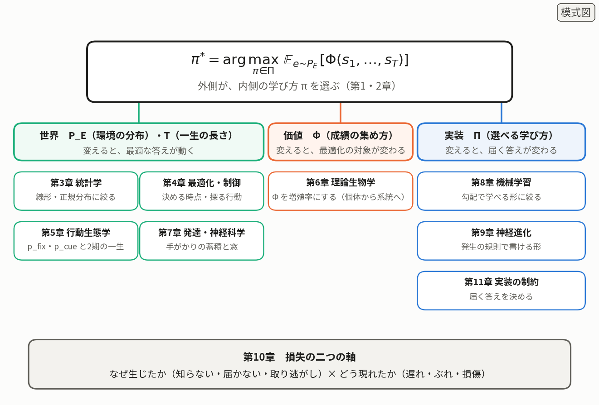
図0-1は、その地図である。中央の式には四つの「つまみ」があり、それらは三つの種類に分かれる。世界（環境の分布と一生の長さ）、価値（成績の集め方）、実装（外側が選べる学び方の範囲）である。世界を変えると最適な答えが動き、価値を変えると最適にしている対象そのものが変わり、実装を変えると届く答えが変わる。各分野は、このどれかの座標を固定し、どれかを動かして、答えを得てきた。
この本の主張の強さ
副題の「一つの問い」は、強い言葉に聞こえるかもしれない。正確に言うと、この本の主張は次のとおりである。
六つの分野の問題は、世界・価値・実装という共通の座標系の上に置ける。しかし、それは六つの分野が同じ問題を解いている、あるいは同じことを言っているという意味ではない。
同じ座標系に置けても、座標の値が違えば、答えの形まで変わる。この本で大事なのは、座標系に置くことで、「どの座標が違うから答えが違うのか」が見えるようになることである。また、同じ目的を、違うやり方で探していることもある（第2章で見るように、自然選択は勾配を計算しない）。そこでこの本では、分野の間の対応を述べるたびに、その強さを次の三つの印で示す。
- ■式：数学的に同じ式で書ける。記号を置き換えれば、一方の結果がそのまま他方の結果になる。例：心理学のレスコーラ・ワグナー則と、工学の LMS フィルタの更新
- ▲構造：最適化の構造（何を、何に対して、どんな制約の下で最適にするか）が同じだが、式そのものや探し方は違う。一方の結果を使うには、翻訳と確認が要る。例：自然選択と、勾配によるメタ学習
- ○類比：発想が近いが、同じ定式ではない。考えるヒントにはなるが、一方の結果を他方の証拠にはできない。例：機械学習のアンサンブルと、生物の両賭け
印には、色がなくても区別できるように、■（塗りつぶした四角）、▲（三角）、○（白抜きの丸）の形もつけた。■が最も強い対応、○が最も緩い対応である。印のついていない対応は、その章の中で説明している範囲にとどまる。
同じ二つのものの対応でも、前提しだいで印が変わる。■（式）の対応が▲（構造）に退くのは、多くの場合、次の四つの前提のどれかが外れるときである。
- 答えが線形で、雑音が正規分布に従うこと：この前提の下では、多くの分野の答えがカルマンフィルタの同じ式になる。外れると、同じ考え方の別の式になる（第3章3.7）
- 最適にする主体が同じであること：個体の成績を最適にするのか、系統の成績を最適にするのかが違えば、式は似ていても問題が変わる（第6章）
- 探し方が同じであること：勾配で探すか、突然変異と選択で探すかが違えば、同じ目的の式でも、たどり着く答えは同じとは限らない（第2章2.5）
- 成績の通貨が同じであること：金銭で測るか、増殖率で測るかが違えば、対応は構造の上のものになる（第4章4.4）
第11章11.3の表では、各分野が第2章の式とどの強さで対応するかを、その理由とともにまとめた。
この本が見せたい景色
六つの分野を一つの地図の上に並べると、一つの分野の中にいては見えにくいものが見えてくる。その代表が、第10章で扱う二つの学習の費用である。
- 進化生物学と制御工学は、学習の費用を主に遅れとして数えてきた。確かめている間は、正しく振る舞えない、という費用である
- 機械学習は、学習の費用を主に損傷として数えてきた。学習が、すでに持っている正しい答えを壊す、という費用である。冒頭の1の足し算を忘れたネットワークが、その例である
二つは、同じ問いの別の顔である。様子を見てから学べば壊さないが遅れ、学びながら様子を見れば遅れないが壊す。ところが、二つを同じ勘定で比べた研究は少ない。二つを数の上で比べるには、損失が「なぜ生じたか」というもう一つの軸が要る。それを第10章で組み立てる。刷り込みの窓が閉じることと、ネットワークが古い答えを壊すことが裏表だと先に書いたのは、この景色の入り口である。
第3章から第9章までは、各分野の答えを順に見ていく。そのうち第3・5・7・8章には、二つの費用が顔を出している箇所に「第10章への伏線」の段落を置いた。第10章で、それらを一つの表と図に集める。
本の流れは次のとおりである。
- 第1部 問題を書く（第1・2章）：正しい答えを、変わる速さで三つに分ける。それを一つの式にする
- 第2部 単純な世界の答え（第3・4章）：問題を思い切り単純にすると、答えが閉じた形で書ける。統計学、制御工学、数理最適化、経済学の答えを見る
- 第3部 生き物の答え（第5〜7章）：行動生態学、理論生物学、発達科学と神経科学の答えを見る
- 第4部 機械の答え（第8・9章）：機械学習と神経進化の答えを見る
- 第5部 つなぐ（第10・11章）：分野の間で別々に数えられてきた二つの費用を並べ、なぜ一つの理論にならないのかを考える
- 終章：二つの分野が組めば取り組める問いを挙げる
巻末の付録Aには、本文に出てきた語句と手法を、六つの分野ごとに対応させた表（ロゼッタ・ストーン）を、対応の強さの印とともに置いた。読んでいる途中で、ある分野の言葉が別の分野では何と呼ばれているかを知りたくなったら、付録Aを引いてほしい。付録Cには、この本を読むのに使う数学の道具を、短くまとめた。
この章のまとめ
- 刷り込みと破滅的忘却は、「何を生まれつき決め、何をいつ学ぶか」という一つの問いの裏表である
- この問いを、六つの分野が別々の名前で解いてきた
- この本は、それらを世界・価値・実装という共通の座標系の上に並べ、対応の強さを■式▲構造○類比で区別しながら翻訳する。その先に、遅れと損傷という二つの費用と、損失を三つの層に分ける見方が開ける
第1部 問題を書く
第1章 三つの時計 ―― 変わらないもの、世代で変わるもの、一生で変わるもの
1.1 生まれつき知っておくべきこと
リスの子は、生まれて数か月のうちに木から木へ跳び移れるようになる。子馬は、生まれて数時間で歩く。クモは、生まれたときから狩りができる。神経科学者のアンソニー・ゼイダーは、こうした例を挙げて、動物の能力の多くは学習ではなく、生まれつき備わっていると指摘した（Zador 2019）。
一方で、どんな動物も、生まれつきでは知りようのないことを抱えている。ガンのひなにとっての親の顔、人の子にとっての周りで話される言葉、生まれた土地のどこに餌があるか。こうしたことは、生まれる前には決まっていないので、ゲノムに書いておくことができない。
さらに、一度覚えても古くなることがある。季節で移る餌場、群れの中の順位、今日の天気。こうしたことは、一生の間、追い続けるしかない。
この三つの違いを、この章では「三つの時計」と呼ぶ。正しい答えが、どの速さの時計に合わせて変わるかの違いである。生まれつきと学習の配分の問いは、ほとんどこの区別から始まる。
1.2 正しい答えを三つの成分に分ける
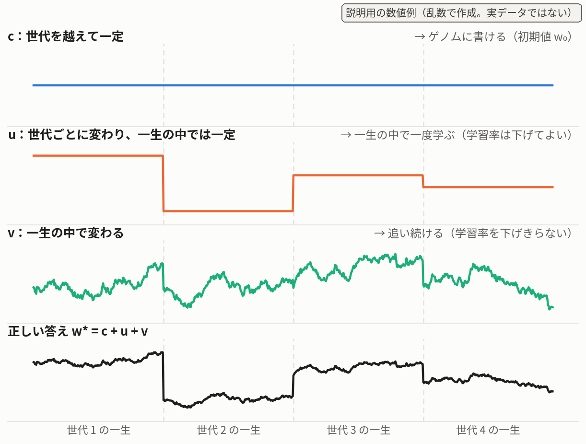
図1-1は、ある動物にとっての「正しい答え」（例えば、ある刺激にどれだけ強く反応すべきか）を、変わる速さで三つの成分に分けたものである。横軸は時間で、点線で区切った一区間が一つの世代の一生に当たる。
- 世代を越えて変わらない成分（c）：天敵の形、重力の向き、ある毒の味。何世代たっても同じなので、ゲノムに書いておけばよい。学ぶ必要はない
- 世代ごとに変わり、一生の中では変わらない成分（u）（→付録A-15）：親の顔、話される言語、生まれた土地の餌の場所。生まれる前には分からないが、一生の初めに一度学べば、あとはそのままでよい。学習の速さ（学習率）は、時間とともに下げてよい
- 一生の中で変わる成分（v）（→付録A-14）：季節で変わる餌場、移り変わる群れの序列。一度学んでも古くなるので、追い続ける必要がある。学習率は下げきってはいけない
実際の正しい答えは、この三つを足したものである（図1-1の一番下）。生まれつきと学習の配分は、正しい答えに、三つの成分がそれぞれどれだけ含まれているかで、ほぼ決まる。c の割合が大きければ生まれつきで済ませればよく、u の割合が大きければ一生の初めに学んでから固め、v の割合が大きければ学び続ける。
図1-1の u は、世代ごとに独立に引き直している。実際には、親の世代の u が子の世代の u をある程度予測することもある。この性質は、三つの時計とは別のものなので、1.5節で改めて扱う。
1.3 さらに二つの量
三つの成分だけでは、まだ足りない。配分を決めるには、さらに二つの量が要る。
一つめは、どの成分が体のどの部分に乗るかが、世代を越えて決まっているかどうかである。 例えば、天敵の形に反応する回路と、親の顔を覚える回路が、どの個体でも同じ場所にあるとしよう。そのとき、ゲノムは「この回路は固く、あの回路は柔らかく」と、部分ごとの可塑性（経験によって変わる度合い）をそのまま書ける。逆に、どの部分が変わるかが世代ごとに違うなら、ゲノムは部分ごとの可塑性を前もって書けない。個体が一生の中で、どの部分が変わるかを見分けるしかない。見分けるには時間がかかり、その間の成績は下がる。この「見分ける間の損」は、第5章と第10章で中心の話題になる。なお、ここでいう「部分」は、より一般には「方向」と読める（→付録A-30）。正しい答えの変わり方が、一つひとつの回路ではなく、いくつかの回路の組み合わせに乗っていることもあるからである（第8章、付録B.3）。
二つめは、経験の信頼性である（→付録A-16）。経験が正しい答えをどれだけ確かに示すか、つまり経験に含まれる雑音の大きさである。経験が当てにならないなら、いくら答えが変わる世界でも、経験に従って学ぶ価値は小さくなる。第5章で見るように、行動生態学は、これを学習の進化を決める主要な軸の一つとした。
まとめると、配分の問いには、次の五つの量が入る。
| 量 | 意味 | 主に扱う章 |
|---|---|---|
| c の割合 | 世代を越えて変わらない部分の大きさ | 第3・5章 |
| u の割合 | 世代ごとに変わり、一生の中では変わらない部分の大きさ | 第3・5・7章 |
| v の割合 | 一生の中で変わる部分の大きさ | 第3・6・7章 |
| どの部分が変わるかが決まっているか | ゲノムが部分ごとの可塑性を前もって書けるか | 第8・9・10章 |
| 経験の信頼性 | 経験に含まれる雑音の大きさ | 第3・5章 |
1.4 三つの時計と、二つの最適化
第2章では、この問題を「外側の最適化」と「内側の学習」の二重の最適化として書く。外側は進化（機械学習ではメタ学習）で、世代をまたいで一歩ずつ進む。内側は一生の中の学習で、経験一回ごとに一歩ずつ進む。三つの時計が、この二つにどう対応するかを、先に見ておこう。
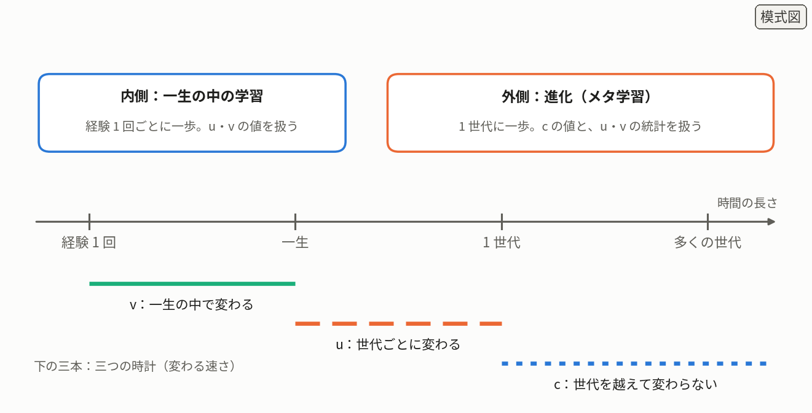
| 成分 | 外側（進化・メタ学習）が決めること | 内側（一生の学習）がすること |
|---|---|---|
| c（変わらない） | その値そのものを、生まれつきの答えとして書く | ほとんど動かさない |
| u（世代ごと） | 値は書けない。どの部分が u で、どれだけばらつくかを知って、その部分の可塑性を初めは高く、後で下げるように書く | 一生の初めに値を学び、固める |
| v（一生の中） | どれだけ速く動くかを知って、その部分の可塑性を下げきらないように書く | 値を追い続ける |
要点は一つである。外側が扱うのは、c の「値」と、u・v の「統計」（どこにあり、どれだけばらつき、どれだけ速く動くか）である。内側が扱うのは、u・v の「値」である。 外側は、u の値そのものは知りようがない。それは世代ごとに違うからである。しかし、u がどんなふうに違うかは、何世代もかけて「知る」ことができる。だから外側は、値の代わりに、値の学び方を書く。
1.5 時計のもう一つの性質：前の世代は、次の世代をどれだけ予測するか
三つの時計は、正しい答えが変わる速さの分類である。変わり方には、これとは別の性質がある。予測のしやすさである。
u は世代ごとに変わる。しかし、その変わり方には二通りありうる。毎世代、まったく新しく引き直されるのか。それとも、親の世代の u が、子の世代の u をある程度予測するのか。図1-1では前者を描いたが、実際には後者のことも多い。親が暮らした土地に子も暮らすなら、親が見つけた餌場は、子にとっても役に立つ。
予測できるなら、親が一生で学んだことを子に渡す仕組みに価値が生まれる。人間の文化的な伝達、エピジェネティックな継承（遺伝子の配列ではなく、その使われ方の印が子に伝わること）、母親を通じた効果、そして第6章で見る CRISPR 型の免疫である。例えば、ミジンコの母親が捕食者の出す匂いにさらされると、その子は、さらされなかった母親の子よりも、防御の固い形で生まれてくる（Agrawal, Laforsch & Tollrian 1999。同じ論文は、植物の野生のダイコンでも、同様のことを示した）。親が一生で得た情報が、子の「生まれつき」に書き込まれている。
両端を考えると分かりやすい。前の世代とまったく同じなら、それは実質的に c で、ゲノムに書けばよい。まったく予測できないなら、親からの情報は役に立たず、子は自分で学ぶしかない。その間で、伝える仕組みの出番がある。
数世代ごとに変わる環境（何年か続く干ばつなど）は、三つの時計に四つめを足さなくても扱える。各世代の一生の中では一定なので、それは u である。違うのは、u が世代の間で相関を持つことである。だから、「中間の時計」は、新しい成分ではなく、u の世代の間の予測のしやすさとして入る。
この予測のしやすさは、第5章で見るスティーブンスの模型の「世代の間の持続性」に当たる。スティーブンスの模型では、この量は、学習が有利になるかどうかを変えなかった。ただし、その模型には、親から子へ学んだことを伝える仕組みは入っていない。親や仲間から学ぶこと（社会学習）がいつ有利になるかも、この予測のしやすさで決まる。それは第5章5.6で見る。三つの時計の速さに加えて、この予測のしやすさを式の中にどう入れるかは、この本の枠組みを広げるときの課題の一つである（終章）。
数式で見る 三つの成分と、学習が取り除くべき不確かさ
世代 g の時刻 t での正しい答えを w* と書くと（添字に g と t をつける）、図1-1は次の式を描いたものである。
u の平均を 0、分散を σᵤ²、v は一歩ごとに分散 q で動くとしよう（v の初めの値は 0 とする）。生まれた瞬間の最良の推測は c で、そのときの推測の誤りの分散は σᵤ² である。
- c の部分は、ゲノムが書いておけば、誤りは生じない
- σᵤ² は、一生の初めに学習が取り除くべき不確かさである。一度取り除けば戻ってこない
- q t は、時間とともに増えていく不確かさである。取り除いても、また増える。だから学び続ける必要がある
第3章では、この三つの違いが、最適な学習率の下げ方の違いとしてそのまま現れることを見る。
世代の間の予測のしやすさ（1.5節）。 u が世代の間で相関を持ち、u_{g+1} = ρ u_g + ξ_g（ξ_g は平均 0 の新しい揺らぎ、|ρ| < 1）と動くとしよう。親が一生の終わりに u_g を û_g と推定し、それを子に渡せるなら、子の最良の初期値は次のようになる。
ρ が 0 なら、親の情報は役に立たず、初期値は c に戻る。ρ が 1 に近いなら、親の推定をほぼそのまま引き継げばよく、u は実質的に c に近づく。ρ は、親の情報をどれだけ割り引いて渡すかを決める■式（この単純な模型の中で）。
▶ 多次元では。 答えが多くの部分からなるとき、「c・u・v の割合」は、一つの数で表せるだろうか（→発展2）。
隣の分野から見ると
統計学の読者へ。 三つの成分の分け方は、階層ベイズモデル（データ集合ごとのパラメータを、さらに上の分布から引くモデル）と同じ形をしている■式。c はすべてのデータ集合に共通する全体の平均、u はデータ集合（世代）ごとに引かれるパラメータ、v はデータ集合の中での時間変化（状態空間モデルの状態雑音）に当たる。「何を生まれつき決めるか」は、「どこまでを事前分布に入れ、どこからをデータから推定するか」と言い換えられる。
機械学習の読者へ。 c は多くの課題に共通する知識で、事前学習で得るものに近い○類比。u は課題ごとに違う知識で、少数の例からの適応（微調整）で得るものに当たる▲構造。v は一つの課題の中で目標が動くこと、つまり概念ドリフトに当たる▲構造。「どの部分が変わるかが決まっているか」は、課題ごとに動かすべきパラメータが、課題の分布の中で決まっているかどうかに当たる。
思考実験。 千世代に一度だけ変わる成分は、c だろうか、u だろうか。ゲノムに書いておけば、千世代に一度、全員が外れる。毎世代学ぶことにすれば、残りの九百九十九世代で、学ぶ手間を払い続ける。三つの時計の境目は、変わる速さだけでなく、外れたときの損と学ぶ手間の比で決まるはずである。この比の計算は、第5章と第6章で出てくる。
この章のまとめ
- 正しい答えは、世代を越えて変わらない c、世代ごとに変わる u、一生の中で変わる v に分けられる
- c は書き、u は一生の初めに学んで固め、v は学び続ける。配分は三つの割合でほぼ決まる
- これに「どの部分が変わるかが決まっているか」と「経験の信頼性」の二つが加わる。外側（進化）は c の値と u・v の統計を、内側（学習）は u・v の値を扱う
第2章 一つの式で書く ―― 進化が学習の仕方を決める
2.1 誰も設計していないのに
刷り込みの窓が、親を覚えるのに足りる長さで開き、覚え終わるころに閉じるのは、誰かが設計したからではない。窓が開きすぎた系統や、早く閉じすぎた系統が、長い時間をかけて少しずつ子孫を減らした結果である。進化は何かを計算しているわけではないが、結果だけを見ると、学習の仕方を「最適化」したように見える。
機械学習には、これとよく似た手続きがある。メタ学習である。たくさんの課題を用意し、各課題での学習の成績が良くなるように、学習の初期値や学習率そのものを、外側から調整する。こちらは実際に計算機が計算する。
この章では、この二つに共通する形を、一枚の図と二つの式にする。それが、この本の背骨になる。
2.2 外側と内側の入れ子
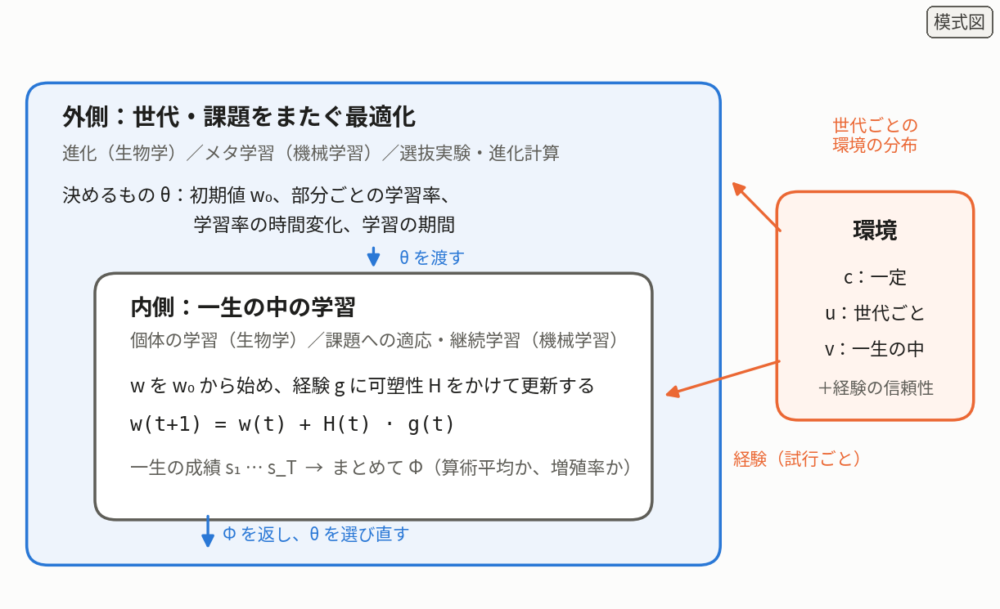
図2-1は、二つの最適化の関係を描いたものである。第1章の1.4節の表で見たとおり、外側は c の値と u・v の統計を、内側は u・v の値を扱う。
- 内側は、一つの個体（機械学習では一つの課題）の一生である。初期値 w₀ から出発し、経験を受けるたびに、可塑性 H の分だけ答え w を直す
- 外側は、世代（課題）をまたいで、内側の初期値と可塑性の決め方 θ を選ぶ。生物では進化、機械学習ではメタ学習が、これに当たる。選抜実験や数値シミュレーションでは、選抜の手続きがこれに当たる
- 外側は、内側の一生の成績をまとめた値 Φ を見て、θ を選び直す
外側が直接に決めるのは答えそのものではなく、答えの学び方である。どこから出発するか（初期値）、どの部分をどれだけ動かすか（部分ごとの可塑性）、時間とともにどう動かし方を変えるか（可塑性のスケジュール）、経験を見てどう決め直すか（可塑性の調節の規則）。第1章の言葉でいえば、c は初期値に書き、u と v は可塑性に任せる、という配分を、外側が決める。
思考実験。 子が育つ町を、親は前もって知らないとしよう。親が子に渡せるのは、その町の地図ではない。渡せるのは、知らない町で地図を作るやり方である。どの方角はどの町でも同じなので覚えなくてよいか、どの通りは町ごとに違うので最初に歩いて確かめるべきか、どの目印はよく動くので信じすぎない方がよいか。外側が選んでいるのは、この「地図の作り方」の方である。地図そのもの（答え）は、子が一生の中で作る。
2.3 二つの式
図2-1をそのまま記号にすると、次の二つの式になる。外側の式と、内側の式である。
外側の式は、「環境 e をその分布 P_E から引き、一生の成績 s₁, …, s_T をまとめた値 Φ を、平均として最大にする θ を選べ」と読む。arg max は「最大にするものを選ぶ」という意味である。
内側の式は、「次の答えは、今の答えに、更新の向き g_t を可塑性 H_t 倍して足したもの」と読む。更新の向き g_t は、機械学習では誤差の勾配、神経科学では「前の細胞の活動 × 後の細胞の活動」（ヘッブ則）などに当たる。
可塑性 H_t には、いくつかの意味が重なっている。
- 答えが多くの部分（例えば多くのシナプス）からなるとき、H_t は部分ごとに違ってよい。これが部分ごとの可塑性である（→付録A-8）
- H_t は時刻 t によって変わってよい。これが可塑性のスケジュール（感受期や学習率の減衰）である（→付録A-9）
- H_t は θ を通じてゲノムに指定される。これがゲノムによる指定である
- H_t は、それまでの経験によって変わってよい。これが観察して決め直す規則（メタ可塑性）である（→付録A-10）
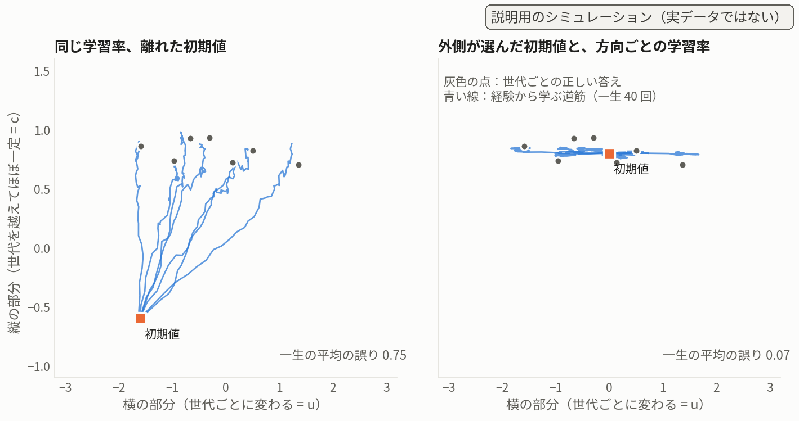
図2-2は、外側の決めたことが、内側の学習の道筋をどう変えるかを描いた数値例である。答えは二つの部分（横軸と縦軸）からなり、灰色の点が、世代ごとに違う正しい答えである。正しい答えは、横軸の方向には世代ごとに大きくばらつくが（第1章の u）、縦軸の方向にはほとんど同じ値にある（c）。線は、雑音のある経験から学んでいく個体の道筋である。
- 左は、初期値が正しい答えの群れから離れ、二つの部分に同じ学習率を使う個体である。縦軸の方向にも、わざわざ学んで近づかなければならず、その間は誤りが大きい
- 右は、外側が初期値を群れの中心に置き、縦軸の学習率を低く、横軸の学習率を高くした個体である。縦軸はほとんど動かず（もともと正しい）、横軸だけを速く学ぶ
一生の平均の誤りは、左が 0.75、右が 0.07 で、十倍ほど違う。
外側は、どの道筋をたどるかを直接には決めない。決めるのは出発点と、方向ごとの動きやすさである。それだけで、内側の学習は、世代ごとに違う答えに速く届くようになる。第3章では、この「方向ごとの動きやすさ」の最適な値が、カルマンフィルタで計算できることを見る。
2.4 ロスは二か所に出てくる
機械学習の言葉でいう「ロス（損失関数）」は、この骨格の二か所に出てくる。一生の中の学習を動かす内側のロスと、外側の最適化が小さくする外側のロスである（→付録A-1、A-2）。メタ学習の言葉では、それぞれ訓練ロスとメタ損失に当たる。
内側のロス ℓ_t は、一生の中の各時刻の誤りの大きさである。更新の向き g_t は、その負の勾配（ロスが最も速く減る向き）で、可塑性 H_t は学習率に当たる。
生物では、誤差の信号（教師信号や報酬予測誤差）が勾配の役をすると考えられている。ただし、ヘッブ則のように、何かのロスの勾配として導かれたのではない更新も多い。
外側のロスは、成績 Φ の符号を反転したものである。その測り方には、大きく二つある。
- 適応後のロス：一生（あるいは決められた回数の学習）を終えた後の誤りだけを数える。少数の例から学ぶメタ学習の多くは、こちらを使う
- 累積ロス：一生の各時刻の誤りを、全部足す。生物の一生の成績はこちらに近い。生き物は、学び終わる前にも、餌を探し、天敵を避けなければならないからである
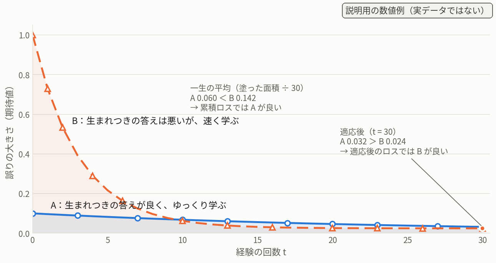
図2-3は、二つの学び方を比べた数値例である。A は、生まれつきの答えが良い（初めの誤りが小さい）が、ゆっくり学ぶ。B は、生まれつきの答えは悪いが、速く学ぶ。30回の経験の後の誤り（適応後のロス）では、B の方が小さい（A 0.032、B 0.024）。ところが、一生の平均の誤り（累積ロス）では、A の方がずっと小さい（A 0.060、B 0.142）。B は、学ぶ前の大きな誤りを払っているからである。
どちらのロスで測るかで、良い学び方が入れ替わる。 累積ロスでは、「初めから正しいこと」（生まれつきの答え）と「速く学ぶこと」の両方に価値が出る。適応後のロスでは、生まれつきの答えの価値は、「限られた歩数の後にどこまで届くか」を通じてしか現れない。生まれつきと学習の配分を考えるとき、この違いは小さくない。
生物では、外側のロスは適応度（その個体が残す子の数の期待値）の符号を反転したものである▲構造。誰かが勾配を計算するのではなく、自然選択が、結果として適応度を大きくする（次の節）。また、内側と外側のロスは同じとは限らない。内側は微分できる代わりの量、外側は正答率や生存のような微分できない量であることが多い。
2.5 進化は勾配を計算しない
外側の式は、進化にもメタ学習にも同じ形で書ける。しかし、同じ式を、まったく違うやり方で探している（→付録A-5）ことに注意が要る。機械学習のメタ学習の多くは、内側の学習の道筋をさかのぼって、外側の成績が良くなる向き（勾配）を計算し、その向きに θ を動かす。自然選択は、そうした向きを計算しない。
| 自然選択 | 勾配によるメタ学習 | |
|---|---|---|
| 次の候補の作り方 | 突然変異と組み換えで、ランダムに変える | 外側の成績の勾配の向きに動かす |
| 評価の単位 | 個体が一生を終えた結果（子の数）。一生の途中の誤りを、ばらばらに評価することはできない | 設計者が決めたロスを、課題ごとに計算する |
| 偶然の影響 | 集団が有限なので、有利でない変異が偶然に広まることがある（遺伝的浮動） | 乱数はあるが、目的の向きに平均として進む |
| 書き方のつながり | 一つの遺伝子が多くの形質に効く（多面発現）ので、一つのつまみだけを動かすことが難しい | パラメータごとに、ほぼ独立に動かせる |
| 目的そのもの | 環境や他の個体の戦略が変わると、何が有利かも変わる | 設計者が固定する |
| 一歩の速さ | 一世代に一歩 | 計算機の速さで、何百万歩も進める |
この違いから、二つの注意が出てくる。
一つめは、進化が外側の式を最大にしている、というのは仮定であるということである。行動生態学では、この仮定を置いて「もし最適ならどうなるか」を計算し、実際の生物と比べる方法がとられてきた（最適性の模型）。最適な答えは、実際の答えを測るための物差しであり、実際の生物が最適だという主張ではない。グールドとルウォンティンは、生物のあらゆる形質を最適化の産物として説明しようとする考え（適応主義）を、強く批判した（Gould & Lewontin 1979）。生物は白紙から設計されるのではなく、祖先の体と発生の仕組みを作り替えることしかできないからである。この本で「進化が決める」と書くときも、物差しとしての意味であり、こうした歴史の制約は、第11章で実装の制約 Π の一つとして扱う。
二つめは、式が同じでも、探し方が違えば、見つかる答えも違いうるということである。勾配法は、なめらかな地形を少しずつ下りるのは得意だが、ほとんどの場所で平らで、一点だけが高い地形（第5章のヒントンとナウランの例）では、向きの手がかりが得られない。自然選択は、勾配のない離散的な変化も試せるが、一歩が遅く、偶然にも左右される。機械学習にも、勾配を使わずに候補をばらつかせて選ぶ進化戦略という方法があり、二つの探し方の中間に当たる。
以下では、進化とメタ学習の対応を、同じ構造を持つ別の最適化▲構造として扱う。同じ式で書けるのは、外側の「目的」であって、外側の「探し方」ではない。
2.6 成績の集め方：平均か、増殖率か
外側の式の Φ は、一生の成績 s₁, …, s_T をまとめる仕方である（→付録A-3）。これを何にするかで、最適な答えは変わる。
- 算術平均：一生の成績を平均する。機械学習と多くの進化シミュレーションはこれを使う。良いときと悪いときを、同じ重みで足し合わせる
- 増殖率：子孫の数が世代ごとに何倍になるかを掛け合わせ、その長期の伸び（幾何平均の対数）で測る。理論生物学の一部はこれを使う。掛け算なので、一度でも 0 倍になれば、その系統は終わる
第6章で詳しく見るが、Φ を算術平均から増殖率に変えるだけで、最適な戦略の形が変わる。算術平均なら「全員が最も得な答えに賭ける」のが最適だったものが、増殖率では「個体ごとに答えをばらつかせる」のが最適になる。
また、生まれてすぐの失敗が死につながる環境は、Φ の中で一生の初めに重い重みを置くことに当たる。この場合、生まれつきの答えの価値は、算術平均で測ったものよりも大きくなる。
2.7 一つの式にまとめる
2.3節の二つの式は、さらに一つにまとめられる。内側の学習の仕方を、「それまでの経験の履歴から、次の答えを決める関数 π」と広く取り直せばよい。
ここで 𝒟₁:ₜ は時刻 t までの経験の履歴、Π は外側が選べる学び方の集まりである。初期値 w₀ も、部分ごとの可塑性 H も、学習率を下げるスケジュールも、観察して決め直す規則も、どれも π の一つの作り方にすぎない。ゲノムやメタ学習が書ける形の制約は、Π の大きさとして入る。
この式が、この本の座標系である。 この式の中には四つの「つまみ」があり、それらは三つの種類に分かれる。
| 種類 | つまみ | 意味 | 変えると何が動くか | 主に扱う章 |
|---|---|---|---|---|
| 世界 | P_E | 環境の分布（c・u・v の割合、経験の信頼性） | 最適な答え | 第1・3・5章 |
| 世界 | T | 一生の長さ | 最適な答え | 第5・10章 |
| 価値 | Φ | 成績の集め方（算術平均か、増殖率か） | 最適にしている対象そのもの（個体か系統か） | 第6章 |
| 実装 | Π | 外側が選べる学び方の範囲（実装の制約） | 届く答え | 第8・9・11章 |
世界のつまみは、生き物や機械が置かれた条件である。価値のつまみは、何を良しとするかである。実装のつまみは、何を答えとして実現できるかである。三つは種類が違う。世界や価値を変えると「最適な答え」が動くが、実装を変えると、最適な答えはそのままで、「届く答え」が動く。
一つだけ注意しておく。T は、基本的には世界の条件（一生の長さ）として扱うが、二つの顔を持つ。機械学習では、学習に使える計算の予算、つまり実装の資源として扱われる。進化生物学では、寿命そのものが生活史の戦略として進化する量である。
六つの分野は、このつまみのどれかを固定し、どれかを動かして、それぞれの答えを得てきた。第3章からは、それを順に見ていく。
学習者が何を知っていてよいか（ここでは環境の分布 P_E）と、成績の集め方 Φ（ここでは期待値）を決め、Π の制約を外せば、比べるための基準点が一つ定まる。P_E を事前の知識として持ち、経験のたびにベイズの規則で知識を改め、その時点で最良の答えを出す学習者、つまりベイズ最適な学習者である。ベイズの規則は、新しい証拠を見たときに、それまでの見込み（事前分布）を、筋の通ったやり方で改める規則である（付録C）。
それなら問題は解けているのではないか、と思うかもしれない。そうではない。ベイズ最適な学習者は、たいていの環境では計算できない。また、生物も機械も、Π を自由には選べない。ゲノムが書ける形、脳の回路が実行できる更新、勾配が使えるかどうかといった実装の制約が、Π そのものを決めている。この本では、ベイズ最適な学習者を「目指すべき答え」としてではなく、「実際の学習者がどこで、なぜずれるかを測る物差し」として使う。「物差し」の意味は、第10章と第11章で、損失を三つの層に分けることで正確にする。この点は、第9章でも考える。
2.8 この本の記号
この本では、六つの分野の式を、できるだけ同じ記号で書く。第3章から先の「数式で見る」で記号の意味を忘れたら、この表に戻ってほしい。
| 記号 | 意味 | 初出 | 別の章での呼び名と注意 |
|---|---|---|---|
| w* | 正しい答え（環境が求める答え） | 第1章 | 世代と時刻で変わりうる |
| c、u、v | 正しい答えの三つの成分。世代を越えて一定（c）、世代ごとに変わる（u）、一生の中で動く（v） | 第1章 | u のばらつきの大きさを σᵤ² と書く |
| w_t、w₀ | 時刻 t の答えと、生まれたときの答え（初期値） | 第2章 | 第8章のネットワークの重みも w と書く（原論文では θ） |
| θ | 外側（進化・メタ学習）が決めるもの。初期値と可塑性の決め方 | 第2章 | 原論文が重みを θ と書く場合も、この本では w と書く |
| H_t | 可塑性（学習率）。部分ごと、時刻ごとに違ってよい | 第2章 | 最適な値はカルマンの利得 K_t（第3・7章）。一定の値は η（第3・10章）。第8章のパラメータごとの値は α |
| g_t、ℓ_t | 更新の向きと、各時刻のロス | 第2章 | |
| q | 正しい答えが一歩ごとに動く大きさ（分散） | 第1章 | 第5章の経験の信頼性は p_cue と書いて区別する（原論文では q） |
| r | 経験の雑音の大きさ（分散）。小さいほど経験が当てになる | 第3章 | 第1章の「経験の信頼性」に当たる |
| P₀、P_t | 初めと時刻 t の、推定の不確かさ（分散） | 第3章 | 小さいほど確信が強い。r/P₀ は「生まれる前に得ていた経験の回数」に当たる |
| T | 一生の長さ（経験の回数） | 第2章 | 機械学習では計算の予算として扱われる。第10章の準備の時間は T_prep と書いて区別する |
| P_E、e | 環境の分布と、そこから引いた一つの環境 | 第2章 | |
| Φ、Λ | 一生の成績のまとめ方と、長期の増殖率 | 第2章、第6章 | |
| Π、π | 外側が選べる学び方の範囲と、その中の一つの学び方 | 第2章 |
原論文の記号がこの表と違うときは、この表の記号に書き換え、その場で断った。各章の式の中だけで使う文字（第4章の γ・ξ、第8章の λ など）は、その章の中で説明する。
数式で見る 内側のロスと外側のロス
内側の学習を勾配降下で書くと、次のようになる。
例えば、入力 x から y = xw を予測し、二乗のロス ℓ = ½(y − xw)² を使うと、勾配は −(y − xw)x なので、更新は「誤差 × 入力」になる。
これは、工学では LMS（最小二乗平均）、心理学ではデルタ則（レスコーラ・ワグナー則）と呼ばれる更新と同じ形である■式。ロスをロジスティック損失にしても「誤差 × 入力」の形になる。ロスを max(0, −y·xw) にした劣勾配降下（角のある関数で、勾配の代わりに使う傾き）はパーセプトロンの更新、max(0, 1 − y·xw)（ヒンジ損失）にするとマージンつきのパーセプトロンの更新になる。
外側のロスの二つの測り方は、次のように書ける。
累積ロスでは、各時刻の経験で更新する前の w_t で答えさせて採点し、一生分を足す。オンライン学習の「累積損失」に当たる■式。累積損失から、後から振り返って最良だった一つの答えを使い続けた場合の累積損失を引いたものを「リグレット」（後悔）と呼ぶ。
▶ 多次元では。 図2-2の右の個体は、軸に沿って学習率を変えた。正しい答えのばらつきが斜めに広がっていたら、どうすればよいだろうか（→発展1、発展2）。
隣の分野から見ると
生物学の読者へ。 機械学習では、外側の最適化を勾配法で直接に計算できるので、「この環境の分布とこの成績の集め方なら、最適な学び方はどれか」を、計算機の上で調べられる。それは、2.5節で見たとおり進化そのものの再現ではないが、行動生態学の最適性の模型と同じ意味での物差しになる。逆に、機械学習のメタ学習でよく使われる「適応後のロス」は、学ぶ前の誤りを数えない。生き物の一生にとっては、これは大きな省略である。生物学が当然とする「累積の成績」を外側のロスにしたメタ学習は、それだけで研究の対象になる。
機械学習の読者へ。 進化生物学の模型の「適応度」は、外側のロスの符号を反転したものである。ただし多くの場合、それは一生の成績の算術平均ではなく、子孫の数であり、世代を越えると掛け算でまとまる（第6章）。また、生物の外側の最適化（自然選択）は、勾配を計算しない。突然変異と選択による、勾配を使わない最適化である（2.5節）。
思考実験。 メタ学習の外側を、勾配法ではなく「突然変異と選択」で回し、しかも評価を一生の最後の子の数だけにしたら、何が見つかり、何が見つからなくなるだろうか。勾配が教えてくれていた「どの部分をどれだけ変えればよいか」の手がかりが消えたとき、部分ごとの学習率のような細かい配分は、どこまで進化できるだろうか。
この章のまとめ
- 外側（進化・メタ学習）が、内側（一生の学習）の初期値と可塑性を決める。これを一つの式に書けるが、進化とメタ学習は、同じ目的を違う探し方で探している
- ロスは内側と外側の二か所に出てくる。外側のロスを適応後で測るか累積で測るかで、良い学び方が入れ替わる
- 式の四つのつまみは、世界（環境の分布、一生の長さ）・価値（成績の集め方）・実装（選べる学び方の範囲）の三種類に分かれ、各分野はそのどれかを動かしてきた
第2部 単純な世界の答え
第3章 学習率の正しい下げ方 ―― カルマンフィルタが教える「どこに」と「いつ」
3.1 一度の経験で、どれだけ考えを改めるか
評判の店に初めて行って、料理がまずかったとする。その店の評価を、どれだけ下げるべきだろうか。
答えは、少なくとも三つのことによる。その店に今まで何回行ったか。1回目なら評価を大きく変えてよいが、20回目なら、1回のまずい料理で評価を大きく変えるべきではない。一回の食事が、店の実力をどれだけ確かに示すか。日によって出来が大きくぶれる店なら、1回の経験はあまり当てにならない。そして、店そのものが変わっていないか。料理人が替わったなら、昔の経験は役に立たない。
この三つは、第1章の言葉に対応している。今まで何回行ったかは、推定がどれだけ確かになったか。一回の出来のぶれは、経験の信頼性。店が変わるかどうかは、正しい答えが一生の中で動く成分 v があるかどうか、である。
「一度の経験で、どれだけ考えを改めるか」は、学習率そのものである。この章では、問題を思い切り単純にすると、最適な学習率が式で書けることを見る。その答えは、生まれつきと学習の配分のうち「どこに」と「いつ」の二つに、同時に答える。
3.2 平均を取ることは、学習率を 1/n で下げること
まず、店が変わらない場合を考えよう。n 回の食事の点数 y₁, …, yₙ から店の実力を推定するなら、平均を取るのが自然である。この平均は、新しい点数が来るたびに、次のように更新できる。
括弧の中は「新しい点数と、今の推定との差」、つまり予測の誤差である。それに 1/n をかけて推定を直している。平均を取ることは、学習率を 1/n で下げながら、誤差の分だけ推定を直すことと同じである。
1回目の学習率は 1（前の推定を捨てて、最初の点数をそのまま使う）、2回目は 1/2、10回目は 1/10 になる。経験が増えるほど、1回の経験で考えを改める割合は小さくなる。これは、20回目のまずい料理で評価を大きく変えるべきでない、という直観と合っている。
3.3 確率的近似：学習率の下げ方の条件
1951年、統計学者のハーバート・ロビンスとサットン・モンローは、この考えを一般化した（Robbins & Monro 1951）。雑音のある観測から、ある関数の値が目標になる点を、少しずつ近づけて求める方法である。更新の大きさの列 aₙ が次の二つの条件を満たし、観測が有界で、関数が目標の両側ではっきり離れていれば、推定値は目標に収束する。
第一の条件は、学習率の合計が無限大になること、つまりどれだけ遠くから出発しても、目標に届くだけの歩幅の合計があることである。第二の条件は、学習率の二乗の合計が有限であること、つまり最後には雑音の影響を消せることである。1/n はこの二つをちょうど満たす。
ただし、この結果は、目標が一つに固定されていることを前提にしている。1/n で下げると、新しい観測の重みは 0 に近づいていくので、途中で目標が動いても追いつけない。料理人が替わった店で、20回分の昔の記憶が新しい評価を邪魔するのは、このためである。
3.4 動く目標：雑音を拾うか、遅れるか
目標が動く場合はどうか。学習率を一定の値 η に保つと、推定は「直近の経験ほど重く、昔の経験ほど軽く」平均したものになる（指数移動平均）。このとき、推定の誤りは二つの部分に分かれる。
- 雑音を拾う誤り：学習率が大きいほど、1回の経験の雑音に振り回される
- 目標に遅れる誤り：学習率が小さいほど、動いた目標に追いつくのが遅れる
学習率を上げれば前者が増え、下げれば後者が増える。どこかに、両者の合計が最小になる学習率がある。工学では、学習率を一定に保つ適応フィルタ（Widrow–Hoff の LMS フィルタ）について、この取り合いが詳しく調べられた（Widrow ら 1976）。目標の動きの速さ（一歩あたりの分散）を q、経験の雑音の分散を r とすると、最適な学習率は、q が r より十分小さいとき、およそ √(q/r) になる（付録B.2）。
目標がまったく動かない（q = 0）なら、最適な学習率は 0 に向かって下がっていく。動くなら、正の値に止まる。「一生の途中で答えが変わる世界では、学習率を下げきってはいけない」という第1章の結論は、この取り合いの言い換えである。
3.5 カルマンフィルタ：二つを一つにまとめる
止まっている目標なら、学習率を 1/n で下げればよい。動き続ける目標なら、学習率を下げきらずに保てばよい。では、二つを一つの規則で扱い、しかも「初めからどれだけ知っているか」まで勘定に入れることはできないだろうか。1960年、ハンガリー生まれの工学者ルドルフ・カルマンが、この問いに答える推定の方法を示した（Kalman 1960）。カルマンフィルタである。この方法は、まもなくアポロ計画の宇宙船の航法に使われ、今も、乗り物の位置の推定をはじめ、動くものを追う計算の基本になっている。前提は、正しい答えがランダムに少しずつ動き（ランダムウォーク。一歩あたりの分散 q）、観測がそれに雑音（分散 r）を加えたもので、どちらの雑音も正規分布に従うことである。この前提の下では、カルマンフィルタは、平均二乗誤差の意味で最良の推定を与える。
カルマンフィルタの更新は、3.2節の平均の更新と同じ形をしている。
違いは、学習率 K_t（カルマンの利得と呼ぶ）が、推定の不確かさから自動的に決まることである。今の推定がまだ不確かなら、利得は大きく、新しい経験で大きく考えを改める。推定が確かになれば、利得は小さくなる。
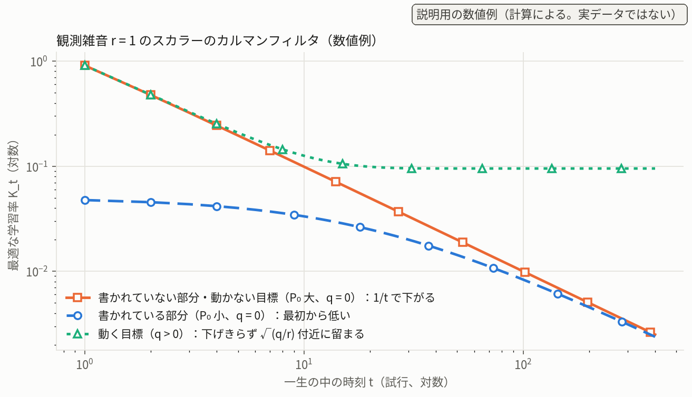
図3-1は、観測の雑音 r = 1 として、利得がどう変わるかを計算した数値例である。この図から、三つのことが読み取れる。
- どこに（生まれつきの確信の配分）（→付録A-7）。初めの推定への確信が強い部分（初めの不確かさ P₀ が小さい、青の線）では、利得は初めから低い。確信が弱い部分（P₀ が大きい、橙の線）では、利得は高い。答えが多くの部分からなるとき、ゲノムが知っている部分（第1章の c）は初めから学習率を低く、知らない部分（u）は高くするのが最適である。部分ごとの可塑性の配分は、部分ごとの事前の不確かさの配分で決まる
- いつ（動かない目標）。 目標が動かない（q = 0）なら、利得は経験の回数にほぼ反比例して下がっていく。3.2節の 1/n と同じ下がり方である
- いつ（動く目標）。 目標が動く（q > 0、緑の線）なら、利得は 0 にならず、正の値に落ち着く。3.4節の「下げきってはいけない」と同じである。落ち着く値は、動きの速さと雑音の比でおよそ √(q/r) になる
一つ注意がある。1. の「部分ごとの不確かさの配分で決まる」が正確に成り立つのは、部分どうしの不確かさに相関がなく、入力にも相関がない場合である。一般には、部分どうしの不確かさの相関も、学習率に効く（付録B）。
第10章への伏線。 1. は、裏返すと警告になる。どの部分の確信が強いかを知らない学習者は、全部の部分に同じ学習率を使うしかない。そうすると、ゲノムがすでに正しく知っていた部分まで、経験の雑音に合わせて動かしてしまう。これが、第8章で見る「損傷」の、最も単純な形である。
3.6 学習率そのものを経験から学ぶ
カルマンフィルタは、q と r とどの部分の確信が強いかを、前もって知っていることを前提にしている。それが分からないときは、どうすればよいか。
1992年、リチャード・サットンは、入力ごとの学習率そのものを、経験から勾配法で調整する方法を示した（Sutton 1992）。IDBD（Incremental Delta-Bar-Delta）と呼ばれる。考え方は単純で、ある入力の重みが同じ向きに動き続けるなら、その入力の学習率を上げ、行ったり来たりするなら下げる。
サットンは、20個の入力のうち5個だけが目標に関係し、その関係が一定の間隔で反転する課題で、この方法を試した。関係する5個の入力の学習率は、初めの 0.05 から 0.13 付近まで上がって落ち着き、関係しない15個の入力の学習率は 0 近くまで下がった。0.13 付近は、関係する入力の学習率を固定して調べたときの最良の値とほぼ同じだった。部分ごとの学習率の配分を、経験から自分で見つけたのである。サットンは、こうした調整の効果は一つの課題の中では小さく、関連する課題が続くときに大きいかもしれない、という見解も述べている（試した結果ではない）。これは、第2章の外側の最適化（メタ学習）に、そのまま通じる見方である。
3.7 前提を外すと、何が起こるか
カルマンフィルタの答えは美しいが、前提が強い。答えが線形で、雑音が正規分布に従い、モデル（どの部分が c・u・v のどれか、q と r の値）が分かっていることである。この本の残りの章は、この前提のうち、どれを外すかで並べることもできる。
| 外す前提 | 起こること | 主に扱う章 |
|---|---|---|
| 行動が、得られる情報に影響しない | 探るための行動に費用がかかる | 第4章 |
| モデルが分かっている | どの部分が変わるかを見分ける間に、損が生じる | 第5・10章 |
| 成績を平均で測る | 一度の失敗が系統を終わらせる世界では、答えが変わる | 第6章 |
| 外側が学習率を部分ごとに自由に書ける | 書ける形が限られる | 第9章 |
| 学習則が最適である | 学習が、守るべき答えを壊す | 第8・10章 |
数式で見る スカラーのカルマンの利得
答え w* がランダムウォークで動き、観測 y がそれに雑音を加えたものとする。
推定 w_t の不確かさ（事後分散）を P_t とすると、カルマンフィルタは次のように更新する。
動かない目標（q = 0）。 1/P_{t+1} = 1/P_t + 1/r なので、1/P_t = 1/P₀ + t/r である。これを利得の式に入れると、次のようになる。
r/P₀ は、生まれつきの答えへの確信を、「仮想的な観測の回数」で表したものである。P₀ が小さい（確信が強い）ほど、初めから多くの経験を積んだのと同じだけ、学習率が低い。P₀ → ∞（何も知らない）なら K_t = 1/(t + 1) で、3.2節の平均と同じになる。
動く目標（q > 0）。 定常の分散 P̄ は P̄ = P̄r/(P̄ + r) + q を満たす。これを解くと、次のようになる。
雑音を拾う誤りと遅れる誤りの取り合い（3.4節）から求めた最適な学習率と、q ≪ r のとき一致する。導出の詳細と、行列の場合は付録Bにまとめた。
▶ 多次元では。 全部の部分の学習率を、同じ速さで下げてよいのは、どんなときだろうか（→発展2）。
隣の分野から見ると
生物学の読者へ。 「感受期が閉じる」「変わりやすい環境では学習率が高い」は、生物に固有の仕組みを仮定しなくても、推定を最適に行うだけで出てくる。カルマンの利得は、ある部分がどれだけ確かに分かっているか（P₀）、どれだけ速く変わるか（q）、経験がどれだけ確かか（r）で、その部分の学習率と、その時間変化を決める。ある生物で臨界期が見つかったとき、「なぜ閉じるのか」に加えて、「その生物の環境の統計から予想される閉じ方と比べて、早いか遅いか」を問える。動物の条件づけの学習率を、手がかりごとのカルマンの利得として説明する研究も、神経科学と心理学にある（Dayan, Kakade & Montague 2000、Gershman 2015）。模型としては同じ式だが■式、動物が実際にこの計算をしているかは、行動のデータで確かめる問いである。
機械学習の読者へ。 学習率の減衰スケジュールは、目標が動かない場合の Robbins–Monro の条件と、動く場合の追従と雑音の取り合いという、古い結果と対応づけて読める▲構造。パラメータごとの適応的な学習率（AdaGrad や Adam など）も同じ方向を向いているが、実際の手法の多くは、勾配の大きさをそろえる工夫や経験則から作られていて、カルマンの利得とは別のものである○類比。初めの確信を「仮想的な観測の回数 r/P₀」として学習率に入れる見方は、事前学習した重みをどれだけ動かすかを考える一つの物差しになる○類比。
思考実験。 大きな言語モデルを微調整するとき、事前学習で得た重みの一つ一つに「何回分の観測に当たる確信があるか」を見積もれたとしたら、学習率をどう配るだろうか。確信の強い重みは動かさず、弱い重みだけを動かす。それは、第8章の EWC が近似的にしていることでもある。
この章のまとめ
- 平均を取ることは学習率を 1/n で下げることで、動かない目標にはこれが最適である。動く目標には、学習率を下げきってはいけない
- カルマンの利得は、部分ごとの事前の確信（どこに）と、経験の回数・目標の動き（いつ）から、最適な学習率を同時に決める
- この答えは強い前提の上にある。残りの章は、どの前提を外すかで並べられる
第4章 先に決めるか、待って決めるか ―― 在庫・工場・制御の数理
4.1 傘を持って出るか、降ってから買うか
朝、家を出るときに、傘を持っていくかどうか迷う。持っていけば、降らなかったときに荷物になる。持っていかなければ、降ったときにコンビニで買うはめになる。
この小さな迷いは、「生まれつき決めておくか、経験してから学ぶか」と同じ形をしている。傘を持って出るのは、雨が降るかどうか分かる前に決めておくこと、つまり生まれつきの答えに当たる。降ってから買うのは、分かってから調整すること、つまり学習に当たる。前もって決めるには、外れたときの損がある。後で調整するには、調整の費用がかかる。
工学と経済学は、この形の問題を、生物学とは別の言葉で解いてきた。この章では、三つの枠組みを見る。数理最適化の二段階確率計画、制御工学の双対制御、経済学のリアルオプションである。どれも、第3章のカルマンフィルタとは別の前提を外している。
4.2 二段階確率計画：前もって決める価値、知る価値
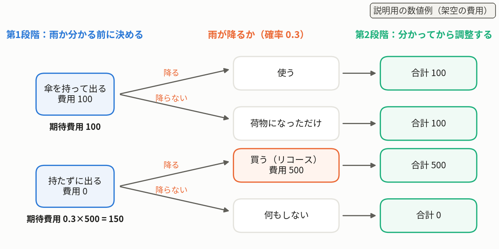
図4-1は、傘の問題を数値で描いたものである。雨の確率は 0.3 とする。傘を持って出ると、雨でも晴れでも 100 の手間がかかる。持たずに出て雨が降ると、傘を買うのに 500 かかる。
- 傘を持って出るときの期待費用は 100 である
- 持たずに出るときの期待費用は 0.3 × 500 = 150 である
だから、持って出る方がよい。これが、雨が分かる前に決める第1段階の決定である。雨が分かった後で傘を買うかどうかは第2段階の調整で、その費用を、この分野ではリコース（後からの手当て）の費用と呼ぶ（→付録A-18）。
数理最適化は、1950年代から、この形の問題を「二段階確率計画」として扱ってきた（Dantzig 1955、Birge & Louveaux 1997）。工場の設備（先に決める）と日々の運用（後で調整する）、在庫の発注（先に決める）と追加の発注（後で調整する）などである。この分野は、情報の価値を二つの量で測る。
- 完全情報の期待値（EVPI）：不確かさを前もって知れたら、どれだけ得をするか。傘の例では、天気が前もって完全に分かれば、雨の日だけ傘を持てばよく、期待費用は 0.3 × 100 = 30 になる。今の 100 との差、70 が EVPI である
- 確率的な解の価値（VSS）：不確かさを無視して、平均の値で決めたらどれだけ損をするか。降る日は 10 ミリ降り、降らない日は 0 ミリとすると、平均の降水量は 3 ミリである。3 ミリ程度の小雨なら傘なしで我慢できるとすると、「平均の天気」だけを見て決める人は、傘を持たずに出る。その期待費用は、実際には 150 になる。不確かさを考えて決めた 100 との差、50 が VSS である
生物の言葉に直すと、第1段階の決定は生まれつきの答え（初期値 w₀）、第2段階の調整は学習、リコースの費用は学習の費用に当たる▲構造。EVPI は「生まれる前に環境が分かれば、どれだけ得か」の上限で、その世代の環境（第1章の u）を生まれる前に知ることはできないから、学習に価値が生まれる。VSS は「環境のばらつきを無視して、平均の環境に合わせた答えを書き込んだときの損」に当たる。
ただし、生物の学習とずれる点もある。基本の二段階計画では、不確かさは第2段階の初めに一度に明らかになる。生物の学習では、観察を重ねて少しずつ分かり、その観察自体に時間や損がかかる。この場合は、段階を多くした確率計画や、決定が情報の得られ方を変える「内生的な不確かさ」の枠組みが要る（Goel & Grossmann 2006）。
4.3 双対制御：探ることと、うまく動かすこと
借りたばかりのレンタカーで、ブレーキの効き具合が分からないとしよう。慎重な運転手は、人のいない場所で一度ブレーキを強めに踏んでみる。効き具合を知るためである。その一回は、目的地に向かうという点では無駄な動きで、乗り心地も悪い。しかし、その後の運転は安全になる。
1960年代の初め、ソ連の制御工学者アレクサンドル・フェルドバウムは、未知の系を制御するとき、制御の入力が二つの役割を同時に負うことを示した（Feldbaum 1960–61）。目標に近づける役割と、系の性質を探る（揺さぶる）役割である。これを双対制御と呼ぶ。探るために入力を揺らせば、その間の成績は下がる。逆に、今の推定を真の値とみなして制御する「確実性等価」の制御は、探ることの価値を無視する。バー・シャロームとツェは、探ることが後の推定を良くする効果（双対効果）を整理し、確実性等価が最適になる条件を示した（Bar-Shalom & Tse 1974）。
第3章のカルマンフィルタは、「行動が、得られる情報に影響しない」ことを前提にしていた。双対制御は、この前提を外したものである。行動が情報の得られ方を変えるなら、最適な行動は、今の成績と、将来の情報の両方を考えて選ばなければならない。
機械学習の強化学習でいう「探索と活用」、統計学でいう多腕バンディット問題（当たりの確率が分からないスロットマシンが何台もあり、どれを引くかを選び続ける問題）も、同じ型の問題である▲構造。多腕バンディットでは、ギッティンズが、ある条件の下で最適な方針を一つの指数で表せることを示した（Gittins 1979）。
第5章で見る行動生態学の「確かめる間の機会費用」は、制御工学では、この探りの費用に当たる▲構造。ただし、ずれる点もある。双対制御の費用は、探るために行動を揺らす費用である。第8章で見る機械学習の「学習そのものが、すでに持っている正しい答えを壊す」費用は、これとは別の種類である。この区別は、第10章の主題になる。
4.4 リアルオプション：決めるのを待つ価値
家を買うか、もう少し借りて様子を見るか。家を買うのは、取り消しにくい決定である。数年のうちに別の街に移る可能性があるなら、今すぐ買うより、借りて様子を見る方がよいかもしれない。一方で、待っている間にも家賃は出ていく。
経済学は、こうした「取り消せない決定を、不確かさが残るうちに下すかどうか」を、金融のオプション（ある価格で買う権利）になぞらえて扱ってきた（Dixit & Pindyck 1994）。将来が不確かで、決定が取り消せないなら、「状況を見てから決める権利を持っておく」ことには、負でない価値がある。これを待つことのオプション価値と呼ぶ。今すぐ決める方が良いかどうかは、この価値と、待つことの費用との比較で決まる。待つ間は、決めていれば得られたはずの収益を失い、権利を保つにも費用がかかる。
生物の言葉に直すと、次のようになる。
- 可塑性を残しておくことは、権利を持っておくことに当たる
- 臨界期が閉じて表現型（生物の目に見える形や性質）が固まることは、権利を行使することに当たる（→付録A-12）
- 可塑性を保つ費用（第6章の防御を保つ費用、第5章の学習の費用）は、権利を保つ費用に当たる
- 待つ間の損は、確かめる間の機会費用に当たる
ただし、この対応は構造の上でのもので、同じ式ではない▲構造。可塑性を保つ費用と権利を保つ費用の対応は、さらに緩い○類比。リアルオプションの標準的な定式は、価値が金銭で測られ、行使は一度きりの判断である。生物の可塑性は、多くの部分が少しずつ固まり、成績は増殖率で測られることが多い。
第5章への橋渡し。 情報そのものはタダでも、集める時間はタダではない。待つ間は、決めていれば得られたはずの成績を失う。だから、一生が短いとき、あるいは答えがほとんど変わらないときは、待たずに決め打ちした方が、一生を通した成績が良くなりうる。次の章で見る行動生態学の模型は、まさにこの「確かめる間の損」を数えて、学習が進化する条件を求めた。第10章では、これを遅れの費用と呼ぶ。
数式で見る 二段階確率計画
第1段階の決定を x、不確かさを ξ、第2段階の調整を y とすると、二段階確率計画は次のように書ける。
γx は第1段階の費用、𝓡(x, ξ) は、ξ が分かった後に最も安く手当てしたときの費用（リコースの費用）である。この節の記号は、この節の中だけで使う。
二つの情報の価値は、次のように定義される。
傘の例では、確率的な解の費用が 100、先に天気を知れた場合の費用が 30、平均の天気で決めた場合の費用が 150 なので、EVPI = 70、VSS = 50 である。どちらも、定義から負にならない。
EVPI は、「知らないことの値段」である。この量には、第10章で、損失の会計の一つの層として、もう一度出会う。
隣の分野から見ると
生物学の読者へ。 二段階確率計画とリアルオプションは、「生まれつき決めること」の価値と「可塑性を残すこと」の価値を、それぞれ情報の価値（EVPI と VSS）と待つことの価値として、同じ単位で比べる言葉を持っている。可塑性の費用と便益を見積もるときに、この言葉は、何と何を比べればよいかをはっきりさせる。双対制御は、「確かめるための行動」に価値があることと、その価値がいつ消えるか（確実性等価が最適になる条件）を、式で示している。
機械学習の読者へ。 強化学習の探索と活用は、制御工学の双対制御、統計学の多腕バンディットと同じ型の問題である。一方、二段階確率計画の「先に決める部分と後で調整する部分」は、事前学習で固める部分と、微調整で動かす部分の分け方と、発想が近い○類比。どこまでを先に決めるかを、情報の価値で測るという見方は、メタ学習の設計にも使える。
思考実験。 生物の発生を、二段階確率計画として解いてみるとどうなるか。第1段階はゲノム、第2段階は一生の学習である。EVPI は「ゲノムに、その世代の環境の予報を書き込めたら得られた価値」、VSS は「平均の環境に合わせた答えだけを書き込んだときの損」になる。ゲノムに書ける量が限られる（第9章）なら、どの部分の VSS が大きいかで、何を書くべきかの優先順位が決まるはずである。
この章のまとめ
- 傘の問題は「先に決めるか、分かってから調整するか」の最小の例で、数理最適化はその価値を EVPI と VSS で測る
- 行動が情報の得られ方を変えるなら、探ることと、うまく動かすことが取り合いになる（双対制御）
- 取り消せない決定には、待つことの価値がある。臨界期が閉じることは、権利の行使と読める（リアルオプション）
第3部 生き物の答え
第5章 学習はいつ進化するか ―― 行動生態学の答え
5.1 色を覚えるハエ、匂いを覚えるハエ
動物には、覚えやすい関連と、覚えにくい関連がある。ネズミは、ある味の後に気分が悪くなると、その味をすぐに避けるようになるが、光や音と気分の悪さの関連は覚えにくい（Garcia & Koelling 1966）。このように、ある関連は学びやすく、別の関連は学びにくいことを、「準備された学習」と呼ぶ。
なぜ、ある関連だけが学びやすいのか。行動生態学者のアーロン・ダンラップとデヴィッド・スティーブンスは、これをショウジョウバエの実験進化で調べた（Dunlap & Stephens 2014）。ハエの集団を、40世代にわたって四つの「世界」で育てた。ある世界では、苦い物質（キニーネ）がついた産卵の場所を、色が確かに知らせた。別の世界では、匂いが確かに知らせた。両方が確かな世界と、どちらも当てにならない世界もあった。
40世代の後、ハエは、祖先の世界で当てになった感覚について、学習が強くなっていた。匂いが当てになった世界の系統は匂いで学びやすく、色が当てになった世界の系統は色で学びやすくなった（ただし、色の効果は、匂いも確かな世界では弱まるように見え、統計的には決着しなかった点もある）。この実験では、どの感覚を学びやすくするかは、祖先の環境で、その感覚がどれだけ当てになったかで決まった。 これは、第1章で挙げた「経験の信頼性」が、部分ごと（ここでは感覚ごと）の可塑性を決めることの、実験による例である。
この章では、行動生態学が「学ぶか、生まれつきの行動で済ませるか」を、進化の問題としてどう解いてきたかを見る。
5.2 二つの持続性（Stephens 1991）
出発点は、1991年のスティーブンスの模型である（Stephens 1991）。
模型の1世代は2期からなる。学ぶ型の個体は、1期目に資源を確かめ、2期目にその結果で行動を決めて固定する。学ばない型の個体は、生まれたときから片方の資源に固定している。環境は二つの「持続性」で表す。今日の状態が明日も続く確率（一生の中の持続性）と、親の世代の状態が子の世代も続く確率（世代の間の持続性）である。
結論は、次のようにまとめられる。
- 何らかの変化がある限り、世代の間の持続性は、学習の有利さに影響しない。学習が有利になるかは、一生の中の持続性で決まる（どこから有利になるかは、資源の価値と学習の費用にもよる）
- 変化は、一生の中にあっても、世代の間にあってもよい。必要なのは、確かめた結果が、一生の残りで役に立つこと、つまり一生の中に規則性があることである
- 環境が完全に一定な場合の近くでは、学習はふつう進化しない
- 学ぶ型は、1期目に必ず確かめるので、その分の損を払う。これを確かめることの機会費用と呼ぶ（→付録A-17）
第1章の言葉でいえば、c（変わらない成分）は生まれつきで、u と v は学習で扱うのがよい、という結論である。そして機会費用は、第3章のカルマンフィルタの前提を外したときに生じる「観察の費用」の、最も単純な形である。第4章の言葉でいえば、双対制御の探りの費用、リアルオプションの待つ間の損に当たる▲構造。
5.3 固定性と信頼性（Dunlap & Stephens 2009）
2009年、ダンラップとスティーブンスは、環境の変化を別の二つの量に分けた（Dunlap & Stephens 2009）。原論文では二つを p と q と書くが、この本では、第3章の q（目標の動きの分散）と区別するために、次のように書く。
- 最良の行動の固定性 p_fix：どの行動が最良かが、世代を越えてどれだけ同じか
- 経験の信頼性 p_cue：経験が最良の行動をどれだけ正しく示すか
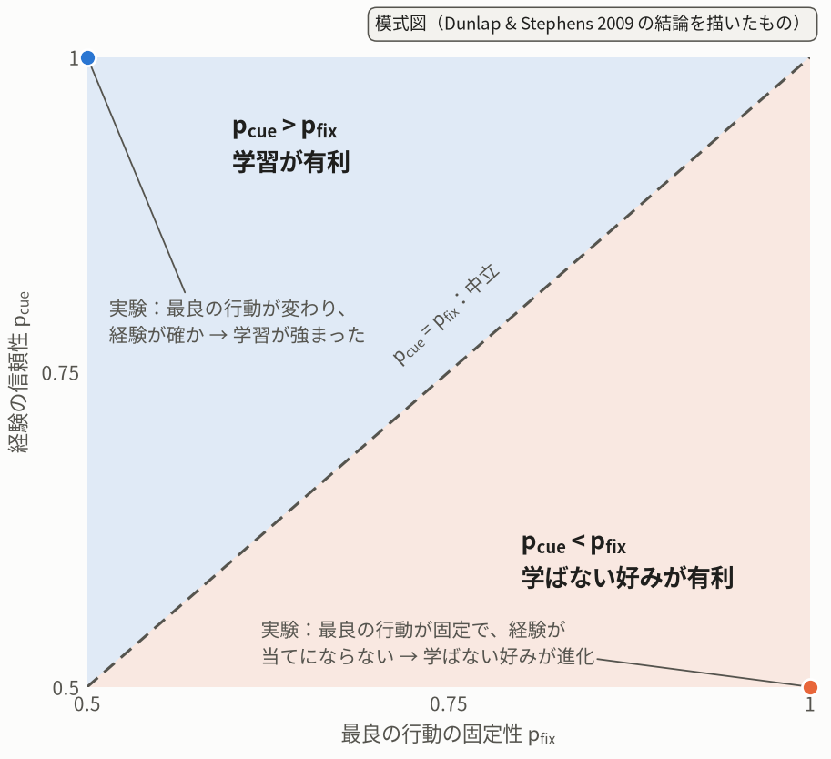
模型の結論は、図5-1のように単純である。経験の信頼性が最良の行動の固定性を上回る（p_cue > p_fix）なら学習が有利、下回る（p_cue < p_fix）なら学ばない好みが有利、等しければ中立である。
この結論には、意外な点が二つある。一つは、中立の線 p_cue = p_fix の上に、「完全に一定な世界」（p_fix = p_cue = 1）と「完全にランダムな世界」（p_fix = p_cue = 1/2）の両方が乗っていることである。スティーブンスの1991年の模型で、完全に一定な世界で学ばない型が有利になったのは、学習に機会費用を課したからで、費用がなければ中立になる。もう一つは、学習を不利にするのは「固定」だけではないことである。最良の行動が固定されていることは学習を不利にするが、経験と最良の行動の関係が固定されている（経験が当てになる）ことは、学習を有利にする。
二人はこれを、ショウジョウバエの30世代の選抜実験で確かめた。図5-1の二つの角に当たる処理を作った。最良の行動が世代ごとに変わり、経験が確かな処理（左上）では、学習が強まった。最良の行動が固定で、経験が当てにならない処理（右下）では、学ばない好みが、割り当てられた最良の行動の方向へ進化した。著者たちは、学習を不利にする最も強い要因は、固定ではなく、ランダムさ（経験が当てにならないこと）であると結論した。
2014年の研究（5.1節）は、この考えを、二つの感覚の信頼性の違いに広げたものである。部分ごとの可塑性の配分を、世代の間の規則性に合わせて進化が決めることを、実験で示した。
5.4 学習の形そのものの進化
ここまでの模型は、「学ぶか、学ばないか」の二択を比べた。学習の形そのものが、どう進化するかを調べた研究もある。
デジタル進化で、連合学習を一から進化させる（Pontes ら 2020）。 アヴィダ（Avida）と呼ばれるデジタル進化の装置では、命令の列をゲノムとして持つ小さなプログラムが、自己複製し、突然変異し、選択される。ポンテスらは、この装置で、学習しない祖先から連合学習を進化させた。課題は、格子の上の道をたどることである。道の上には「前へ」「右へ」「左へ」を示す手がかりがある。「前へ」の手がかりは世代を越えて同じだが、どちらの手がかりが「右へ」を意味するかは、個体ごとにランダムに決まり、その個体の一生の中でだけ続く。
結果は、第1章の三つの成分の区別を、学習の形の進化としてそのまま示した。世代を越えて安定な規則性には、反射的な行動が進化した。世代ごとに変わり一生の中で続く規則性には、学習が進化した。一度だけ関連づける刷り込みは、一生の中で手がかりが変わらない世界でも進化した。何度でも関連づけ直す学び直しは、一生の中で手がかりを入れ替える選抜をかけたときだけ進化した。
確かめる間の誤り（Katsnelson ら 2012）。 カツネルソンらは、学習の過程を明示的に模型にし、安定な環境では、確かめる間の誤りのために、学習が生まれつきの戦略に勝てないことを示した。
学習の期間そのものを進化させる（Kozielska & Weissing 2024）。 コジェルスカとワイシングは、小さなニューラルネットワークの初期の重み、学習率、そして学習期間の長さを、同時に進化させた。寿命が短いと学習は進化しにくく、学習期間は短く、学習率は高くなった（学習期間が寿命に占める割合は、かえって大きかった）。学習が進化した後は、学習期間と学習率は、環境の変化の頻度と大きさに、ほとんど依存しなかった。第2章の式に最も近い進化の模型の一つである。
5.5 学習が進化を導く：ボールドウィン効果
逆向きの問いもある。学習は、進化そのものを助けるか。19世紀の終わり、心理学者のジェームズ・マーク・ボールドウィンは、個体が一生の中で学ぶことが、進化の向きを導きうると論じた。しかし、この考えは、獲得した形質が子に遺伝するという説（ラマルク説）と紛らわしく、何がどう効くのかがはっきりしないまま、長くあまり顧みられなかった。
1987年、ジェフリー・ヒントンとスティーブン・ナウランは、簡単な計算機の実験でこれを示した（Hinton & Nowlan 1987）。20個の「スイッチ」（神経の結合）がすべて正しい位置にそろったときだけ適応度が上がる、という針のように鋭い適応度の山を考える。各スイッチを「生まれつき 0」「生まれつき 1」「学習で決める」のどれかにする遺伝子型（遺伝子の組み合わせ）を進化させた。学習がないと、全部のスイッチがそろう個体はほとんど現れず、二人の実験では、学習なしの進化ではこの問題は一度も解けなかった。学習があると、一部のスイッチが正しい個体は、残りを学習で当てる可能性があるので、少しだけ有利になる。こうして学習が適応度の山を滑らかにし、進化が正しい答えに届いた。その後、学習に任されていたスイッチの多くが、生まれつきの正しい値に置き換わっていった。ただし、最後の数個は、学習で十分に当てられるので、生まれつきに置き換える選択の圧力がほとんどかからず、学習に任されたまま残りやすい。
学習が進化の道を開き、その後に、学んだ答えが生まれつきに置き換わっていく。この現象は、ボールドウィンの名をとってボールドウィン効果と呼ばれる。発生生物学者ウォディントンの遺伝的同化（はじめは環境に応じて獲得された形質が、世代を経て生まれつきになること）とも近い考えである。第1章の言葉でいえば、u の一部が c として初期値に書き込まれていくことに当たる○類比。
5.6 他者から学ぶ：社会学習と文化
ここまでの学習は、どれも、個体が自分の経験から学ぶものだった。しかし、多くの動物は、他者を見て学ぶ。ヒトは、その極端な例である。毒のあるキノコを自分で食べて確かめれば、確かめる間の損どころか、命を失いかねない（第6章の題でいえば、一度の失敗が命取りになる世界である）。親や仲間から「あれは毒だ」と教われば、その損を払わずに済む。他者を見て、あるいは教わって学ぶことを、社会学習と呼ぶ（→付録A-32）。
第1章1.5節の言葉でいえば、社会学習は、前の世代や周りの個体が学んだ答えを、自分の初期値として取り込むことである。その価値は、他者の答えが、今の自分の世界でもどれだけ正しいか、つまり世代の間の相関 ρ で決まる。ρ が高ければ、まねるだけで、確かめる間の遅れをほとんど払わずに済む。ρ が低ければ、まねた答えは、すでに古くなっている。
人類学者のアラン・ロジャーズは、この取り合いを簡単な模型にした（Rogers 1988）。環境はときどき変わる。自分で学ぶ個体は、費用を払って、今の環境に合った答えを得る。まねる個体は、費用を払わずに、前の世代のだれかの答えを写す。まねる個体が少ないうちは、写す相手の多くが自分で学んだ個体なので、まねる方が得である。しかし、まねる個体が増えると、古い答えを写した個体を、さらに写すことが増える。環境が変わった後の新しい答えは、自分で学ぶ個体からしか入ってこない。結局、二つの型が釣り合ったところでは、集団の平均の成績は、全員が自分で学ぶ集団と変わらなかった。他者から学べるのに、集団としては得をしない。これはロジャーズのパラドックスと呼ばれる。
パラドックスを解く鍵の一つは、学び方を組み合わせることである。エンキストらは、まず他者をまね、その答えがうまくいかないときだけ自分で学ぶ、という戦略を模型に加えた（Enquist, Eriksson & Ghirlanda 2007）。この戦略は、まねるだけの戦略にいつも勝ち、多くの条件で、自分で学ぶだけの戦略にも勝った。他者の答えを初期値として受け取り、自分の経験でそれを確かめ直す。第2章の言葉でいえば、初期値 w₀ を社会から受け取り、可塑性 H は残しておく、という配分である▲構造。
ヒトの文化は、さらに先に進んでいる。他者から学ぶ答えが、世代を越えて少しずつ改良され、積み重なっていく（累積的な文化。Henrich 2015）。ボイドとリチャーソンは、遺伝子と文化という二つの経路で情報が受け渡され、二つが互いに影響し合いながら進化する様子を、数理模型で調べた（Boyd & Richerson 1985。二重継承理論と呼ばれる）。さらに、生き物は、自分が暮らす環境そのものを作り変える（ニッチ構築。Odling-Smee, Laland & Feldman 2003）。ヒトが道具や制度や学校を作るとき、それは次の世代が育つ環境を前もって整え、世代の間の相関 ρ を自分で高めることに当たる○類比。このとき、第2章の式で外から与えた世界 P_E は、学ぶ者自身の行動によって変わる。世界が学び手の外にあるという本書の前提は、ここで成り立たなくなる。この帰還を式の中でどう扱うかは、本書では解かない。
こうして見ると、「生まれ」と「育ち」の間には、第三の経路がある。ゲノムでも、自分一人の経験でもない、他者と文化を通じた受け渡しである。それはゲノムより速く変わり、一人の一生より多くの経験を積み上げられる。ただし、その価値は、写す答えが今の世界にどれだけ合っているか（ρ）と、写した答えを確かめ直す仕組みがあるかで決まる。ヒトの長い子ども時代を、この経路から読む見方には、第11章11.4で触れる。
第10章への伏線。 この章の模型が数えた学習の費用は、どれも「確かめる間の損」、つまり遅れである。学習が、すでに持っている正しい答えを壊す、という費用は出てこない。多くの模型で、学ぶ部分が一つか少数で、部分どうしが何も共有していないからである。部分が多く、互いに結合を共有する脳のような系では、話が変わる。それを第8章で見る。
数式で見る p_cue > p_fix を簡単な勘定で確かめる
ダンラップとスティーブンスの模型は、世代の間の幾何平均の適応度で比べている。ここでは、結論の核だけを簡単な勘定で確かめる。
二つの行動 A と B があり、世代ごとに、どちらか一方だけが「当たり」になるとする。A が当たりである確率を p_fix（≥ 1/2）とする。
- 学ばない型は、いつも A を選ぶ。当たる確率は p_fix である
- 学ぶ型は、経験に従って選ぶ。経験は、確率 p_cue（≥ 1/2）で当たりの行動を正しく示す。当たる確率は p_cue である
当たりの得点が同じなら、p_cue > p_fix のとき学ぶ型が、p_cue < p_fix のとき学ばない型が有利になる。p_fix = p_cue = 1（完全に一定）でも p_fix = p_cue = 1/2（完全にランダム）でも、両者は同じだけ当たる。学習に機会費用 k を課すと、学ぶ型の成績は k だけ下がるので、境界は p_cue = p_fix + k の方へ動き、完全に一定な世界では学ばない型が有利になる。これが、1991年の模型と2009年の模型の違いである。
▶ 多次元では。 自然選択にも「学習率」があるとすれば、それは何だろうか（→発展3）。
隣の分野から見ると
機械学習の読者へ。 スティーブンスの「学習を有利にする規則性は、一生の中になければならない」は、メタ学習で「どのパラメータを内側の適応で動かすべきか」を決める基準として読める。ダンラップとスティーブンスの結論は、経験の信頼性 p_cue が答えの固定性 p_fix を下回るなら、その部分は学ばせない方がよい、という判断の基準を与える。機械学習では、ラベルの雑音は「雑音に強い学習」の問題として扱われることが多いが、ここでは「学習するかどうか」そのものを決める変数である。準備された学習の実験進化は、パラメータごとの学習率を課題の分布に合わせて学ぶこと（第8章の Meta-SGD）と、発想が近い○類比。ただし、探し方（自然選択か勾配法か）も、何を「部分」と呼ぶか（感覚か重みか）も違う。他者から学ぶこと（5.6節）は、機械学習の模倣学習や、大きなモデルの答えを小さなモデルに写す知識の蒸留と、発想が近い○類比。
学習の仕組みを持つこと自体の費用。 この章の模型が数えたのは、確かめる間の損だった。ショウジョウバエでは、それとは別に、学習の仕組みを持ち、使うこと自体の費用も測られている。長期の記憶（作るのにタンパク質の合成が要る記憶）を作らせたハエは、乾燥への耐性が下がった（Mery & Kawecki 2005）。学習の成績で選抜した系統は、選抜しない系統より寿命が約15%短く、逆に長生きで選抜した系統は、若いときの学習の成績が劣った（Burger ら 2008）。これは、付録A-21の「可塑性を保つ費用」の、生物での測定例に当たる。機械学習では、学習率を高く保つこと自体には、ふつう費用をかけない（終章の問い6）。
思考実験。 メタ学習の課題の分布を作るとき、入力のある部分のラベルは当てになり、別の部分は当てにならない、という課題を混ぜたら、学ばれる学習率はどうなるだろうか。ダンラップとスティーブンスの答えが正しければ、経験の信頼性が答えの固定性を下回る部分の学習率は、低くなるはずである。答えが世代ごとに変わる部分でも、経験が当てにならなければ、学ぶ価値は小さい。
記号について。 経験の信頼性 p_cue は、第3章の言葉では観測の雑音 r の側に当たる。r が小さいほど、p_cue は 1 に近い。
この章のまとめ
- 学習が有利になるのは、確かめた結果が一生の残りで役に立つとき、つまり一生の中に規則性があるときである。確かめる間には機会費用がかかる
- 経験の信頼性が最良の行動の固定性を上回れば学習が有利で、学習を最も不利にするのはランダムさである
- どの感覚を学びやすくするかは、祖先の環境での信頼性に合わせて進化しうる。ショウジョウバエの実験進化がそれを示した
- 他者から学ぶことは、確かめる間の遅れを省くが、その価値は世代の間の相関で決まる。まねて、確かめ直す学び方が有利になる
第6章 一度の失敗が命取りになる世界 ―― 増殖率、両賭け、免疫
6.1 雨が降っても、全部は芽を出さない種
砂漠に生える一年草は、雨が降ると芽を出し、短い期間に花を咲かせて種を作る。ところが、雨が降っても、土の中の種の全部が芽を出すわけではない。一部は眠ったまま土の中に残る。
芽を出した方が、すぐに種を増やせるはずである。なぜ、眠ったままの種を残すのか。1966年、ダン・コーエンは、この問いに数理模型で答えた（Cohen 1966）。模型では、毎年、土の中の種のうち一定の割合が芽を出し、残りは土の中で一年を越す（その間に一部は死ぬ）。年の良し悪しで、芽を出した種が残す種の数が変わる。そのうえで、系統の長期の増殖率を最大にする芽生えの割合を求めた（Brown & Venable 1986 の解説による）。年によっては、芽を出した後に雨が続かず、芽生えが全滅することがある。全部の種が芽を出していたら、その一年で系統が終わる。一部を眠らせておけば、悪い年にも系統は生き残る。眠る種は、短期の成功を少し犠牲にして、長期の全滅の危険を減らしている。
この考えは、のちの研究で野外のデータでも確かめられている。グレマーとヴェナブルは、ソノラ砂漠の一年草の長期のデータを使い、調べた12種のすべてで、発芽を遅らせることが「両賭け」の基準を満たすと結論した（Gremer & Venable 2014）。
この章では、成績を平均ではなく増殖率で測ると、何が変わるかを見る。第2章の式の、Φ のつまみを回す章である。
6.2 平均で測るか、増殖率で測るか
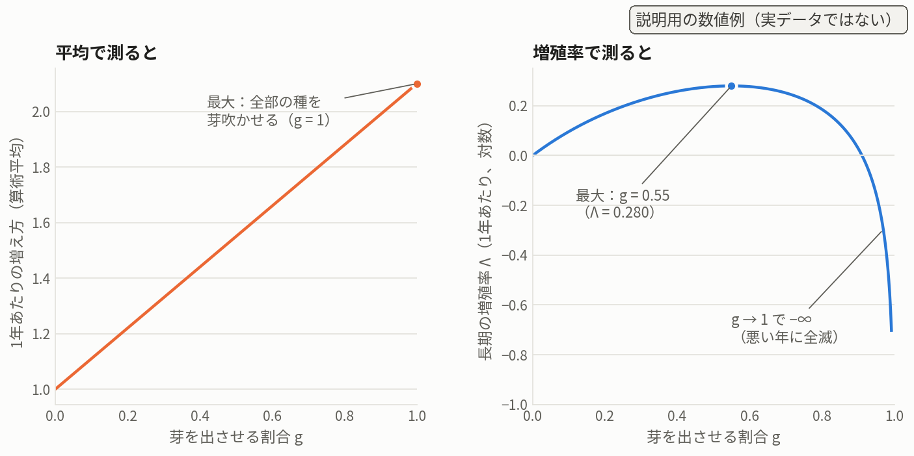
図6-1は、コーエンの模型をさらに単純にした数値例である。毎年、確率 0.7 で良い年、0.3 で悪い年になる。芽を出した種は、良い年には 3 倍の種を残し、悪い年には全滅する。眠った種は、そのまま翌年に残る（簡単のため、土の中で死ぬことは考えない）。芽を出させる割合を g とする。
平均で測ると（図6-1の左）。 1年あたりの増え方の平均は、g を大きくするほど増える。最大は g = 1、つまり全部の種を芽吹かせることである。平均で 2.1 倍に増える。
増殖率で測ると（図6-1の右）。 系統の数は、年ごとの倍率を掛け合わせて決まる。掛け算の長期の伸びは、倍率の対数の平均で測る。これを長期の増殖率 Λ と呼ぶ。g = 1 では、悪い年に倍率が 0 になり、対数は −∞ になる。どれだけ良い年が続いても、一度の悪い年で全滅する。最大は g = 0.55 で、半分ほどの種を眠らせておくのが最良になる。
なぜ平均ではいけないのか。二つの世界を比べるとよい。一つは、百の系統が、それぞれ一年だけ賭けをする世界である。このとき意味を持つのは、百の系統の結果を横に並べた平均で、それは算術平均に近づく。もう一つは、一つの系統が、百年続けて賭けをする世界である。このとき意味を持つのは、一つの系統を縦にたどった伸び、つまり増殖率である。種の系統は、後者の世界に生きている。全部を芽吹かせる系統は、横に並べた平均では最も得をするが、縦にたどれば、いつか来る悪い年に必ず終わる。横に並べた平均（集団の平均）と、縦にたどった平均（時間の平均）が一致しないこの性質を、物理学や確率過程の言葉で非エルゴード性と呼ぶ。
成績の集め方を変えるだけで、最適な戦略の形が変わる。 平均で測れば「全部を最も得な選択に賭ける」のが最適で、増殖率で測れば「賭け金を分ける」のが最適になる。個体の間で答えをばらつかせて、悪い年の全滅を避ける戦略を、両賭け（bet-hedging）と呼ぶ（→付録A-22）。
両賭けには二つの型がある。個体ごとに違う表現型をとらせる多様化型（種の一部を眠らせるのはこちら）と、どの環境でもそこそこの、無難な表現型を全員がとる保守型である。
6.3 ケリーの賭け：手がかりの価値は相互情報量
増殖率で測る考えは、生物学より先に、通信の理論で現れた。1956年、ベル研究所のジョン・ケリーは、雑音のある通信路で、レースの結果を一般より先に知らされる賭け手を考えた（Kelly 1956）。資金の長期の伸びを最大にするのは、受け取った情報の下での確率に比例して賭けることで、そのときの伸びの速さの最大値は、通信路の情報の伝送速度にちょうど等しくなる。
最も単純な場合を、生物の言葉で書こう。毎世代、環境 e が確率 P(e) で独立に現れる。表現型が環境に合った個体だけが f_e 倍に増え、合わない個体は子を残さない。系統が、子の割合 π(φ) で表現型 φ を分けるとき、長期の増殖率を最大にする分け方は、環境の確率どおりに分けること（π = P）である。平均で測るなら、全員を最も得な表現型に賭けるのが最適だった。それとは、はっきり違う。
さらに、この場合、環境を事前に知らせる手がかり C があると、増殖率は、手がかりと環境の相互情報量 I(E; C) だけ、ちょうど上がる。相互情報量は、手がかりを見ることで、環境についての不確かさがどれだけ減るかを測る量である。情報の価値が、増殖率の単位で、情報量そのものになる。 これは、ケリーの賭けの結果を、生物の言葉に置き換えたものである■式。 これは、生物にとっての「情報の価値」を考えるときの出発点になった。ドナルドソン＝マタシらは、この対応を発達の手がかりに広げ、多くの場合に、手がかりの適応度の上の価値が、相互情報量にちょうど等しくなることを示した（Donaldson-Matasci, Bergstrom & Lachmann 2010）。ただし、いつも等しいわけではなく、両者がずれる場合もある。
6.4 感知するか、確率的に切り替えるか
細菌の中には、環境を感知しなくても、一定の確率で表現型を切り替えるものがある。例えば、抗生物質に強いが増えるのが遅い「休眠」状態に、一部の細胞が確率的に入る（持続菌と呼ばれる。Balaban ら 2004）。
キュッセルとライブラーは、環境を感知して切り替える戦略と、感知せずに確率的に切り替える戦略を、増殖率で比べた（Kussell & Leibler 2005）。感知に費用がかかり、環境がまれにしか変わらないときは、確率的な切り替えが有利になる。そのとき、最適な切り替えの速さは、環境が切り替わる速さに合わせられる。
第2章の言葉でいえば、感知は「一生の中で観察して決める」こと、確率的な切り替えは「観察せずに、変化の速さだけをゲノムに書く」ことに当たる。後者は、第3章で学習率を目標の動きの速さに合わせることと、形が似ている○類比。
リヴォワールとライブラーは、環境の変化、集団で共有する手がかり、個体ごとの知覚の雑音、親からの継承を一つの模型に入れ、増殖率の上で情報の価値を測る枠組みを作った（Rivoire & Leibler 2011）。「書く」（継承）、「感知する」（手がかり）、「ばらつかせる」（確率的な戦略）を、同じ尺度で比べられる。ただし、この枠組みは、一生の中で複数の時刻にわたって学ぶことや、個体の中の複数の部分の干渉は扱っていない。
6.5 免疫：生まれつきと学習の配分が最もはっきり見える場所
免疫は、生まれつきと学習の配分が、最もはっきり現れる場所である。自然免疫は、病原体に共通する特徴に、生まれつき備えている。獲得免疫は、感染してから、その病原体に合った防御を学ぶ。細菌の CRISPR は、侵入したウイルスの断片をゲノムに書き込み、子孫に伝える。
マイヤーらは、病原体の統計（現れる頻度と、変化の時間の尺度）と、防御を保つ費用から（→付録A-21）、どの免疫の戦略が増殖率を最大にするかを導いた（Mayer, Mora, Rivoire & Walczak 2016）。
| 免疫の主な戦略 | 第1・2章の言葉での当てはめ |
|---|---|
| 常に構える（自然免疫的） | c を初期値に書く |
| 感染してから獲得する（獲得免疫的） | u を一生の中で学ぶ |
| 確率的に構えを切り替える | 個体の間でばらつかせる（両賭け） |
| 獲得したものを子に伝える（CRISPR 型） | 一生で学んだ u を、次の世代の初期値に書き込む（u に世代を越えた相関があるときに有効） |
病原体の統計に応じて最適な戦略が分かれる、という結論は、第1章の c・u・v の分け方に、「防御を保つ費用」という変数を加えて解いたものと読める▲構造。原論文は、病原体が現れる頻度と、その変化の時間の尺度の二つが、最適な免疫の戦略を決める主な要因であることを示し、どの戦略がどの条件で有利になるかを、一枚の図（相図）にまとめている。
数式で見る 増殖率と、ケリーの賭け
図6-1の数値例。 芽を出させる割合を g とすると、1年の倍率は、良い年に (1 − g) + 3g = 1 + 2g、悪い年に 1 − g である。
Λ を g で微分して 0 とおくと、1.4/(1 + 2g) = 0.3/(1 − g) から g = 0.55 が得られる。このとき Λ ≈ 0.280 で、1年あたり平均して e^0.280 ≈ 1.32 倍に増える。
ばらつきは、そのまま罰になる。 倍率 W の揺らぎが小さいとき、対数を平均のまわりで二次まで展開すると、次の近似が得られる。
平均が同じなら、ばらつきの小さい戦略ほど増殖率が高い。どの環境でもそこそこの表現型をとる保守型の両賭けは、この第2項を小さくする戦略である。ただし、この近似は揺らぎが小さいときのもので、倍率が 0 になりうる図6-1の g = 1 の場合には使えない。
ケリーの賭け。 環境 e が確率 P(e) で現れ、表現型 φ = e の個体だけが f_e 倍に増えるとき、増殖率は次のようになる。
𝓗(E) = −Σ P(e) log P(e) は環境のエントロピー（不確かさの大きさ）である。手がかり C を見てから分け方を決められるなら、π(e) を条件つき確率 P(e | c) にすればよく、増殖率の上がり幅は次のようになる。
導出は付録Bにまとめた。
▶ 多次元では。 二つの賭けに分けると、片方に全部賭けるより増殖率が上がることがある。それはどんなときだろうか（→発展6）。
隣の分野から見ると
機械学習・工学の読者へ。 機械学習の損失の多くは期待値（算術平均）である。しかし、子孫を残す系の成績は増殖率で、一度の 0 が系統の全体を 0 にする。この違いだけで、最適な戦略は「全員が最も得な答えに賭ける」から「確率どおりにばらつかせる」に変わる。失敗の重さが均一でない応用（安全性が重要な制御や医療など）では、損失の集め方そのものの選択が、設計の一部になる。その選択について、生物学は具体的な先例を持っている。両賭け、手がかりの価値が相互情報量になること、免疫の戦略の使い分けである。では、報酬の対数をとれば、増殖率の最大化は、ふつうの強化学習（報酬の和の最大化）に帰着するのだろうか。半分は帰着する。一つの系統が増殖率 E[log W] を最大にすることは、報酬を log W とした和の最大化そのもので、ケリーの賭けは対数の効用の最大化である■式。倍率 0 は、−∞ の罰を持つ、抜け出せない状態に当たる。帰着しないのは、誰が主体かである。多様化型の両賭けでは、系統が「分け方」を選び、個々の個体はそれを確率的に実行する。個体ごとに自分の期待報酬を最大にする学習者は、この解を選ばない▲構造。機械学習の側には、ほかにも、リスクを考慮した強化学習や、損失の裾を重く見る指標（CVaR など）の研究がある。それらとの細かい関係は、この本では調べていない。なお、複数のモデルの答えを合わせるアンサンブルは、個体の間でばらつかせる両賭けと発想は近いが、目的が違う○類比。前者は平均の精度を上げるため、後者は全滅を避けるためである。
思考実験。 同じ課題に、少しずつ違う学び方のモデルを百個用意し、一度でも致命的な誤りをしたモデルはそこで退場させ、残ったモデルの数の伸びを成績にしたとしよう。これは、損失関数を増殖率に取り替えることに当たる。そのとき、メタ学習で選ばれる初期値と学習率は、平均の損失で選んだものより、慎重な（生まれつきの答えに頼る）ものになるだろうか。そして、百個のモデルの学び方を、わざとばらつかせる方が得になるだろうか。終章の問い2は、この問いである。
この章のまとめ
- 系統の成績は平均ではなく増殖率で決まり、一度の全滅は取り戻せない。そのため、答えを個体の間でばらつかせる両賭けが有利になりうる
- 最も単純な場合、最適な分け方は環境の確率どおりで、手がかりの価値は相互情報量になる（ケリーの賭け）
- 免疫の戦略の使い分けは、病原体の統計と防御の費用に応じた、生まれつきと学習の配分として読める
第7章 閉じる窓 ―― 感受期、臨界期、経験の前の自発活動
7.1 子ネコの片目
1960年代、デヴィッド・ヒューベルとトルステン・ウィーゼルは、子ネコの片目のまぶたを一定の期間だけ閉じて育てる実験を重ねた。閉じた目をのちに開けても、大脳の視覚野には、その目に反応する細胞がわずかしか残っていなかった。視覚野の細胞の多くは、開いていた方の目にだけ反応するようになった。
影響の大きさは、目を閉じた時期によって大きく違った。1970年の論文で、二人は、この影響を受けやすい期間を調べた（Hubel & Wiesel 1970）。のちの研究も合わせると、ネコの視覚野が片目の遮断に最も敏感なのは生後4週目ごろで、その後、敏感さはしだいに下がる（どの速さで下がるかについては、研究の間で意見が分かれている）。成長したネコでは、片目を長く閉じても、このような変化はほとんど起こらない。
経験によって変われる期間には、窓がある。序章のガンのひなの刷り込みも、窓が開いている間にだけ起こった。この章では、なぜ窓が閉じるのか、そしてそれが第3章の学習率の話とどうつながるのかを見る。
7.2 感受期と臨界期
言葉を整理しておこう。
- 感受期（→付録A-9）：経験が発達に与える影響が、ほかの時期より大きい期間。影響は小さくなるが、0 にはならない
- 臨界期：経験の影響が、その期間を過ぎると、ほぼ 0 になる期間
二つは混同されやすいが、第3章の言葉でいえば、感受期は「学習率が下がるが、0 にはならない」場合、臨界期は「学習率が 0 になる」場合に当たる。
7.3 窓は、確信が増えると閉じる
なぜ窓は閉じるのか。人類学者のカーシック・パンチャナタンと心理学者のウィレム・フランケンハウスは、発達の進化の模型で、一つの答えを示した（Panchanathan & Frankenhuis 2016）。
個体は、自分が生まれた環境がどんな環境かを、発達の中で手がかりを少しずつ集めて推定する。手がかりを一つ得るたびに、ベイズの規則で推定を改め、表現型を少しずつその環境向けに作り込んでいく。手がかりがたまるほど推定は確かになり、新しい手がかり一つで表現型を変える割合は下がっていく。感受期は、特別な仕組みを仮定しなくても、推定の確信が増えることから生じる。 この見方を整理した総説によれば、より一貫した経験を受ける個体ほど、不確かさが速く減り、可塑性も早く失われる（Frankenhuis & Walasek 2020）。
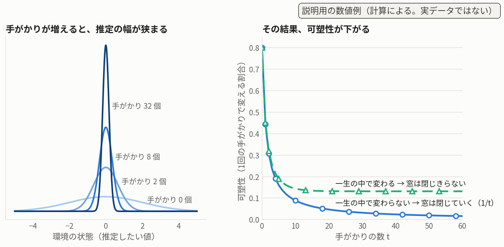
図7-1は、その仕組みを、第3章のカルマンフィルタで描いたものである。左は、手がかりが増えるにつれて、環境の推定の幅（不確かさ）が狭まっていく様子である。右は、その結果としての可塑性、つまり1回の手がかりで推定を変える割合である。環境が一生の中で変わらないなら（青）、可塑性は手がかりの数に反比例して下がり続ける。窓は閉じていく。第3章の「動かない目標では、カルマンの利得が 1/t で下がる」と同じ形である。パンチャナタンらの模型はカルマンフィルタそのものではなく、二つの環境のどちらにいるかをベイズの規則で推定する模型だが、「確信が増えるほど可塑性が下がる」という構造は同じである▲構造。
では、環境が一生の中で変わるなら、どうなるか。ワラセクらは、発達の途中でも環境が変わり、手がかりも不確かな模型で、最適な可塑性の時間変化を計算した（Walasek, Frankenhuis & Panchanathan 2022）。感受期は、発達の初めにも、途中にも、終わり近くにも現れうる。そして、発達の後半にも可塑性は少し残り、可塑性が 0 になる臨界期は、変動する環境では有利になりにくかった。図7-1の右の緑の線のように、窓は下がっても閉じきらない。これは、第3章の「動く目標では、学習率を下げきってはいけない」と同じ向きの結論である▲構造。
7.4 神経科学：窓を開け閉めする仕組み
模型が「なぜ閉じるか」に答えるのに対して、神経科学は「どうやって閉じるか」を調べてきた。
窓は、自動的に閉じるのではなく、開け閉めされる。 視覚野の臨界期は、時間がたてば自然に閉じるのではない。ヘンシュの総説によれば、臨界期は、抑制性の神経伝達物質 GABA を使う局所の回路が成熟することで始まる（Hensch 2005a）。そして、年齢とともに、抑制性の細胞のまわりを細胞外の網目（周ニューロン網）が包み、髄鞘に関わる成長を抑える因子が現れて、構造の変化が止まる（Hensch 2005b）。動物実験では、この網目を酵素で分解すると、成長した後でも、片目を閉じることで再び眼優位性の変化が起こるようになった。可塑性の時間の関数は、生物では、進化した回路の調節として実装されている。
このブレーキは、年齢だけで決まるのではない。生まれたときから暗い所で育てると、抑制の回路の成熟が遅れ、臨界期は大人になるまでずれ込む（Hensch 2005b）。窓を閉じる時刻は、経験の量にも反応しているのである。決まった時刻に閉じるのは、学習率を予定表どおりに下げることに近い。経験がたまってから閉じるのは、確信に応じて学習率を下げること（第3章のカルマンフィルタ）に近い○類比。7.3節の「より一貫した経験を受ける個体ほど、可塑性も早く失われる」は、後者の見方である。
学習率は、環境の変わりやすさで調節される。 神経科学者のティム・ベーレンスらは、人に、報酬の確率が切り替わる課題をさせた（Behrens ら 2007）。報酬の確率が頻繁に切り替わる時期には、人は学習率を上げ、安定な時期には下げた。環境の変わりやすさ（第3章の q）を推定するベイズ学習者の模型が、人の選択をよく説明した▲構造。ただし、この研究で扱った学習率は、環境全体で一つで、手がかりごとの配分は扱っていない。手がかりごとの不確かさが学習率を決めるという見方は、連合学習のカルマンフィルタ模型（Dayan, Kakade & Montague 2000、Gershman 2015）が、行動のデータで扱っている。
7.5 経験の前に、配線を整える
窓が開く前にも、大事な段階がある。
哺乳類の網膜は、目が開いて光を見る前から、自発的に活動している。隣り合う細胞が波のように連なって発火する「網膜波」（→付録A-24）は、その一例である。こうした自発活動は、目が開く前に、視覚の経路の地図（網膜の隣り合う場所が、脳の中でも隣り合う場所につながるような配置）を整えるのに役立つと考えられている。
この段階で使われる情報は、世界についての情報ではない。自分自身の配線についての情報である。どの細胞とどの細胞が隣り合っているか、という情報は、世界を見なくても、自分の活動の相関から読み取れる。活動の相関によって、近くの細胞が似た入力に反応するよう配線が整うという考えは、古くから数理模型にされている（Willshaw & von der Malsburg 1976）。
第2章の言葉でいえば、これは、初期値 w₀ より前の段階、つまり「学習が読み出す特徴」そのものを整える過程である○類比。経験から学ぶ前に、経験から学ぶための道具を整えている。この段階にどれだけの時間をかけるべきかは、第10章で考える。
7.6 窓が閉じるのは、権利の行使でもある
第4章のリアルオプションの言葉でいえば、可塑性を残しておくことは「状況を見てから決める権利」を持っておくことで、窓が閉じることは、その権利を行使して表現型を固めることに当たる。窓を開けたままにしておくのにも費用がかかる。可塑性の仕組みを保つ費用と、固まっていないことによる不利である。
第3章の答えは、「確信が増えれば学習率を下げてよい」だった。リアルオプションの答えは、「権利を保つ費用が、待つ価値を上回ったら行使せよ」である。二つは、窓が閉じる理由の別の側面を見ている。前者は、閉じても失うものが少なくなること、後者は、開けておくことに費用がかかることである。この対応は、構造の上でのものである○類比。
第10章への伏線。 窓を閉じることには、もう一つの意味がある。窓が開いたままだと、後の経験の雑音が、すでに固まった答えを揺さぶり続ける。閉じることは、確信の強い部分を損傷から守ることでもある。
数式で見る 窓の閉じ方を決めるもの
第3章の式で、環境の状態を推定する個体を考える。初めの不確かさを P₀、手がかり一つの雑音を r とすると、環境が変わらないとき、t 個目の手がかりでの可塑性（カルマンの利得）は次のようになる。
この式から、窓の閉じ方について、三つのことが読み取れる。
- 手がかりの信頼性が高い（r が小さい）ほど、初めの可塑性は 1 に近く、その後は 1/(t+1) に近い形で下がる。少ない手がかりで、ほぼ確信に達する
- 生まれつきの確信が強い（P₀ が小さい）ほど、初めから可塑性が低い。r/P₀ 回分の手がかりを、生まれる前にすでに得ていたのと同じである
- 環境が一生の中で変わる（一歩あたり q で動く）なら、可塑性は 0 にならず、およそ √(q/r) に落ち着く。臨界期ではなく感受期になる
▶ 多次元では。 窓は、脳全体で一度に閉じるのだろうか。それとも、向きごとに閉じるのだろうか（→発展4）。
隣の分野から見ると
機械学習の読者へ。 学習率のスケジュール（初めに上げ、その後下げる）は、窓の開閉と形が似ている。この章の見方からは、二つの問いが出てくる。一つは、学習率を下げきるかどうかを、データの分布が一生（訓練）の中で動くかどうかに合わせて決めているか。もう一つは、学習率の下げ方を、パラメータごとの確信に合わせて変えているか。第8章で見るように、深層ネットにも臨界期のような現象が現れる。
最適化と経済学の読者へ。 神経科学が見つけた「窓を閉じるブレーキ」は、権利の行使を実行する仕組みに当たる。ブレーキを外すと可塑性が戻るという報告は、生物の窓の閉鎖が、完全に取り消せない決定ではないことを示している。
思考実験。 生物の臨界期は、ブレーキを外すと再び開いた。学習を終えたネットワークで、学習率を再び上げる（あるいは最適化の内部の状態を初期化する）ことは、ブレーキを外すことに当たるだろうか。もしそうなら、そのとき何が戻り、何が戻らないかを、子ネコの実験と同じ形で調べられる。
この章のまとめ
- 経験によって変われる期間には窓があり、子ネコの視覚野では生後4週目ごろに最も敏感で、その後しだいに閉じる
- 窓は、手がかりが増えて推定の確信が増すと、ベイズ更新から自然に閉じる。環境が一生の中で変わるなら、閉じきらない
- 生物は、窓を抑制回路と分子のブレーキで能動的に開け閉めし、窓が開く前には、自発活動で自分の配線を整える
第4部 機械の答え
第8章 学ぶ機械の悩み ―― メタ学習と破滅的忘却
8.1 1の足し算を忘れたネットワーク
序章で、マクロスキーとコーエンの実験を紹介した（McCloskey & Cohen 1989）。1の足し算を覚えたネットワークに2の足し算を教えると、1の足し算に答えられなくなった。
なぜ、こんなことが起こるのか。ニューラルネットワークでは、一つの重みが、多くの答えに同時に関わっている。2の足し算の誤りを減らすように重みを動かすと、その重みに頼っていた1の足し算の答えも動いてしまう。ネットワークは、どの重みが1の足し算にとって大事かを知らない。だから、全部を同じように動かす。
第3章のカルマンフィルタの言葉でいえば、これは「どの部分の確信が強いか」を知らないまま、全部の部分に同じ学習率を使ったことに当たる。カルマンフィルタなら、確かな部分の学習率は自動的に低くなるので、こうした壊れ方は起こらない。
機械学習は、この問題に二つの方向から取り組んできた。一つは、学び方そのものを、多くの課題から学ぶこと（メタ学習）。もう一つは、新しいことを学びながら、古い答えを守ること（継続学習）である。
8.2 メタ学習：初期値と、部分ごとの学習率を学ぶ
メタ学習は、第2章の外側の最適化を、計算機の上でそのまま行う。多くの課題を用意し、各課題に少数の例で適応したときの成績が良くなるように、学び方を外側から調整する。
代表的な方法の一つ MAML（Finn ら 2017）は、初期値を外側で学ぶ。どの課題にも、少しの更新でたどり着ける出発点を探す。これをさらに進めた Meta-SGD（Li ら 2017）は、初期値と同時に、パラメータごとの学習率のベクトルも外側で学ぶ。学ばれた学習率は、大きさだけでなく符号（向き）も持ち、パラメータごとに違う。
課題の分布の中で、どのパラメータが課題ごとに動き、どれが動かないかが決まっているなら、Meta-SGD の学習率はそれを学ぶ。第1章の言葉でいえば、「どの成分がどの部分に乗るかが、世代を越えて決まっている」場合に、部分ごとの可塑性をゲノムが書くことに当たる。第5章のハエの「準備された学習」を、勾配法で行っているともいえる○類比。ただし、どの部分が動くかが決まっているかどうかは、課題の分布の中に暗に含まれているだけで、それをはっきり変えて調べた研究は、まだ見当たらない。
微分可能な可塑性（Miconi, Clune & Stanley 2018）は、もう一歩、生物に近づけた方法である。結合ごとに、固定の重みと、可塑性の係数を持たせる。一生（一つの課題）の中では、ヘッブ則に従う痕跡が変わっていき、それに可塑性の係数をかけたものが、固定の重みに加わる。固定の重みが「生まれつきの答え」、可塑性の係数が「結合ごとの可塑性の配分」に当たり、両方を外側で勾配法によって学ぶ。学ばれた可塑性の係数には構造が現れ、全部の結合に同じ係数を使うより、成績が良かった。
8.3 継続学習：古い答えを守りながら学ぶ
課題が順に変わるとき、古い答えをどう守るか。対策の多くは、古い課題に重要な部分の学習率を下げるという形をとる。第3章の「確かな部分ほど動かさない」と同じ考えである▲構造。
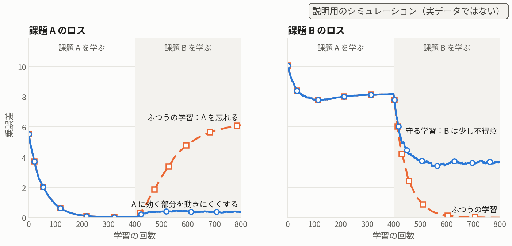
図8-1は、20個の重みを持つ線形のモデルで、破滅的忘却を再現した数値例である。課題 A と課題 B は、一部の重みを共有し、その共有した重みについては違う答えを求める。前半で課題 A を、後半で課題 B を学ばせた。ふつうの学習（橙）では、課題 B を学ぶと、課題 A のロスが大きく上がる（学習の終わりに約 6.1）。課題 A に効く重みを動きにくくする学習（青）では、課題 A のロスは低いまま保たれる（約 0.38）。その代わり、共有した重みで答えが食い違う分だけ、課題 B は少し不得意になる（ふつうの学習ではほぼ 0、守る学習では約 3.7）。守ることには、新しい課題の成績という代償がある。 ただし、代償が出るのは、二つの課題が共有し、しかも違う答えを求める重みの分だけである。課題 A が使わない重みは、課題 B のために自由に動かせる。重みの数が多いほど、こうした「空いている方向」は多い。
この「重要な部分を動きにくくする」方法は、EWC（弾性的な重みの固定、Kirkpatrick ら 2017。→付録A-20）として知られる。古い課題で得た重みのまわりに、ばねのような罰則をかける。ばねの強さは、その重みがどれだけ古い課題の答えに効いていたか（フィッシャー情報量）で決める。著者たちは、この罰則をベイズの規則から導いている。古い課題を学んだ後の知識（事後分布）は正確には計算できないので、古い課題の答えを中心とし、フィッシャー情報量を精度とする正規分布で近似し、それを新しい課題の事前の知識として使う。フィッシャー情報量が大きい部分は、第3章の言葉でいえば初めの不確かさ P₀ が小さい部分で、学習率が実質的に低くなる▲構造。著者たちは、手書き数字の画素を課題ごとに並べ替えた一連の課題と、十種類のテレビゲームを順に学ぶ課題で、この方法が忘却を大きく減らすことを示した。
ほかにも、いくつかの方法がある。
- La-MAML（Gupta, Yadav & Paull 2020）：パラメータごとの学習率を、メタ学習で決め続ける。古い課題の勾配と新しい課題の勾配がぶつかるパラメータでは学習率を 0 に近づけ、そろうパラメータでは上げる。「観察して決め直す」規則を、外側で学ぶ形である
- ANML（Beaulieu ら 2020）：神経修飾を模したネットワークが、予測のネットワークの活動を入力ごとに開け閉めし、その結果、どの部分が学習するかを切り替える。600クラスを順に学ぶ課題で、忘却を抑えた
- リプレイ：古い課題のデータを、新しい課題のデータに混ぜて学ぶ。古い答えを、内側のロスに残し続ける方法である
8.4 脳の答え：速い記憶と、遅い記憶
では、脳はどうしているのか。人は、新しい知り合いの顔を覚えても、古い友人の顔を忘れない。脳も、多くの結合を共有するネットワークである。古い記憶がまったく壊れないわけではないが、1の足し算を忘れたネットワークのような極端な壊れ方は、ふつうは起きない。新しいことを学ぶ柔らかさと、古いことを保つ固さをどう両立させるかは、神経科学では「安定性と可塑性のジレンマ」と呼ばれ、古くから問われてきた（Grossberg 1980）。
代表的な答えの一つが、マクレランドらの相補的学習システムの理論である（McClelland, McNaughton & O'Reilly 1995）。脳は、性質の違う二つの学習の仕組みを持つ、という考えである。
- 海馬：一回一回の経験を、すばやく書き込む。経験どうしが重なりにくい表現を使うので、新しい記憶が古い記憶を上書きしにくい
- 大脳新皮質：多くの経験に共通する構造を、ゆっくり学ぶ。表現を多くの経験で共有するので、知識を一般化できる。その代わり、一度に大きく書き換えると、古い知識を壊す
二つをつなぐのが、再生（リプレイ）である。海馬に書き込まれた新しい記憶は、眠っている間などに繰り返し呼び出され、古い記憶と交互に、少しずつ新皮質に移されていく。マクレランドらは、ニューラルネットワークの模型を使って、新しい事柄だけを集中して学ばせると古い知識が壊れるが、古い事柄と交互に少しずつ学ばせれば、壊さずに新しい事柄を組み込めることを論じた。8.3節のリプレイは、この「交互に学ぶ」方法そのものである。この理論の更新版は、機械学習のリプレイとの関係も論じている（Kumaran, Hassabis & McClelland 2016）。
この仕組みを、この本の言葉に直してみよう。新皮質は、学習率を低く保つことで、すでに身につけた構造を守っている。その代わり、新しいことを身につけるまでに時間がかかる。つまり、遅れを払って、損傷を防いでいる。 海馬は、学習率の高い別の場所を用意して、その遅れを埋める。第10章の図10-1では、一つの学習率しか持てない学習者が、遅れと損傷の取り合いに苦しむ。脳は、学習率の違う二つの場所を持つことで、その取り合いを和らげている、と読める▲構造。第1章の三つの時計でいえば、その日の出来事（v に近いもの）は海馬が速く追い、一生を通じて変わらない世界の構造（u に近いもの）は新皮質がゆっくり学ぶ、という分担に当たる○類比。
一つひとつの結合にも、似た分担が見られる。ヤンらは、マウスの大脳皮質で、結合の受け手の側にある小さな突起（樹状突起の棘、スパイン）を長い期間追いかけた（Yang, Pan & Gan 2009）。学習や新しい経験の後には、新しい棘が作られ、古い棘が除かれた。新しい棘のごく一部と、発達の初めにできて残った棘の多くは、その後も長く保たれた。著者たちは、この保たれた棘が、一生の記憶を保つ構造の土台になると考えた。理論の側では、フージらが、一つの結合が可塑性の違う複数の状態を行き来する模型（カスケード模型）を示した（Fusi, Drew & Abbott 2005）。可塑性の高い状態はすばやく覚え、低い状態は長く保つ。一つの結合の中に、速さの違う時計をいくつも持たせることで、多く覚えることと、長く保つことを両立させる。8.3節の EWC の「大事な重みを動きにくくする」は、こうした結合の固定と同じ向きの考えである▲構造。
こうして見ると、脳は、この章で見た機械の処方の多く、つまり大事な部分の学習率を下げること、古い経験を混ぜて学ぶこと、速く学ぶ部分と遅く学ぶ部分を分けることを、組み合わせて持っている。進化生物学の模型の多くは、損傷の費用を入れてこなかった（第5章）。しかし、脳そのものは、この費用を避ける仕組みを何重にも備えている。損傷を数えてきたのは、機械学習だけではない。神経科学は、それを別の名前で調べてきたのである。
8.5 守るなら、最初の更新の前に
事前学習したネットワークを新しい課題に合わせる（微調整する）とき、ふつうは、事前学習した特徴の上に、ランダムに初期化した出力層を載せ、全体を学習させる。クマールらは、このやり方では、特徴が歪むことを示した（Kumar ら 2022）。出力層がランダムなうちは、出力の誤りが大きく、それを直そうとする更新が、特徴の側を、訓練データに現れる方向にだけ動かしてしまう。その結果、訓練データと違う種類のデータ（分布の外のデータ）への成績が下がる。この説明は二層の線形ネットワークで理論的に示され、実際の深層ネット（ResNet や ViT）で確かめられた。出力層だけを先に学習させ、その後に全体を学習させる手順（LP-FT）で、これを防げる。10種類の分布の外のデータの平均で、ふつうの微調整の正答率 59.3% に対し、LP-FT は 68.9% だった。
この結果は、生まれつきと学習の配分にとって、一つの教訓になる。生まれつきの答えを守るなら、答えを知らない部分が最初に大きく更新される前に守るのが有効である。 守り始めるのが遅れると、守るべきものは、すでに壊れている。これは機械学習の結果から生物への類推で、生物で確かめられたことではない○類比。
第10章への伏線。 破滅的忘却も特徴の歪みも、第5章の進化生物学の模型には出てこなかった「損傷」の費用である。一方、LP-FT は、出力層を先に学ぶ間、全体の学習を待つ。守ることの代わりに、少しの遅れを払っている。遅れと損傷の取り合いは、ここにも顔を出している。
8.6 深層ネットにも臨界期がある
アキレらは、深層ネットにも、学習の初期に情報が固まる臨界期があることを示した（Achille, Rovere & Soatto 2019）。学習の初めの時期に、ぼかした画像で学ばせると、その後で正常な画像を与えても、成績が完全には戻らない。短い期間だけぼかした画像を与える実験では、影響が最も大きいのは学習の初めの速い時期の中ほどで、それより後に与えても影響はほとんどなかった。著者たちは、これを子ネコの視覚の遮断の実験と定性的に比べている○類比。重みのフィッシャー情報量は、学習の初期に急に増え、その後に減った。
これは、可塑性が時間とともに閉じることが、生物に固有の分子の仕組みを仮定しなくても、学習する系に一般に現れうることを示唆する。ただし、これは生物の感受期が進化した理由を示すものではない。
8.7 重みを変えずに学ぶ
ここまでの機械は、どれも重みを動かして学んでいた。ところが、重みを一切動かさずに、新しい課題に適応する機械がある。
2018年、ワンらは、再帰型のネットワーク（自分の出力を次の時刻の入力に戻すネットワーク）を、報酬の確率が課題ごとに違う多くの課題で、強化学習によって訓練した（Wang ら 2018）。訓練を終えて重みを固定したネットワークに新しい課題を与えると、ネットワークは、数回の試行の結果を見て行動を変えた。重みは動いていない。動いたのは、ネットワークの中の活動の状態である。外側の学習（重みの訓練）が、内側の学習のやり方そのものを、活動の動き方として書き込んだのである。これは文字どおり二重の最適化で、内側で動く変数が重みではなく活動である点だけが違う▲構造。著者たちは、これを、ドーパミンによる学習が前頭前野の回路に速い学習を作り込む、という脳の仕組みの模型として提案した。前頭前野との対応は、著者たちの仮説である。
オルテガらは、こうした「記憶に基づくメタ学習」が、課題の分布の下でのベイズ最適な学習者に近づきうることを論じた（Ortega ら 2019）。第2章の言葉でいえば、外側が、環境の分布 P_E を事前の知識として持つ学習者を、活動の中に作ることに当たる。
大規模言語モデルの文脈内学習（→付録A-29）も、同じ形をしている。事前学習を終えたモデルは、入力の文章の中にいくつかの例を見せるだけで、重みを動かさずに新しい課題をこなすことがある。その内部で何が起きているかは、2026年の時点でも議論が続いている。小さな模型では、線形の注意機構だけを持つネットワークが、文脈の中の例に対して勾配降下の一歩と同じ計算をするように重みを組めること、回帰の課題で訓練するとそれに近い解に至ることが示された（von Oswald ら 2023）▲構造。しかし、実際に事前学習した大規模言語モデルが同じ計算をしているかは、確かめられていない（Shen ら 2024）。
第2章の式は、これを初めから含んでいた。 2.7節で、内側の学び方を「経験の履歴から次の答えを決める関数 π」と広く取った。π を、重みを動かす規則として作る必要はない。活動の状態として作ってもよい。
この本の問いにとって、重みを変えない適応には、はっきりした長所と短所がある。長所は、重みに書かれた答えを壊さないことである。損傷が起きる場所（重み）を、そもそも動かさない。短所は、文脈が消えれば、適応も消えることである。同じ課題に出会うたびに、学び直さなければならない。つまり、損傷を避ける代わりに、遅れを毎回払う。 第10章の言葉でいえば、損傷を遅れに置き換える、もう一つのやり方である。第1章の言葉でいえば、その場かぎりの答え（一つの文脈の中の u や v）は活動で扱い、多くの課題に共通する答え（c に近いもの）は重みに書く、という分担に当たる○類比。
重みを動かす場合にも、動かす範囲を絞る方法が広く使われている。LoRA（Hu ら 2022）は、事前学習した重みを固定し、それに足す変化を、低い次元の部分空間に限って学ぶ。もともとの動機は、計算と記憶を節約することだった。ビダーマンらは、プログラミングと数学の分野で、LoRA が、全部の重みを動かす微調整に比べて「学ぶことが少なく、忘れることも少ない」ことを示した（Biderman ら 2024）。大半の方向の窓を閉じ、少数の方向だけを開ける（「数式で見る」の「部分ではなく、方向」）と、損傷は減るが、届く答えも狭まる。第11章の言葉でいえば、学び方の範囲 Π を狭めることで、損傷を減らす代わりに、届かない損失を払っている▲構造。
大規模言語モデルを使う現場では、この取り合いが、毎日の設計の選択として現れている。モデルに新しい知識を持たせたいとき、重みを微調整して書き込むか、必要なときに文書を検索して文脈に入れる（検索拡張生成、RAG）か、である。微調整は、一度学べば後はすぐに答えられるが、重みを動かすので、すでに持つ能力を壊す危険がある（損傷）。検索と文脈は、重みを動かさないので壊さないが、答えるたびに探して読む手間を払う（遅れ）。オヴァディアらは、知識を問う課題で、教師なしの微調整より検索拡張生成の方が一貫して成績が良く、微調整で新しい事実を覚えさせるのは難しいことを報告した（Ovadia ら 2024）。この本の言葉でいえば、その知識にどれだけ頻繁に出会うか（一生の長さ）、知識がどれだけ速く古くなるか（v の速さ）、壊すと困る能力がどれだけあるかで答えが変わる、遅れと損傷の取り合いに似ている○類比。ただし、検索にかかる手間は第10章で定義する遅れと同じものではなく、微調整がいつも能力を壊すわけでもない。実際の選択には、知識を改める頻度、文脈に入る量、検索の誤り、記憶の置き場所、秘密の扱いといった、この本の座標の外にある軸も入る。答える前に長く考えさせる（推論の時の計算を増やす）ことも、重みを動かさずに、答えるたびに遅れを払う適応の一つと読める○類比。
機械学習の安全性の研究では、訓練によって作られたモデルの中に、それ自体が最適化を行う仕組みができることを「メサ最適化」と呼ぶ（Hubinger ら 2019）。そして、その内側の最適化が何を目的にしているかは、外側の訓練の目的と同じとは限らない、という問題を立てている。この本の言葉でいえば、外側の最適化が作った内側の学び方 π が、外側と同じものを最大にしているとは限らない、という問いである▲構造。進化が作った動物の学び方も、適応度そのものではなく、快や好奇心のような代わりの目標を追っていると見なせる。同じ形の問いが、生物の側にもある○類比。
現代の機械の学び方を、第2章の入れ子の段に並べると、次のようになる。第1章の三つの時計（環境が変わる速さ）ではなく、最適化の入れ子のどの段に当たるかで並べたものである。事前学習、微調整、文脈内学習は、第2章の入れ子が三段に重なったものと読める。
| 段階 | 動かすもの | 第2章の入れ子での位置 | 対応 |
|---|---|---|---|
| 構造と訓練の手順の設計 | ネットワークの形、学習率のスケジュール | 外側（Π と θ を選ぶ） | ▲構造進化と同じ段だが、探し方は人の設計と探索 |
| 事前学習 | 全部の重み | 初期値 w₀ を作る役割は外側、世界のデータから勾配で学ぶやり方は内側 | 二つの面を持つ（下の本文） |
| 微調整・事後学習（LoRA、人のフィードバックからの強化学習などを含む） | 重みの全部、一部、または一部の方向 | 内側 | ▲構造 |
| 文脈内学習 | 活動の状態（重みは固定） | 内側の、さらに内側 | ▲構造（小さな模型）。大規模言語モデルでは未解決 |
事前学習には二つの面がある。多くの課題に共通する初期値を作る点では、進化と同じ段の役割を持つ。しかし、その初期値を、突然変異と選択ではなく、世界のデータから勾配で学ぶ点では、一生の学習に近い。第9章で見るように、ゲノムは結合を一つずつは書けないので、生物の「生まれつき」は、事前学習の重みのようには作られていない。事前学習を「進化」と呼ぶときは、この違いに注意が要る○類比。
数式で見る Meta-SGD と EWC
Meta-SGD。 課題 𝒯 での適応は、次の一歩で書かれる。∘ は成分ごとの積で、α はパラメータごとの学習率のベクトルである。初期値 w₀ と学習率 α の両方を、適応後のロスが小さくなるように外側で学ぶ。第2章の言葉でいえば、外側が選ぶ θ は、この二つである。
EWC。 古い課題 A で得た重み w*_A のまわりに、フィッシャー情報量 Fᵢ で重みをつけた二次の罰則をかける。
ベイズの言葉では、課題 A の後の知識（事後分布）を、平均 w*_A、精度（分散の逆数）λFᵢ の正規分布で近似し、それを課題 B の事前分布として使うことに当たる。第3章のカルマンの利得 K = P/(P + r) で、P を小さくする（精度を上げる）と学習率が下がるのと同じ向きに、Fᵢ の大きい部分は動きにくくなる。
部分ではなく、方向。 EWC の罰則は、重みごとのフィッシャー情報量 Fᵢ だけを使っている。これは、フィッシャー情報量の行列を対角で近似したものである。一般には、古い課題にとって重要なのは、個々の重みではなく、いくつかの重みを組み合わせた方向（行列の固有ベクトル）である。その場合、窓は重みごとではなく、方向ごとに閉じる。重要な方向に直交する向きにだけ更新する継続学習の方法がある（Farajtabar ら 2020、Saha ら 2021）。これは、重要な部分空間の学習率を 0 にし、それに直交する部分空間の学習率を開けておくことに当たる。カルマンフィルタでも、不確かさの行列 P の固有方向ごとに利得が下がる（付録B.3）。この本の「部分ごとの可塑性」は、P が対角の場合である。
原論文では、ネットワークの重みを θ と書く。この本では、第2章に合わせて w と書く。
▶ 多次元では。 1の足し算と2の足し算は、同じ場所を取り合うしかなかったのだろうか（→発展1、発展4）。
隣の分野から見ると
生物学の読者へ。 破滅的忘却は、学習そのものが、すでに持っている正しい答えを壊す、という費用である。進化生物学の模型で「学習の費用」とされてきたのは、主に確かめる間の機会費用（第5章）や、学習の仕組みを保つ費用で、この「損傷」はほとんど入っていない。部分ごとの学習率をどう下げれば損傷を防げるかについて、機械学習は、フィッシャー情報量で重みをつける（EWC）、勾配のぶつかりを見る（La-MAML）、出力を先に学ぶ（LP-FT）といった具体的な処方を持っている。脳もまた、これらとよく似た仕組みを持っている（8.4節）。第10章では、この費用を、生物学の機会費用と並べる。
思考実験。 第5章のスティーブンスの2期の模型で、学ぶ部分を一つではなく二十個にし、部分どうしが結合を共有するようにしたら、どうなるだろうか。学習の費用に、確かめる間の遅れだけでなく、正しい部分を壊す損傷が加わる。学ぶ型が有利になる条件は、損傷の分だけ、厳しくなるはずである。そして、EWC のように「確かな部分を動きにくくする」学び方が、進化の上でも有利になるかもしれない。
この章のまとめ
- メタ学習は、初期値と部分ごとの学習率を多くの課題から学ぶ。生物の「準備された学習」を勾配法で行うことに当たる
- 破滅的忘却は、どの部分が大事かを知らずに全部を動かすことで起こる。対策の多くは、大事な部分の学習率を下げる形で、守るなら最初の更新の前が有効である
- 脳は、速く覚える海馬と、ゆっくり学ぶ新皮質を分け、再生（リプレイ）でつなぐことで、損傷を避けている
- 深層ネットにも臨界期が現れ、可塑性が閉じることは学習する系に一般に起こりうる
- 重みを変えずに活動だけで適応する学び方（文脈内学習など）は、損傷を避ける代わりに、遅れを毎回払う。第2章の一般の式は、これを初めから含んでいた
第9章 少ない文字で脳を書く ―― ゲノムのボトルネック
9.1 30億の文字で、100兆の結合を
人のゲノムは、およそ30億の塩基（DNA の文字）でできている。一つの塩基は4種類のどれかなので、2ビットの情報を持つ。ゲノム全体でも、情報量はおよそ60億ビット、1ギガバイトに満たない。
一方、人の脳には、およそ1000億（10¹¹）の神経細胞があり、一つの細胞は1000以上の結合（シナプス）を持つ。結合の数は、およそ100兆（10¹⁴）になる。
ゼイダーは、深層学習が大きな成功を収めていた2019年に、「純粋な学習への批判」と題した論文を書いた（Zador 2019）。動物の能力の多くは、学習ではなく、ゲノムに書かれた生まれつきの仕組みから来ている。人工知能は、学習だけに頼るのではなく、そこから学ぶべきだ、という主張である。その中で、ゼイダーは、この二つを比べた。結合を一つずつ指定するには、「どの細胞とつなぐか」を結合ごとに書く必要がある。10¹¹個の細胞から一つを選ぶには、log₂10¹¹ ≈ 36.5 ビットが要る。それを10¹⁴個の結合について書けば、およそ 3.7 × 10¹⁵ ビットになる。
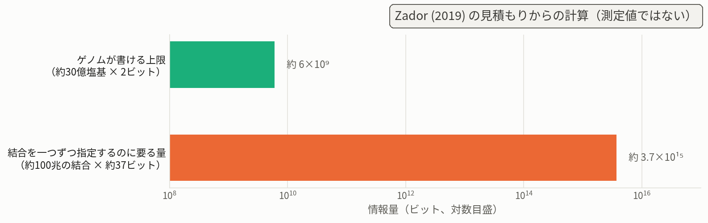
図9-1は、この二つを並べたものである。横軸は対数目盛で、二つの差は、およそ60万倍（6桁近く）ある。しかも、ゲノムの全部が脳の配線に使われるわけではない。ゲノムは、脳の結合を一つずつ書くことはできない。 ゼイダーは、ゲノムは配線の図面ではなく、発生の中で配線を作る規則を書いている、と論じた。この制約を、ゲノムのボトルネックと呼ぶ。
第1章で見たように、多くの動物は、生まれたときから多くの能力を備えている。それは、配線を一つずつ書いたからではなく、少ない文字で書かれた規則が、発生の中で、適切な配線を作り出すからだと考えられる。
9.2 図面ではなく、レシピ
ケーキのレシピは、小麦粉の粒一つ一つの位置を書かない。「混ぜる」「焼く」という手順だけを書き、その手順が、材料の性質を使って、ケーキの形を作り出す。ゲノムが書くのも、図面より、こうしたレシピに近い。
レシピで書くことには、利点と限界がある。利点は、少ない文字で大きなものを作れることである。限界は、レシピで作れる形が限られることである。結合一つ一つに自由な値を与えることはできず、「位置が近い細胞どうしは似た性質を持つ」「同じ種類の細胞は同じ規則に従う」といった、規則性のある形しか作れない。
第2章の式でいえば、これは、外側が選べる学び方の範囲 Π が、小さく制約されることに当たる▲構造。メタ学習では、外側はパラメータごとの初期値や学習率を、ほぼ自由に選べた（第8章）。ゲノムには、それができない。
この制約は、問題の「付け足し」ではない。何が書けるかが、何が最適かを決める。 制約がなければ、ゲノムは部分ごとに最適な可塑性を書けばよい（第3章）。制約があると、「書ける形の中で最も良いもの」が答えになり、それは、制約のない最適とは別の形をしているかもしれない。例えば、位置の滑らかな関数でしか可塑性を書けないなら、「固い部分」と「柔らかい部分」は、ばらばらに散らばることができず、まとまった領域になるしかない。脳の中で、可塑性の高い場所と低い場所が地図のように分かれていることを、この制約の下での解として読む見方もありうる（これは仮説である）。第11章では、こうした実装の制約が、生物と機械の答えの違いの中心にあるかもしれないことを考える。
9.3 神経進化：少ない数で、可塑性を書く
神経進化は、進化計算でニューラルネットワークを作る分野で、この制約を正面から扱ってきた。少ない数のパラメータ（ゲノム）から、ネットワークの結合や可塑性を生成する書き方を、間接符号化（→付録A-23）と呼ぶ。
- 可塑性を、神経の位置の関数として書く。 リシとスタンリーは、学習則そのものを、神経の幾何学的な位置の関数として書く間接符号化を提案した（Risi & Stanley 2010）。ゲノムは結合ごとの学習率を書く代わりに、「位置 (x, y) にある結合の学習則は、こう」という滑らかな関数を書く
- 自己組織化の種を与える。 同じく二人は、ゲノムが側方の結合の種だけを与え、その上で地形図が自己組織化するように導けることを示した（Risi & Stanley 2014）。自己組織化の規則は、第7章で見た活動依存の地図形成の模型や、コホネンの自己組織化地図（Kohonen 1982）にさかのぼる
- 学習則の数を絞る。 パームらは、ヘッブ則の種類の数を絞ることで、ゲノムのボトルネックを課した（Palm, Najarro & Risi 2021）。環境が変わる強化学習の課題で試すと、規則とその割り当てを同時に学ぶのは難しく、成績は悪かった。外側の書き方の自由度が、成績を制限することを示した例である
- 干渉を、構造で防ぐ。 エレフセンらは、回路のモジュール性を進化させると、新しい技能を学んでも古い技能を忘れにくくなることを示した（Ellefsen, Mouret & Clune 2015）。ヴェレスとクルーンは、ある位置から拡散する神経修飾で学習する場所を限ることで、破滅的忘却を防いだ（Velez & Clune 2017）。第8章の問題を、進化と位置の関数の側から扱った例である
- 学習則そのものを探す。 望む機能を生む可塑性の規則そのものを、メタ学習や進化で探す研究もある（Confavreux ら 2020、Jordan ら 2021）
ゼイダーらは、その後、ネットワークの重みを、はるかに小さな「ゲノムのネットワーク」で圧縮して表し、その圧縮した表現から生まれつきの能力をどこまで再現できるかを調べている（Shuvaev, Lachi, Koulakov & Zador 2024）。こうした研究は、機械学習のハイパーネットワーク（少ない数から、別のネットワークの重みを生成するネットワーク）と近い発想である○類比。
9.4 まだ分かっていないこと
神経進化は、書き方の制約の下で何が書けるかを、数値で試してきた。しかし、その制約の下で最適な配分が、環境の統計の関数としてどう変わるかを、系統的に調べた研究は、まだ見当たらない。
例えば、第1章で挙げた「どの部分が変わるかが、世代を越えて決まっているか」という量を考えよう。決まっていれば、ゲノムは「この場所は固く、あの場所は柔らかく」と、位置の関数として可塑性を書ける。これは、レシピで書ける形である。決まっていなければ、位置の関数では書けず、個体が一生の中で見分けるしかない。どれだけ少ない数で書けるかと、どの部分が変わるかの規則性は、互いに関係しているはずである。しかし、この関係を式で示した研究は、まだ見当たらない。ここには、手つかずの問いが残っている。
数式で見る ボトルネックの見積もり
ゼイダーの見積もりを、式で確かめる。ゲノムの情報量の上限と、結合を一つずつ指定するのに要る情報量は、次のとおりである。
比はおよそ 6 × 10⁵ である。これは、結合の相手を自由に選べるとしたときの見積もりで、結合の強さの情報は数えていない。強さまで書くなら、要る量はさらに増える。
第2章の式でいえば、ゲノムが書けるのは、外側のパラメータ θ の次元が小さい場合に当たる。初期値と可塑性は、θ から生成される。
G は発生の規則（レシピ）である。θ の次元が小さいほど、表せる w₀ と H の範囲（第2章の Π）は狭くなる。
▶ 多次元では。 10²² 個の結合を、10⁹ 個の文字で書くには、どんな「書き方」がありうるだろうか（→発展5）。
隣の分野から見ると
機械学習の読者へ。 ゲノムのボトルネックは、重みを直接持たず、少ない数から初期値や可塑性を生成する問題である。少ない数で書ける形（位置の滑らかな関数、少数の学習則）は、表現できる配分に上限を課す。生物は、この制約の中で、経験の前に自分の配線を整える段階（第7章の自発活動）を持つ。これは、世界についての情報ではなく、自分自身の配線についての情報だけを使う「学習の前の学習」である。機械学習の側にも、近い発見がある。目的の関数を下げるために実際に動かす必要のある方向の数（固有次元）は、パラメータの数よりはるかに少なく（Li ら 2018）、事前学習した言語モデルの微調整では、とくに少ない（Aghajanyan ら 2021）。少ない数で振る舞いを決めるという点で、ゲノムのボトルネックと発想が近い○類比。
生物学の読者へ。 神経進化は、「ゲノムが書ける形」を変えたときに、何が書けなくなるかを、数値で試せる。仮説上の発生の規則が、どれだけの情報量で何を実現できるかを、計算で確かめる手段になる。
思考実験。 第8章の Meta-SGD で、パラメータごとの学習率を自由に持たせる代わりに、「ネットワークの中の位置の、なめらかな関数」としてしか書けないようにしたら、どうなるだろうか。どの部分が変わるかが課題の間で決まっていて、しかも変わる部分がまとまった場所にあるなら、ほとんど損はないはずである。変わる部分がばらばらに散らばっているなら、大きく損をするはずである。この差を測れば、「どの部分が変わるかの規則性」と「ゲノムの書きやすさ」の関係を、数値で示せる。
この章のまとめ
- ゲノムの情報量は、脳の結合を一つずつ指定するのに要る量より、6桁近く小さい。ゲノムは図面ではなく、配線を作る規則を書く
- 規則で書けば、表せる配分の形は限られる。これは、第2章の式で、選べる学び方の範囲 Π が狭まることに当たる
- 神経進化は、少ない数で可塑性を書く方法を試してきたが、制約の下での最適な配分は、まだ系統的には分かっていない
第5部 つなぐ
第10章 見えざる二つのコスト ―― 遅れと損傷
10.1 様子を見るか、自分のやり方で動くか
新しい職場に移ったとする。最初の一週間は、周りのやり方をよく見て、何が決まりで何が自由なのかを確かめてから動くか。それとも、初日から自分のやり方で動き、まずければ直すか。
様子を見れば、決まりを壊すことはない。しかし、その一週間は仕事が進まない。初日から動けば、仕事は進む。しかし、知らずに大事な決まりを壊すかもしれない。
この二つの損は、種類が違う。前者は遅れの損、後者は損傷の損である。第5章の進化生物学と第8章の機械学習は、ちょうどこの二つを、別々に数えてきた。
- 進化生物学（と制御工学）の「学習の費用」は、主に遅れである。確かめる間は、正しく振る舞えない（第5章の機会費用、第4章の探りの費用と待つ間の損。この二つの対応は▲構造）
- 機械学習の「学習の費用」は、主に損傷である。学習が、守るべき答えを壊す（第8章の破滅的忘却、特徴の歪み）
ここまでの章で、二つの費用には印をつけてきた。まとめると、次のようになる。
| 章 | 出てきたもの | 遅れか、損傷か |
|---|---|---|
| 第3章 | どの部分が確かかを知らずに、全部に同じ学習率を使う | 損傷（確かな部分を雑音で動かす） |
| 第4章 | 双対制御の探りの費用、リアルオプションの待つ間の損 | 遅れ |
| 第5章 | 確かめることの機会費用 | 遅れ（学ぶ部分が少なく、損傷は出てこない） |
| 第5章 | 他者から学ぶ（社会学習） | 確かめる間の遅れを省く。ただし、写した答えが古ければ、その分を取り戻すのにまた遅れる |
| 第7章 | 窓を閉じること | 損傷を防ぐ（固まった答えを守る） |
| 第8章 | 破滅的忘却、特徴の歪み、LP-FT | 損傷。LP-FT は、少し待つ（遅れ）ことで損傷を防ぐ |
| 第8章 | 脳の相補的学習システム（海馬と新皮質） | 損傷を防ぐ。新皮質はゆっくり学ぶ（遅れ）ことで損傷を避け、その遅れを海馬が埋める |
| 第8章 | 重みを変えない適応（文脈内学習）、LoRA | 文脈内学習は、損傷を避ける代わりに、遅れを毎回払う。LoRA は、損傷を減らす代わりに、届く答えを狭める |
この章では、二つを同じ勘定に並べる。遅れと損傷を一つの勘定に並べ、損失を三つの層に分けて、二つの軸で読む。これが、この本の提案する見方である。
10.2 一つの学習率で、全部を学ぶと
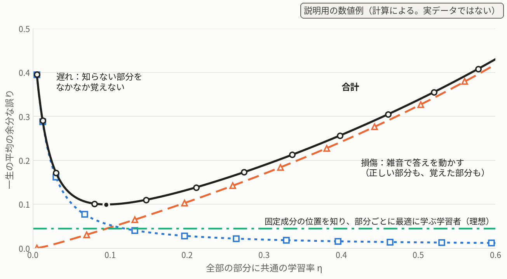
図10-1は、二つの費用を一つの数値例に並べたものである。答えは多くの部分からなり、その半分は固定成分（第1章の c）で、生まれつきの答えがすでに正しい。残りの半分は学ぶべき部分（u）で、その値は世代ごとに違い、生まれつきでは分からない。どの部分が固定成分で、その値がいくつかは、世代を越えて決まっていて、外側の過程（進化）が生まれつきの答えに書いている。 知らないのは、学ぶべき部分の値だけである。経験には雑音がある。この学習者は、部分ごとに学習率を変えることができない。そのため、全部の部分に同じ学習率 η を使う。横軸がその η、縦軸が一生（50回の経験）の平均の余分な誤りである。
- 遅れ（青）：η が小さいと、知らない部分をなかなか覚えない。学ぶ前の大きな誤りが長く続く
- 損傷（橙）：η が大きいと、経験の雑音に合わせて答えを動かしてしまう。もともと正しかった部分も、いったん覚えた部分も、雑音で揺さぶられる
- 合計（黒）：二つの和は、η ≈ 0.096 で最小になる（余分な誤り 約 0.100）
緑の一点鎖線は、部分ごとに学習率を変えられる学習者の成績である。どの部分が固定成分かは世代を越えて決まっているので、この学習者は、固定成分の学習率を 0 にし、学ぶべき部分だけをカルマンの利得で学ぶ。余分な誤りは約 0.045 で、共通の学習率の最良の値（約 0.100）の半分以下である。二つの差（約 0.055）が何の値段なのかは、10.3節で考える。
なお、これとは別の世界も考えられる。どの部分が固定成分かが世代ごとに変わり、一生の中で見分けなければならない世界である（第1章の「どの部分が変わるかが決まっているか」が「いいえ」の場合）。その世界では、遅れと損傷の取り合いは、次の二つの戦略の選択として現れる。
- 様子を見て、見分けてから学ぶ。 学ぶ前に経験を重ねて、どの部分が変わり、どの部分が変わらないかを見分ける。見分けた後は、部分ごとに学習率を変えられるので、損傷はほとんど起きない。しかし、見分ける間は学ばないので、遅れの損を払う
- 学びながら見分ける。 遅れはないが、見分けがつくまでの間、正しい部分も同じ学習率で動かすので、損傷の損を払う
職場の例でいえば、前者は「一週間は様子を見る」、後者は「初日から動く」である。どちらが得かは、部分の数、雑音の大きさ、一生の長さ、そして守るべき部分がどれだけ大事かによる。
10.3 理想と現実のギャップ
ここまでは、遅れと損傷という、損失の現れ方を見てきた。ところが、この二つを数の上で分けようとすると、もう一つの軸が要る。損失がなぜ生じたかという軸である。
図10-1の例に戻ろう。共通の学習率 η = 0.3 を使う学習者の余分な誤りは、約 0.189 である。この 0.189 は、どこから来たのだろうか。比べる相手を三つ置くと、三つの層に分けられる。
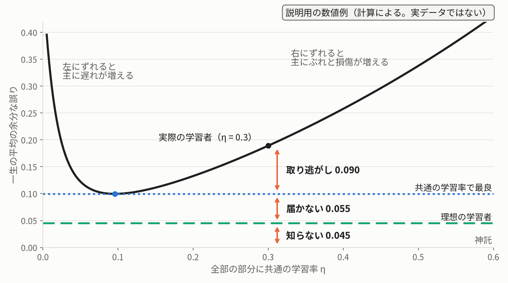
- 神託：その時点の環境の状態を知っている架空の学習者である。この例では、学ぶべき部分（u）のその世代の値を、答える前に知っている。ただし、将来の揺らぎや経験の雑音までは知らない。神託の余分な誤りは 0 である
- 理想の学習者：環境の状態（u の値）は知らないが、環境の分布 P_E は知っていて、経験からどんな学び方でも選べる学習者である。第2章の最後と第11章でいう「ベイズ最適な学習者」に当たる。この例では、どの部分が固定成分でその値がいくつかは、世代を越えて決まった環境の分布の一部なので、理想の学習者も知っている。これは神託だけが知る情報ではない。だから理想の学習者は、固定成分を動かさず、学ぶべき部分だけを最適に学ぶ。余分な誤りは 0.045 である
- 実装の範囲で最良の学習者：実際に許される学び方の範囲（ここでは「全部の部分に共通の学習率」）の中で、最良のものを選んだ学習者である。余分な誤りは 0.100 である
この三つを階段にすると、実際の学習者の損失 0.189 は、次の三つの層に分かれる（図10-2）。
- 知らない（0.045）：世界について知らないから失うもの。どれだけ賢い学習者でも、見ていないものは分からない。神託との差は、理想の学習者にも残る
- 届かない（0.055）：体・回路・アルゴリズムの制約のため、届かないもの。部分ごとに学習率を持てない、という制約がなければ、理想の学習者まで届いたはずの分である
- 取り逃がし（0.090）：手が届く範囲に最良の学び方があっても、経験が足りなかったり、うまく最適化できなかったり、世界の変化に追いつけなかったりして、実際にはそれを手にできないことがある。本書では、その差を「取り逃がし」と呼ぶ。この例では、共通の学習率を最良の 0.096 ではなく 0.3 に選んだことによる分である
この例では、第3層がちょうど図10-1の U 字の底からのずれになっている。底から左にずれれば遅れとして、右にずれれば損傷として現れる。第2層は、U 字の底と理想の学習者の差である。
ただし、この三つの層は、物理法則のように世界の側で決まっている区分ではない。神託と理想の学習者に何を知らせるかを決めて、初めて境目が決まる。この例では、固定成分の位置と値は、理想の学習者も知っている、と決めた（この約束の詳しいことは付録C.6）。
また、三つの層には動き方に違いがある。実装の範囲を広げると、第2層は減るか変わらないが、第3層には決まった向きがない。選べる学び方が増えると、最良のものが良くなる一方で、それを見つけにくくもなるからである。
機械学習で馴染みのあるバイアス・バリアンス分解とは、切り方が違う。バイアス・バリアンス分解は、一つの推定の誤りを、偏り・ばらつき・雑音に分ける。三つの層は、誤りを、基準となる学習者との差で分ける。雑音は神託にも残る誤りなので、会計の原点の側に入る。偏りとばらつきは、理想の学習者にも残るので、三つの層にまたがる。二つの分解は、一対一には対応しない○類比。
第1層には、すでに出会っている。 第4章の傘の例で、天気を前もって知れたら得られた価値 EVPI（70）は、神託が「雨が降るかどうか」を知っている場合の第1層そのものである■式。第6章で、手がかりのない系統が、毎世代の環境を知っている系統に比べて失う増殖率、つまり環境のエントロピー 𝓗(E) も、最も単純な場合の第1層である■式。手がかりを見れば、第1層は 𝓗(E | C) まで減り、減った分が相互情報量 I(E; C) である。増殖率は対数で測るので、この第1層は nats（自然対数で測った情報の単位。2を底にすればビット）で表され、情報の量と増殖率の損失を、同じ物差しで比べられる。最適化の「完全情報の期待値」と、理論生物学の「情報の価値」は、同じ層を別の名前で測っていたのである（付録C.6）。
三つの層の厳密な定義と、層の境目が何を基準に決まるかは、付録C.6 に式と一緒にまとめた。
10.4 二つの軸
こうして、損失を見る軸が二つになった。
- 会計（損失がなぜ生じたか）：知らない、届かない、取り逃がし
- 現れ方（損失がどう現れたか）：遅れ、損傷
二つは、直交する別の軸である。同じ「遅れ」でも、知らないことから来る遅れもあれば、取り逃がしから来る遅れもある。次の表は、それぞれの組み合わせの例である。各欄は例であって、ある現象をその欄に固定する分類ではない。
| 遅れとして現れる例 | 損傷として現れる例 | |
|---|---|---|
| 知らない | 確かめる間の機会費用（第5章）、探りの費用（第4章） | （下で定義する狭い意味の損傷は、理想の学習者では原則として生じない） |
| 届かない | 2期で固定するような硬い学び方しか書けない | 既存の知識を守れる学習則が、許される範囲の中にそもそもない |
| 取り逃がし | 学習率を低すぎる値に選ぶ | 守れる学習則が許される範囲の中にあるのに、それを獲得できなかった |
損傷の定義を狭くしておく。 この本で損傷と呼ぶのは、「すでに正しかった答えを、学習則の干渉によって不必要に壊すこと」である。これと区別すべきものに、最適な忘却がある。環境が一生の中で変わるとき（第1章の v）、古い答えを捨てるのは損傷ではなく、正しい振る舞いである。また、記憶の容量が限られているとき、新しいことを覚えるために古いことを手放すのは、その制約の下で最良でありうる。この場合の損失は、損傷ではなく、届かない（第2層）の中の出来事である。
この狭い定義の下では、理想の学習者には、損傷は原則として生じない。 どの部分がどれだけ確かかを知っていれば、確かな部分の学習率は、カルマンの利得と同じように自動的に低くなるからである。図10-1の緑の一点鎖線の学習者は、固定成分を動かさない。一方、遅れは理想の学習者にも残る。 情報がない間は、最良の答えが分からないからである。損傷は、届かないか、取り逃がしたときにだけ現れる。
同じ現象が、違う層から生じうる。 二つの軸を分けた理由は、ここにある。同じ遅れや損傷が、違う層の原因から生じることがある。逆に、同じ層の損失が、遅れとして現れることも、損傷として現れることもある（図10-2の第3層は、U 字の底から左にずれれば遅れに、右にずれれば損傷になった）。だから、現象を見ただけでは、その原因がどの層にあるかは決まらない。 遅れが観察されたからといって、情報が足りないせいとは限らない。遅れは、知らないことからも、硬い学び方しか書けないことからも、学習率を低く選びすぎたことからも生じる。
破滅的忘却は、そのことを最もよく示す例である。第8章の1の足し算を忘れたネットワークで起きたことは、現象としては同じ「古い答えを壊した」である。しかし、その会計は一通りではない。
| 見えている現象 | なぜ起きたか | 会計 |
|---|---|---|
| 古い答えを壊した | 学び方の範囲 Π の中に、古い答えを守れる学習則がそもそもない | 届かない（第2層） |
| 古い答えを壊した | 守れる学習則（EWC のようなもの）は Π の中にあるが、それを獲得できなかった | 取り逃がし（第3層） |
| 古い答えを壊した | 両方がある（守れる範囲が限られているうえに、その中の最良も手にしていない） | 第2層と第3層の両方 |
| 古い答えを捨てた | 環境が変わり、古い答えを捨てるのが最適だった | 損傷ではない（最適な忘却） |
この表は、破滅的忘却を新しく分類するためのものではない。「古い答えを壊した」という一つの現象の裏に、違う会計がありうることを示す例である。破滅的忘却が観察されたからといって、実装の制約が悪いとは限らない。守る方法はあったのに、それを手にしていなかっただけかもしれない。
この区別から、もう一つのことが分かる。進化生物学の模型の多くで損傷が現れなかった理由である。それらの模型では、学習する部分が一つか少数で、部分どうしが重みを共有せず、学び方も「確かめてから決める」という形で与えられていた。損傷が生じる余地が、初めからなかったと読める。
10.5 経験の前に、準備にどれだけの時間をかけるか
第7章で、生物が、経験から学ぶ前に、自発活動で自分の配線を整えることを見た。この準備の段階は、遅れと損傷の取り合いの一つの解き方と読める。経験から学び始める前に、学ぶための道具（どの細胞が隣り合うか、どの経路がどこにつながるか）を整えておけば、学び始めたときに、守るべきものを壊しにくい。損傷を減らすために、遅れを少し払う解き方である。その代わり、準備の間は、世界について何も学ばない。
準備にどれだけの時間をかけるべきかは、限界の価値の勘定で考えられる。準備によって成績がどれだけ上がるかは、準備の時間とともに飽和していく。一方、準備に使った時間の分だけ、一生の中で成績を上げられる時間が減る。最適な準備の時間は、準備をもう少し延ばしたときの得と損が釣り合う点である。
この勘定は、向きについて、はっきりした予測を与える（式は「数式で見る」）。
- 一生が長いほど、準備は長くなる。 準備の時間の損は、一生の長さで割った割合で効くからである
- 整える必要が大きいほど、準備は長くなる。 準備を乱すもの（撹乱）が大きければ、整えるのに時間がかかる
- 費用の重さを増やすと、準備は短くなる。 ただし、一生の長さ・整える必要・費用の重さは、どれも対数の中に入るので、効き方は穏やかである。どれかを10倍にしても、準備の時間は、飽和の時定数 τ に ln 10 ≈ 2.3 をかけた分しか変わらない
- 一生の長さが特別に効くのは、τ が一生とともに伸びるときである。 長生きの動物ほど、整えるべき回路が大きく、整うまでの時定数 τ も長いなら、準備の時間は一生の長さにほぼ比例して延びる。この場合、準備の時間は、費用の重さ（対数の中）よりも、一生の長さ（τ を通じて外に出る）に強く左右される
- 準備をやめる境目がある。 整える必要がある程度より小さければ、準備はしない方がよい
10.6 まだ一つの勘定になっていない
遅れと損傷を、三つの層に分けて、同じ模型の上で測った研究は、まだ見当たらない。道具は、すでに分野ごとにそろっている。進化生物学は、遅れを数えるための模型と選抜実験を持っている（第5章）。機械学習は、損傷を測り、防ぐ手段を持っている（第8章）。神経科学は、脳が損傷を避ける仕組みを調べてきた（第8章8.4）。最適化と制御は、観察そのものが情報の得られ方を変える問題の定式を持っている（第4章）。これらを持ち寄れば、損失を、知らない・届かない・取り逃がしの三つの層に分け、それぞれを遅れと損傷という現れ方ごとに測れるはずである。ここには、まだだれも地図を描いていない領域がある。終章で、これを最初の問いとして挙げる。
数式で見る 損傷の大きさと、準備の時間
損傷の大きさ。 すでに正しい部分（誤り 0）を、学習率 η で、雑音（分散 r）を含む経験に合わせて動かし続けると、誤りの分散 v は次のように増えていき、ある値に落ち着く。
η = 0 なら損傷は 0 で、η が大きいほど損傷は大きい。最適な学習者は、正しいと分かっている部分では η = 0 を選ぶので、損傷が生じない。
遅れの大きさ。 知らない部分（初めの誤りの分散 σᵤ²）では、学習率 η で学ぶと、初めの誤りは (1 − η)²ᵗ σᵤ² の速さでしか減らない。η が小さいほど、遅れの損は大きい。図10-1は、この二つを一生の長さ T = 50、r = 1、σᵤ² = 1 で計算し、半分の部分が正しい場合について足し合わせたものである。
準備の時間。 準備に時間 T_prep を使うと、成績の上がり幅が D(1 − e^{−T_prep/τ}) で飽和し（τ は飽和の時定数）、一生 T のうち T_prep の分だけ成績を上げる機会を失う（1 単位あたりの重さを k とする）とする。
得(T_prep) を T_prep で微分して 0 とおくと、(D/τ)e^{−T_prep/τ} = k/T から T*_prep が得られる。D、T、k はどれも対数の中に入るので、効きは τ 倍の対数にとどまる。DT/(kτ) が 1 を下回れば、準備はしない方がよい（T*_prep = 0）。τ・D・k が一生の長さによらないなら、T*_prep は ln T の一次式で延び、T に比例するような延び方（冪乗則）にはならない。ただし、τ が一生の長さとともに伸びるなら、T*_prep は T にほぼ比例しうる。導出は付録Bにもまとめた。
▶ 多次元では。 三つの層の損失は、向きごとに分けて足し合わせられるだろうか（→発展7）。
隣の分野から見ると
生物学の読者へ。 機械学習の「損傷」は、進化生物学の模型にはほとんど入っていない費用である。一方、神経科学は、脳がこの費用をどう避けているかを調べてきた（第8章8.4）。学習する部分が多く、部分どうしが結合を共有する神経系では、損傷は起こりうる。とくに、まだ何を守るべきかを知らない発達の初期に、大きな可塑性で学ぶことの危険は、機械学習の LP-FT の結果（第8章）が示すとおりである。経験の前に自発活動で配線を整える段階（第7章）を、損傷を避けるための準備として読む見方は、この費用を勘定に入れると、自然に出てくる。
機械学習の読者へ。 生物学の「遅れ」の費用は、メタ学習の適応後のロスでは見えない。累積ロス（第2章）で測ると、学ぶ前の誤りと、見分けるまでの遅れが、はっきり数えられる。継続学習の手法を比べるときに、損傷の防ぎ方だけでなく、守るまでにかかる遅れも同じ勘定で数えると、手法の比べ方が変わるかもしれない。
思考実験。 新しい課題が来たとき、最初の k 回は学習せずに「どの重みが新しい課題で動きたがるか」だけを観察し、その後に、動きたがる重みだけを学習する学習者を考える。k = 0 はふつうの学習（損傷あり）、k が大きいほど損傷は減るが遅れが増える。累積ロスを最小にする k は、課題の長さや雑音の大きさとともに、どう変わるだろうか。10.5節の準備の時間の勘定は、この問いの、最も単純な答えの形を与えている。
この章のまとめ
- 学習の費用には、確かめる間に正しく振る舞えない「遅れ」と、学習が守るべき答えを壊す「損傷」があり、進化生物学は前者を、機械学習は後者を数えてきた
- 損失は、なぜ生じたかによって、知らない・届かない・取り逃がしの三つの層に分けられる。これは、遅れと損傷という現れ方とは別の、直交する軸である。二つの軸で損失を測ることは、本書が提案する、これからの課題である
- 遅れは理想の学習者にも残るが、損傷（正しい答えを不必要に壊すこと）は、届かないか取り逃がしたときにだけ現れる。同じ現象が違う層から生じうるので、現象を見ただけでは原因の層は決まらない
第11章 なぜ一つの理論にならないのか ―― 書けることと、解けること
11.1 将棋のルールと最善手
将棋のルールは、紙一枚に書ける。駒の動き方、成り、取った駒の使い方、勝ちの条件。それだけである。原理的には、このルールから、どの局面でも最善手が決まっている。しかし、その最善手を計算することは、誰にもできない。局面の数が、あまりに多いからである。
問題を書けることと、答えが分かることは別である。 この本で扱ってきた「生まれつきと学習の配分」も、同じ事情にある。
11.2 共通の座標系に置ける
第2章で、この問題を一つの式で表した。
環境の分布 P_E、成績の集め方 Φ、選べる学び方の範囲 Π、一生の長さ T を決めれば、最良の学び方 π* が決まる。六つの分野の問題は、世界（P_E・T）・価値（Φ）・実装（Π）という共通の座標系の上に置ける。
ただし、これは六つの分野の問題が同じ問題だという意味ではない。十分に一般化すれば、どんな最適化の問題も、一つの大きな形式の中に埋め込める。埋め込めること自体は、何も主張しない。この本の主張は、共通の座標系に置くと、どの座標が違うから答えが違うのかが見えるようになること、そして、損失を三つの層に分けて測れるようになること（第10章）にある。
さらに、学習者が知っていてよい情報（ここでは P_E）と Φ（ここでは期待値）を決め、Π の制約を外せば、比べるための基準点が定まる。ベイズ最適な学習者である。環境の分布 P_E を事前分布として持ち、経験のたびに事後分布に改め、その事後分布の下で最良の答えを出す。確かめるために行動を変えることの価値（情報の価値）も、この学習者は自動的に勘定に入れる。強化学習の分野では、この問題を「ベイズ適応的な意思決定問題」と呼ぶ。オルテガらは、記憶を持つネットワークを多くの課題でメタ学習させると、その訓練データがベイズの規則に従って「ふるいにかけられた」形になるので、学ばれた逐次の戦略はベイズ最適に近くなる、と論じた（Ortega ら 2019）。ただし、これは理論的な議論と小さな例による説明で、どこまで近づくかの一般的な保証ではない。
ここで、ベイズ最適な学習者の役割をはっきりさせておく。ベイズ最適な学習者は、この本の「目標」ではなく「物差し」である。 実際の生物や機械は、ベイズ最適ではない。それが自然界の「真の答え」だと言いたいのでもない。大事なのは、神託、理想の学習者、実装の範囲で最良の学習者、実際の学習者という、比べる相手の階段を置くことである。そうすれば、どの段差で、どれだけ失っているかを測り、そのずれが何から来ているのかを問える（11.4節、付録C.6）。
11.3 六つの分野の結論は、この式の特殊解である
各分野は、この式のどこかを絞って、解ける形にし、それぞれの答えを得てきた。
右端の「対応」の列は、その分野の定式が、第2章の式とどの強さで対応するかを示す（序章の三つの印）。
| 分野 | 何を絞ったか | 得られた解 | 対応 | 章 |
|---|---|---|---|---|
| 統計学・適応フィルタ | 答えが線形、雑音が正規分布、行動が情報に影響しない | カルマンフィルタ。部分ごとの学習率と、その時間変化 | ■式ベイズ最適な学習者そのもの（数式で見る） | 第3章 |
| 数理最適化 | 決める時点が二つ | 二段階確率計画。EVPI と VSS | ▲構造学習が一度きりの調整になる | 第4章 |
| 制御工学 | 行動が、得られる情報を変える | 双対制御。探ることと制御することの取り合い | ▲構造内側を「制御」と読む | 第4章 |
| 経済学・意思決定理論 | 取り消せない決定が一度きり | リアルオプション。待つことの価値 | ▲構造価値を金銭で測る | 第4章 |
| 進化生物学・行動生態学 | 一生が2期、学ぶか学ばないかの二択 | Stephens の模型、Dunlap & Stephens の p_cue > p_fix | ▲構造外側は自然選択（勾配なし） | 第5章 |
| 理論生物学 | Φ を増殖率にする。合った表現型だけが増える | ケリーの賭けと両賭け | ■式Φ を Λ にした場合の解 | 第6章 |
| 発達の進化 | 手がかりのベイズ更新で、表現型を少しずつ変える | 感受期 | ▲構造内側はベイズ更新、外側は自然選択 | 第7章 |
| 機械学習 | Π を「初期値と学習率を勾配法で学ぶ」形に絞る | Meta-SGD などのメタ学習、EWC などの継続学習 | ■式外側の式そのものを勾配法で解く | 第8章 |
| 神経進化 | Π をとても小さくする | ゲノムのボトルネックの下で書ける可塑性 | ▲構造Π を発生の規則で作る | 第9章 |
11.4 それでも一つの理論にならない、三つの理由
共通の座標系に置け、情報の条件と価値を決めれば、比べるための基準点も定まる。それでも、六つの分野は一つの理論にまとまっていない。理由は三つあり、それぞれが座標の種類に対応している。
第一に、書けても解けない。 ベイズ最適な学習者は、事後分布の更新と、その下での最良の行動の計算を必要とする。環境が少し複雑になるだけで、どちらも計算できなくなる。将棋の最善手と同じである。各分野が結論を得られたのは、解ける形に問題を絞ったからである。そして、絞り方が分野ごとに違うので、得られた答えは、互いに直接には比べられない。これは、生物や機械の側ではなく、理論を立てる側の制約である。
第二に、価値が変わると、問題が変わる。 Φ が一生の成績の期待値なら、一個体の最適化の問題である。Φ が増殖率なら、系統全体の成績が問われ、個体の間で答えをばらつかせること（両賭け）まで選択肢に入る（第6章）。Φ を差し替えるだけで、最適化する対象そのものが、個体から系統に変わる。二つは、同じ式の別の解というより、別の問題と言った方が近い。
第三に、実装が「届く答え」を決め、損失は三つの層に分かれる。 第10章で、損失を、知らない（第1層）・届かない（第2層）・取り逃がし（第3層）に分けた。この見方で、Π の役割がはっきりする。
- 第1層は、世界について知らないことから生じ、Π には依存しない。理想の学習者（ベイズ最適な学習者）にも残る。遅れの費用の一部はここに入る
- 第2層は、Π の制約から生じる。生物の Π を決めているのは、例えば次のような制約である
- 表現の制約：ゲノムは、結合を一つずつは書けず、発生の規則しか書けない（第9章）
- 局所性の制約：シナプスは、自分の前後の細胞の活動と、広く送られる少数の信号（報酬予測誤差など）しか使えない。ネットワーク全体の誤差の勾配を、そのまま計算することはできないと考えられている
- 発達の制約：脳は、学習しながら自分自身を作っている。経験の前に配線を整える段階（第7章）は、この制約の下での解き方である
- 計算の制約：事後分布を正確に計算する余裕は、生物にも機械にもない
- 歴史の制約：生物は白紙から設計されず、祖先の体と発生の仕組みを作り替えることしかできない。一つの遺伝子が多くの形質に効く（多面発現。第2章2.5）ので、一つのつまみだけを動かすことも難しい
- エネルギーの制約：ヒトの脳は体重の約2%だが、体が消費するエネルギーの約20%を使う（Raichle & Gusnard 2002）。記憶を作ることにも、学習の仕組みを持つことにも費用がかかる（第5章）
- 第3層は、Π の中に最良の学び方があっても、それを実際に手にできないことから生じる。外側の探し方（自然選択は勾配を計算せず、一世代に一歩しか進まない。第2章）、有限の経験、最適化の失敗、世界の変化への遅れなどが、典型的な原因である
狭い意味の損傷（すでに正しかった答えを不必要に壊すこと）は、第2層か第3層からしか生じない（第10章）。だから、損傷を理想の学習者の式だけで論じることはできない。
ただし、各層は座標のどれかに主に由来するとはいえ、各層の大きさは、世界・価値・実装の組み合わせで決まる。 実装の制約の値段は、世界と組み合わせて初めて決まる。第10章と同じ条件で、「全部の部分に共通の学習率（時間とともに変えてよい）」という制約の値段を計算すると、次のようになる（付録C.6）。
| 世界：生まれつき正しい部分の割合 | 第1層（知らない） | 第2層（この制約の値段） |
|---|---|---|
| 0（全部が学ぶべき部分） | 0.090 | 0.000 |
| 0.5 | 0.045 | 0.025 |
| 0.9 | 0.009 | 0.028 |
同じ制約が、全部の部分が同じ性質の世界ではまったく損にならず、部分の性質が分かれている世界では損になる。
一つの現象に、違う座標の説明が並び立つこともある。ヒトの新生児は、ほかの霊長類に比べて未熟な状態で生まれ、多くを生まれた後に学ぶ。これには、育つ環境が予測しにくいから学びに回すのだ（世界）、二足歩行で狭まった産道を大きな頭が通れないからだ（実装の制約）、母親が胎児に回せるエネルギーに限りがあるからだ（Dunsworth ら 2012。産道の説に異を唱えた）、という説明が並んでいる。後の二つは、どちらも第2層の候補である。さらに、ヒトでは、学ぶべきことの多くが、ゲノムではなく文化として前の世代から渡される（第5章5.6）。そうであれば、長い子ども時代を、文化を受け取るための時間と読む見方も成り立つ（世界の側の説明）。どれがどれだけ効いているかは、この本の枠組みだけでは決められない。決めるには、座標を一つずつ動かして比べる必要がある。
機械にも、生物とは別の Π がある。勾配が計算できるのは強みだが、どの重みも同じ規則で更新する、課題の境目を知らされない、といった制約がある。生物と機械の答えの違いの多くは、P_E や Φ の違いよりも、この Π の違いから来ているかもしれない。 そうだとすれば、その違いは、第2層と第3層の大きさの違いとして測れるはずである。ただし、ある損失をどちらの層に計上するかは、何を基準にするかという約束による（付録C.6）。この問いは、終章の問い1と問い4に引き継ぐ。
この会計の中で、ベイズ最適な学習者（理想の学習者）は、実際に作るべき目標ではない。会計全体の原点は神託で、ベイズ最適な学習者はそこから数えて第1層の終点に当たる。そして、実装の制約による損失（第2層と第3層）を測り始めるための基準点である（付録C.6 の図C-1）。
11.5 それでも、何がつながっているか
一つの理論にはならなくても、分野を越えて一致している結論はある。この本で見てきた中から、根拠が確かなものを挙げる。
- 世代を越えて一定なものは書き、一生の中に規則性があるものは学ぶ。 Stephens (1991)、Pontes ら (2020)、免疫の戦略（Mayer ら 2016）。第1章の c と u・v の区別である
- 動かない目標には学習率を下げ、動く目標には下げきらない。 Robbins & Monro (1951)、カルマンフィルタ、LMS、Behrens ら (2007)。第3・7章
- どの部分を学びやすくするかは、世代を越えた規則性に合わせて、外側が決められる。 Dunlap & Stephens (2014)、Meta-SGD、微分可能な可塑性、Risi & Stanley (2010)。第5・8・9章
- 確かめるには費用がかかる。 確かめる間の機会費用（Stephens 1991、Katsnelson ら 2012）、感知の費用（Kussell & Leibler 2005）、探りの費用（双対制御）、待つ間の損（リアルオプション）。第4・5・6章
- 学習は、守るべきものを壊しうる。守るなら、最初の更新の前が有効である。 EWC、La-MAML、ANML、Kumar ら (2022)。第8章
- 可塑性は時間とともに閉じる。それは、ベイズ更新からも、勾配法で学ぶ系にも現れる。 Panchanathan & Frankenhuis (2016)、Achille ら (2019)、臨界期の神経科学。第7・8章
一方で、分野の間でまだつながっていない点もある。
- 二つの学習の費用が、別々に扱われている。 遅れは進化生物学と制御工学が、損傷は機械学習が、主に数えてきた（脳が損傷を避ける仕組みは、神経科学が別に調べてきた）。損失を三つの層に分け、それぞれを遅れと損傷という現れ方ごとに測った研究は、まだ見当たらない（第10章）
- 成績の集め方が分かれている。 理論生物学は増殖率を使い、機械学習の主要な系統と多くの進化シミュレーションは算術平均を使う（第6章）
- 経験の信頼性は、生物学では主要な軸だが、メタ学習と継続学習の主要な系統では動かされていない。 信頼性と部分ごとの配分を組み合わせた研究は、まだ見当たらない（第5章）
- 外側の書き方の制約は、主に神経進化だけが扱う。 生物学の理論もメタ学習も、外側が戦略をほぼ自由に選べると仮定する（第9章）
- 部分どうしの干渉は、主に継続学習と、神経科学の相補的学習システムの理論、それを進化の側から扱った神経進化の一部が扱う。 進化生物学と発達の模型は、学習する部分を独立に扱う（第8・9章）
- 可塑性を保つ費用は、主に生物学とリアルオプションが扱う。 機械学習では、学習率を高く保つことそのものに費用はかからない（第4・6章）
- 実装の制約ごとのずれは、まだ測られていない。 理想の学習者からのずれ（第2層と第3層）を、表現・局所性・発達・探し方・計算のどの制約がもたらしたかに分けて測った研究は、まだ見当たらない（第9・11章）
これらの点をつなぐ問いが、終章の主題である。
数式で見る カルマンフィルタは、ベイズ最適な学習者の特殊解
ベイズ最適な学習者は、経験のたびに事後分布を改める。答え w* の事前分布が正規分布 𝒩(w₀, P₀) で、観測が y = w* + ε（ε ～ 𝒩(0, r)）のとき、ベイズの規則で事後分布を計算すると、事後分布も正規分布になり、その平均と分散は次のようになる。
これは、第3章のカルマンフィルタの1歩そのものである。答えが線形で、雑音が正規分布に従うという絞り込みをすると、ベイズ最適な学習者の事後分布は、平均と分散の二つの数だけで表せ、その更新は閉じた形で書ける。この絞り込みを外すと、事後分布は一般に二つの数では表せず、計算は急速に難しくなる。
▶ 多次元では。 「全部に共通の学習率」という制約の値段は、正しい答えのばらつきがどんな形のとき、高くつくだろうか（→発展2、発展7）。
この章のまとめ
- 六つの分野の問題は、世界・価値・実装という共通の座標系に置け、情報の条件と価値を決めれば、実装の制約を外した基準点としてベイズ最適な学習者が定まる。各分野の結論はその特殊解で、対応の強さは■式から▲構造まで分かれる
- それでも一つの理論にならないのは、書けても解けないこと、価値が変わると問題が変わること、実装が届く答えを決め、損失が三つの層に分かれることによる
- 各層の大きさは座標の組み合わせで決まる。ベイズ最適な学習者は目標ではなく、第1層の終点であり、第2層と第3層を測るための基準点である。この二つの層を、実装の制約ごとに分けて測ることが次の問いになる
終章 次の科学への招待
第11章の最後に挙げた「つながっていない点」は、裏返せば、二つ以上の分野が、すでに持っている道具を持ち寄れば取り組める問いである。ここでは六つの問いを挙げ、発展編から生まれた問いを七つめとして加える。それぞれについて、各分野が持ち込めるものと、答えが出たときに分かることを書く。最後に、それぞれの問いに取りかかるための道しるべを表にした。
問い1 損失の会計を作る（理論）
- 生物学が持ち込むもの：確かめる間の機会費用の模型（Stephens 1991）と、それを検証する選抜実験（Dunlap & Stephens 2009）
- 機械学習が持ち込むもの：学習による損傷の測り方と防ぎ方（EWC のフィッシャー情報量、La-MAML の勾配のぶつかり、LP-FT の手順）と、学習理論の誤差の分解（Bottou & Bousquet 2008）
- 最適化と制御が持ち込むもの：観察そのものが情報の得られ方を変える多段階の確率計画（内生的な不確かさ）、双対制御の探りの費用の定式、情報の価値（EVPI）の計算
- 分かること：一生の損失を、知らない・届かない・取り逃がしの三つの層（付録C.6）に分け、それぞれを遅れと損傷という現れ方ごとに測れるか。そのためには、神託と理想の学習者の損失を、具体的な模型で計算できなければならない。第10章の数値例は、その最も小さな例である。これができれば、「部分ごとに可塑性を下げて守ることが割に合う条件」を、どの層の損失をどれだけ減らすか、という形で書けるようになる
問い2 成績の集め方を取り替えたメタ学習
- 理論生物学が持ち込むもの：増殖率による評価、両賭けの理論、手がかりの価値を相互情報量で測る枠組み（Kelly 1956、Rivoire & Leibler 2011）
- 機械学習が持ち込むもの：初期値と部分ごとの学習率を外側で学ぶ手続き（Meta-SGD など）と、大規模な数値実験の道具
- 分かること：「生まれつきの答え」と「部分ごとの可塑性」の最適な配分が、成績の集め方を算術平均から増殖率や生存確率に変えたときに、どう動くか。致命的な失敗がある世界で、生まれつきの答えの価値がどれだけ増えるか。個体（モデル）の間でばらつかせることが、学習の代わりになるか
問い3 経験の信頼性を、部分ごとの配分と組み合わせる
- 行動生態学が持ち込むもの：固定性 p_fix と信頼性 p_cue で学ぶかどうかを決める理論と、感覚ごとの信頼性を変えた実験進化（Dunlap & Stephens 2014）
- 機械学習が持ち込むもの：パラメータごとの学習率の学習と、部分ごとにラベルの雑音の強さが違う課題を設計する手段
- 分かること：雑音の多い部分の可塑性を下げることと、変わる部分の可塑性を上げることがぶつかるとき、どちらが優先されるか。生物の「準備された学習」が、多数の部分と干渉のある系でも、同じ形で現れるか
問い4 会計を使って、生物と AI を比べる（比較科学）
- 神経進化が持ち込むもの：間接符号化と、ゲノムのボトルネックを課した実験（Risi & Stanley 2010・2014、Palm ら 2021）
- 神経科学が持ち込むもの：シナプスが使える信号の局所性（前後の細胞の活動と、広く送られる少数の信号）と、発達の中で配線ができていく順序についての知識
- 理論生物学とメタ学習が持ち込むもの：制約がない場合の最適な配分（それが物差しの原点になる）と、外側を勾配法で解く場合と、勾配を使わない進化戦略で解く場合を比べる道具
- 分かること：問い1の会計を使って、ゲノムの容量、局所的な学習則、発達の順序、勾配が使えるか、記憶の容量といった Π の制約が、それぞれどの層（届かないか、取り逃がしか）の、どちらの現れ方（遅れか、損傷か）の損失を生むかを比べられる。第11章で見たように、生物と機械の答えの違いの多くがこの制約の違いから来ているなら、これは生物と AI を本当につなぐ問いになる。一つ注意がある。Π を広げると第2層は必ず減るか変わらないが、第3層には決まった向きがない。機械学習の二重降下（Belkin ら 2019）のように、容量を増やしたときの性能の変化を見るだけでは、どちらの層がどれだけ変わったのかは分からない（付録C.6）
問い5 経験の前の準備期間の長さを、数値で予測する
- 発達科学と神経科学が持ち込むもの：自発活動の期間や臨界期の時期の、種や系による違いのデータ
- 最適化が持ち込むもの：準備に使う時間の限界価値の勘定（第10章の T*_prep = τ ln(DT/kτ)）
- 分かること：この勘定は、一生が長いほど、整える必要が大きいほど準備が長くなり、どの量も対数を通じて穏やかに効く、という向きの予測を与える。種の間で比べるには、準備の効果が飽和する時定数 τ を測る必要がある。τ が一生の長さとともに伸びるかどうかで、準備の時間が一生の長さの対数で延びるか、ほぼ比例して延びるかが分かれる。なお、生活史理論には、成熟の年齢と成体の死亡率の積がほぼ一定になる、という経験則がある（Charnov 1993）。これは量も対象も違うので、この勘定の予測と直接には比べられない
問い6 可塑性を保つ費用を、学習する機械に入れる
- 生物学と意思決定理論が持ち込むもの：可塑性や防御を保つ費用（Mayer ら 2016）、権利を保つ費用（リアルオプション）
- 機械学習が持ち込むもの：学習率や更新の量に費用を課した訓練の手続き
- 分かること：学習率を高く保つことに費用がかかるとき、臨界期のような「閉じる」構造が、目標が動く場合にも現れるか。それが、生物の臨界期の閉じ方と比べられるか
問い7 窓は向きごとに閉じ、空いた向きが尽きると閉じきるか（発展編から）
- 推定の理論が持ち込むもの：確信（精度の行列）は経験した向きにだけ積み上がり、古い課題に重要な向きを守る射影は、ベイズの更新の極限であること（発展4）
- 機械学習が持ち込むもの：古い課題に重要な向きに直交する向きで学ぶ継続学習の方法（Saha ら 2021）と、変化を低い次元に限ったときの、学ぶ量と忘れる量の取り合いの測定（Biderman ら 2024）
- 神経科学が持ち込むもの：臨界期が、回路ごとに、経験の量に応じて閉じること（第7章、Hensch 2005b）
- 分かること：答えの次元が有限な学習者に、課題が次々と来るとき、確信の積み上がった向きの数と、新しい学習が古い答えに与える干渉の大きさの関係。それが、年齢とともに可塑性が下がることの、一つの説明になりうるか。なりうるとしても、それは分子のブレーキによる説明（第7章）とは別の段の説明で、二つは両立しうる
研究への道しるべ
どの問いから始めてもよい。表の「必要な段」は、「はじめに」の四つの段である。「最初の再現」は付録Eのコードで、まずこれを動かし、条件を一つ変えるところから始めるとよい。「何ができたら新しいか」は、著者が文献を調べた範囲で、まだ見当たらなかったことである。本文で「まだ見当たらない」と書いたところも、同じ意味である。見当たらないことは、存在しないことではない。取りかかる前に、最新の文献を自分でも調べてほしい。
| 問い | 必要な段 | 最初の再現 | 最初に読む文献 | 何ができたら新しいか |
|---|---|---|---|---|
| 問い1 損失の会計 | 段2〜3 | E-4、E-6 | Bottou & Bousquet 2008、Stephens 1991、Kirkpatrick ら 2017 | 遅れと損傷を、三つの層に分けて、同じ模型の上で同時に測ること（第10章10.6） |
| 問い2 成績の集め方を替えたメタ学習 | 段3 | E-2、E-8 | Kelly 1956、Rivoire & Leibler 2011、Li ら 2017（Meta-SGD） | 外側の成績を増殖率や生存確率にしたメタ学習で、初期値と部分ごとの学習率がどう変わるかを示すこと |
| 問い3 信頼性と部分ごとの配分 | 段2 | E-1、E-6 | Dunlap & Stephens 2014、Behrens ら 2007、付録B.3 | 部分（向き）ごとに、変わりやすさと経験の信頼性の両方が違う課題で、学ばれる学習率の配分を調べること |
| 問い4 会計で生物と AI を比べる | 段3 | E-4、E-6 | Zador 2019、Palm ら 2021、Ortega ら 2019 | 実装の制約（表現、局所性、発達、探し方、計算）ごとに、第2層と第3層を分けて測ること（第11章） |
| 問い5 準備期間の長さ | 段1〜3 | 付録B.6 の式を数値で確かめる | Hensch 2005a、Charnov 1993 | 準備の効果が飽和する時定数 τ を、種や系ごとに見積もること |
| 問い6 可塑性を保つ費用 | 段3 | E-1 に学習率の費用を足す | Mayer ら 2016、Dixit & Pindyck 1994、Burger ら 2008 | 学習率に費用を課したとき、目標が動く場合にも、臨界期のように閉じる構造が現れるかを示すこと |
| 問い7 向きごとに閉じる窓 | 段2〜3 | E-5、E-6 | Saha ら 2021、Biderman ら 2024、Saxe ら 2019 | 確信の積み上がった向きの数と、新しい学習の干渉の大きさの関係を、線形の模型で式にすること |
結びに
「生まれつき決めておくか、経験から学ぶか」は、六つの分野が別々の名前で解いてきた一つの問いである。正確に言えば、世界・価値・実装という共通の座標系の上に置ける問いで、分野の間の対応には、同じ式で書けるもの、同じ構造を持つもの、発想が近いだけのものがある。骨格は共通している。外側の最適化（進化、メタ学習、数理計画）が、内側の学習の初期値と可塑性を前もって決める。その配分は、環境の三つの成分（変わらないもの、世代で変わるもの、一生の中で変わるもの）と、どの部分が変わるかが決まっているかと、経験の信頼性と、成績の集め方で決まる。
この骨格の上で、多くの結論は、すでに分野を越えて一致している。変わらないものは書き、一生の中に規則性があるものは学ぶ。動かない目標には学習率を下げ、動く目標には下げきらない。どの部分を学びやすくするかは、世代を越えた規則性に合わせて外側が決められる。確かめるには費用がかかり、学習は守るべきものを壊しうる。答えが多くの部分からなるとき、守るか学ぶかの取り合いの多くは、向きがそろうかどうかの幾何の問題になる（発展編）。
それでも、この問いは、共通の座標系に置けても、そのままでは解けない。各分野は、カルマンフィルタの前提のうち別々のものを外し、解ける形に絞ってきた。そのために、同じ費用や同じ変数を、別の名前で、別の部分だけ扱っている。座標系に置いてみて見えてきたのは、損失を、世界を知らないことから来る分、実装の制約のために届かない分、届くはずのものを取り逃がした分に分けて測る、という見方である。もう一つ、この本では入り口だけを見た拡張がある。第1章の三つの時計は、正しい答えが変わる速さの分類だった。変わり方には、もう一つ、前の世代が次の世代をどれだけ予測するか、という性質がある。それが、親や仲間から学んだことを受け渡す仕組み（文化、エピジェネティックな継承、CRISPR 型の免疫）の価値を決める（第1章1.5、第5章5.6）。ヒトは、この仕組みを極端に発達させ、環境そのものを作り変えて、世代の間の予測のしやすさを自分で高めてきた。この性質を、三つの時計と並ぶ座標として式の中にどう入れるかは、これからの問いである。
七つの問いは、どれも一つの分野だけでは解けない。しかし、二つの分野の道具を持ち寄れば、今ある道具で取り組める。バベルの塔の住人たちが、互いの言葉を少しずつ覚えれば、工事はまた進むはずである。
発展編
発展編 1本の数直線から、多次元の空間へ
この編は、1周目には読まなくてよい。線形代数（行列、固有値、対角化）を学んだ後に、付録C.7と合わせて読むことを想定している。
本文では、答えをできるだけ1変数で書いた。しかし、生き物の脳も機械のネットワークも、答えは何百万もの部分からなる。本文の結論は、多次元でも成り立つのだろうか。この編の答えは、次の一文にまとめられる。
関係する行列の向きがそろっている（同時に対角化できる）限り、本文の1変数の式は、向きごとに正確に成り立つ。向きがそろわないところで、向きどうしがつながり、学習が別の向きの答えに干渉しうる。
この編の各節は、本文の章と対応している。各節の終わりには、その節の対応がどこまで■（式）で、どこから▲（構造）や○（類比）になるかを書いた。本文と同じく、図はどれも説明のための数値例か模式図で、実データではない。
| 節 | 問い | 本文の章 |
|---|---|---|
| 発展1 軸がそろうとき、ずれるとき | なぜ1変数の式で足りたのか。どこで足りなくなるのか | 第2・3・8章 |
| 発展2 三つの時計を、行列で書く | c・u・v は、多次元ではどうなるか | 第1・3・11章 |
| 発展3 外側の学習率の行列 | 自然選択にも学習率はあるか | 第2・5・8章 |
| 発展4 窓は向きごとに閉じる | 窓は全体で閉じるのか、向きごとに閉じるのか | 第7・8章 |
| 発展5 少ない数で行列を書く | 10²² 個の結合を、どう少なく書くか | 第9章 |
| 発展6 増殖率の多次元版 | 賭けを分けると、なぜ得をすることがあるか | 第6章 |
| 発展7 損失の会計を、向きごとに | 三つの層は、向きごとに分けて足せるか | 第10・11章、付録C.6 |
発展1 軸がそろうとき、ずれるとき
1変数の式で足りた理由。 第2章の図2-2では、答えは二つの部分からなり、正しい答えは横軸の方向に大きくばらつき、縦軸の方向にはほとんどばらつかなかった。外側は、横軸の学習率を高く、縦軸の学習率を低くした。このとき、二つの軸は別々の1変数の問題として扱えた。ばらつきの向きが、ちょうど部分の軸とそろっていたからである。
付録B.3の行列のカルマンフィルタで、答えをじかに観測する場合（観測 = 答え + 雑音）を考えよう。初めの不確かさを行列 P₀、経験の雑音の共分散を R とすると、最適な学習率（カルマンの利得）は行列になる。
P₀、R、Q が同じ固有ベクトルを持つ（付録C.7の言葉で、同時に対角化できる）なら、座標をその固有ベクトルの向きに取り直すと、すべての行列が対角になる。そのとき、向き i ごとに、第3章の1変数の式がそのまま成り立つ。
数値で確かめておく。P₀ の固有値を 4 と 0.05、R を単位行列とし、10回の経験の後の不確かさを行列の式で計算すると、二つの向きの値は 0.09756 と 0.03333 で、1変数の式 1/(1/p₀ + t/r) の値と一致する。向きどうしのつながり（行列の非対角の成分）は 0 である。本文の1変数の式は、この条件の下では、比喩ではなく、向きごとの正確な式である。
軸がずれると。 同じ計算で、R だけを回転させてみる（雑音の大きい向きと小さい向きが、P₀ の軸から斜めにずれている場合）。すると、10回の経験の後の不確かさの行列に、非対角の成分（−0.028）が現れる。ある向きの経験が、別の向きの推定も動かすようになる。最適な学習者（行列のカルマンフィルタ）は、このつながりも正しく扱う。しかし、向きごとに別々の学習率しか持てない学習者は、このつながりを扱えない。そのことの値段は、発展2で測る。
二つの課題が斜めに交わるとき。 第8章の破滅的忘却を、最も小さな形で見てみよう。答えは2次元のベクトル w で、課題 A は「a の向きの成分を 1 にせよ」（a·w = 1）、課題 B は「b の向きの成分を −1 にせよ」（b·w = −1）を求める。a と b は長さ 1 のベクトルで、なす角を ψ とする。まず課題 A を学び、w = a に達したとする。次に課題 B を学ぶ。
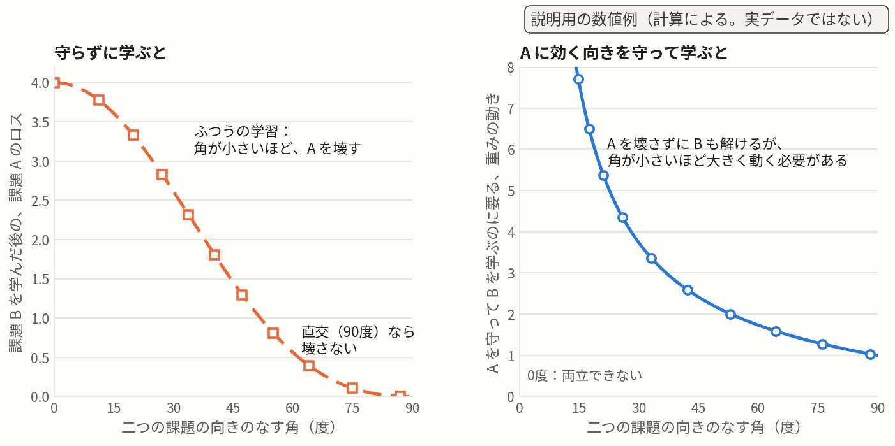
- ψ = 90度（直交）：課題 B の向きは、課題 A の答えに何の影響も与えない。ふつうに学んでも、課題 A は壊れない。二つの課題のフィッシャー情報量の行列 aaᵀ と bbᵀ は可換で、向きごとに分かれる
- ψ = 0度（同じ向き）：二つの課題は、同じ一つの向きに、違う答え（1 と −1）を求めている。どちらかを諦めるか、間を取るしかない。第8章の図8-1で見た「守ることの代償」は、この場合に当たる。1変数の取り合いは、多次元では「同じ向きを取り合う分」に限られる
- その間：二つの行列は可換でない。課題 B をふつうに（勾配の向き b に沿って）学ぶと、b には a の向きの成分があるので、課題 A の答えも動く。学び終えた後の課題 A のロスは (cos ψ (1 + cos ψ))² で、45度で 1.46、15度で 3.61 になる（図発展1-1の左）。一方、課題 A に効く向き a を動かさず、それに直交する向きだけで課題 B を学ぶこともできる。このとき、課題 A を壊さずに課題 B も解ける。ただし、必要な重みの動きは (1 + cos ψ)/sin ψ で、45度で 2.41、15度で 7.6 と、角が小さいほど大きくなる（図発展1-1の右）。大きく動けば、経験の雑音もそれだけ大きく拾う
つまり、多次元では、守るか学ぶかの取り合いは「全部か無か」ではなくなる。取り合いが避けられないのは、同じ向きを違う答えが取り合う分だけである。それ以外は、向きがどれだけそろっているかの幾何の問題になる。第8章の8.3節で「重みの数が多いほど、空いている方向は多い」と書いたのは、この意味である。
深いネットワークでも、条件がそろえば向きごとに学ぶ。 サックスらは、深い線形のネットワーク（各層が線形の多層ネットワーク）の学習の道筋を、厳密に解いた（Saxe, McClelland & Ganguli 2019）。初めの重みが小さく、入力が白色化されている（入力の成分どうしに相関がなく、分散がそろっている）という条件の下では、入力と出力の相関の行列の特異値分解の向き（モード）ごとに、学習が進む。強いモードほど早く、しかも急な段差のように学ばれる。著者たちは、これを子どもの概念の発達の段階になぞらえた。条件が外れれば、モードどうしはつながる。
この節の対応の強さ
- 線形で正規分布の模型の中で、行列が同時に対角化できるなら、向きごとの分解は■式である
- 二つの課題の例は、線形回帰の中での計算である。深いネットワークの破滅的忘却とは、「古い課題に重要な向き」をフィッシャー情報量で測る点で▲構造である（第8章の EWC）
- 深い線形ネットワークの段階的な学習と、子どもの発達の段階の対応は○類比である
発展2 三つの時計を、行列で書く
多次元の三つの成分。 第1章の三つの成分を、ベクトルで書き直す。
世代を越えて変わらない c は、平均のベクトルになる。世代ごとに変わる u は、共分散行列 Σᵤ を持つ。一生の中で動く v は、一歩の動きの共分散行列 Q を持つ。経験の雑音の共分散を R とする。三つの時計は、平均と、二つの共分散行列になる。
生まれたときの最良の推測は c で、初めの不確かさは P₀ = Σᵤ である。三つの行列 Σᵤ、Q、R の向きがそろっているなら、固有ベクトルの向き i ごとに、第1章の分類がそのまま成り立つ。
| 向き i の性質 | 最適な学習率の動き | 第1章の成分 |
|---|---|---|
| Σᵤ の固有値も Q の固有値も 0 | 初めから 0 のまま | c（生まれつき書く） |
| Σᵤ の固有値が正、Q の固有値が 0 | 1/t のように下がり、0 に近づく | u（初めに学んで固める） |
| Q の固有値が正 | 0 にならず、q が r より十分小さければ、およそ √(q/r) に落ち着く | v（学び続ける） |
つまり、c・u・v の分類は、部分ごとではなく、向きごとに行われる。第1章の「c・u・v の割合」は、多次元では、二つの共分散行列の固有値の並び方（スペクトル）になる。
「どの部分が変わるかが決まっているか」の多次元版。 第1章1.3では、配分を決める量の一つとして、どの成分が体のどの部分に乗るかが世代を越えて決まっているかを挙げた。多次元では、これは「Σᵤ と Q の固有ベクトルの向きが、世代を越えて決まっているか」になる。向きが決まっていれば、外側（進化）は、その向きに沿った学習率の行列を書ける。向きが世代ごとに違う（どの向きが変わるかが毎世代引き直される）なら、外側は向きを前もって書けない。個体は、一生の中で、どの向きが変わるのかを見分けなければならない。その間の損が、第5章と第10章の「見分ける間の損」である。このとき、ベイズ最適な学習者は、もはや一つのカルマンフィルタではない。「どの向きが変わる世代か」についての推測も同時に改める、もっと複雑な学習者になる。
曲率は、別の行列である。 多次元の学習でよく言われる「損失の曲がり方（ヘッセ行列やフィッシャー情報量）の大きい向きは固め、小さい向きは動かす」という見方は、注意して使う必要がある。上の表で、何を学ぶべきかを決めているのは、Σᵤ と Q、つまり正しい答えが世代の間でどれだけばらつき、一生の中でどれだけ動くかである。この線形で正規分布の模型では、損失の曲がり方は、一回の経験がその向きについてどれだけの情報をもたらすか（観測の精度 R⁻¹ と、入力がその向きにどれだけ来るか）で決まる。つまり曲率は、Σᵤ や Q の側ではなく、経験の側の量である。経験がその向きをどれだけはっきり教えるか、そして、すでに正しい答えをその向きに動かすと、雑音でどれだけ壊すかを決める。急な向きでも、世代ごとに正しい答えが動くなら、学ぶべきである。最適な学習率の行列 K = P(P + R)⁻¹ は、「まだ知らないこと（P）」と「経験の教えやすさ（R）」の両方で決まる。ただし、曲率と R のこの対応は、線形で正規分布の模型の中のものである。一般の深いネットワークの損失のヘッセ行列やフィッシャー情報量は、パラメータの取り方や尤度の形にもよるので、そのまま R と同じものとは言えない。
実装の制約の値段は、幾何で決まる。 第11章の表では、「全部の部分に共通の学習率」という制約の値段を、生まれつき正しい部分の割合ごとに計算した。同じ条件（一生 50 回、経験の雑音 r = 1）で、答えを二つの部分からなるとし、正しい答えが変わる向きを一つ（ばらつきの大きさ 1）、変わらない向きを一つとする。第11章の「割合 0.5」の場合は、変わる向きが一つめの部分の軸とちょうどそろっている場合に当たる。この変わる向きを、部分の軸から角度 ψ だけ回してみる。
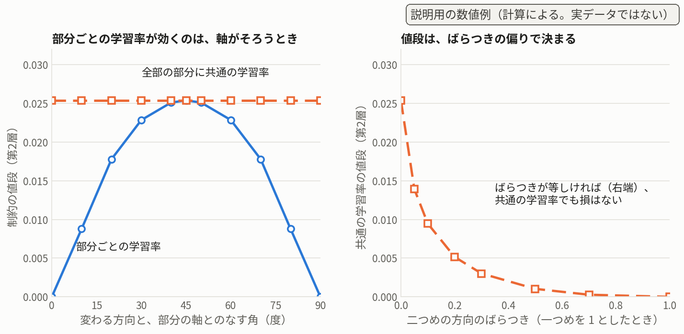
三つの学び方を比べる。値は、第11章と同じく、部分あたりの一生の平均の余分な誤りである。
- 理想の学習者（行列のカルマンフィルタ）：角度によらず、余分な誤りは 0.045 である。理想の学習者は、どの向きにも学習率を合わせられるからである
- 部分ごとの学習率（学習率の行列が対角。時間とともに変えてよい）：変わる向きが部分の軸とそろっていれば（0度、90度）、理想と同じ 0.045 で、制約の値段は 0 である。軸から離れるほど値段は上がり、45度で 0.025 になる（図発展2-1の左の実線）
- 全部の部分に共通の学習率（学習率の行列が単位行列の定数倍）：角度によらず、値段は 0.025 である（左の破線）。回転には強いが、ばらつきの偏りには弱い。二つめの向きのばらつきを 0 から 1 に増やしていくと、値段は 0.025 から 0.0095（ばらつき 0.1）、0.001（0.5）と下がり、二つの向きのばらつきが等しいとき 0 になる（図発展2-1の右）
ここから、二つのことが分かる。
一つは、部分ごとの可塑性が役に立つのは、正しい答えの変わる向きが、ゲノムの書ける「部分」の軸とそろっているときだけだということである。第1章で「天敵の形に反応する回路と、親の顔を覚える回路が、どの個体でも同じ場所にある」ことを条件にしたのは、この意味である。変わる向きが、いくつもの回路にまたがる斜めの向きなら、回路ごとの可塑性では足りない。
もう一つは、第11章の「実装の制約の値段は、世界と組み合わせて初めて決まる」に、幾何の意味がつくことである。制約の値段は、実装が許す学習率の行列の形（対角か、単位行列の定数倍か、低ランクか）と、世界の行列（Σᵤ、Q、R）の固有ベクトルと固有値との、合わなさで決まる。
この節の対応の強さ
- 線形で正規分布の模型の中で、三つの行列による c・u・v の向きごとの分類と、制約の値段の計算は■式である（付録Eのコードで再現できる）
- これを、生物の回路ごとの可塑性や、ゲノムが書ける「部分」に当てはめるのは▲構造である。生物の「部分」が何か（細胞、回路、脳の領域）は、この模型では決まらない
- 「変わる向きを毎世代見分ける」学習者のベイズ最適な形は、この模型の外にある。終章の問い3と、発展編から生まれる問いにつながる
発展3 外側の学習率の行列
自然選択の「一歩」。 第2章2.5では、自然選択は勾配を計算しない、と書いた。一つひとつの個体は、何も計算していない。ところが、集団の平均の動きを見ると、勾配の一歩によく似た形が現れる。
量的遺伝学では、複数の形質の平均 z̄ が、1世代でどれだけ動くかを、次の式で表す（Lande 1979、Lande & Arnold 1983）。
β は選択勾配と呼ばれ、選択が形質の平均を、どの向きにどれだけ押しているかを表すベクトルである（相対適応度を形質に回帰したときの偏回帰係数）。G は、形質の遺伝的な共分散行列である。1変数なら、これは育種家の方程式（応答 = 遺伝率 × 選択差）に戻る。
この式は、第2章の内側の式 w_{t+1} = w_t + H_t g_t と同じ形をしている。G は、外側の最適化の「学習率の行列」に当たる（→付録A-31）▲構造。ただし、二つの点で、勾配による学習とは違う。一つは、G を誰かが設計したのではなく、突然変異と組み換えと選択の結果として、集団が持っている遺伝的なばらつきだということである。もう一つは、この式が成り立つには、形質の分布がほぼ正規分布に従う、選択が弱い、などの仮定が要ることである。
G は、進化の向きを曲げる。 発展1の言葉でいえば、応答 Δz̄ は、選択が押す向き β と、一般には一致しない。G の固有値が大きい向き（遺伝的なばらつきの大きい向き）には速く進み、小さい向きにはほとんど進まないので、応答は、ばらつきの大きい向きへ曲げられる。シュルーターは、近縁の種の間の違いが、こうした「遺伝的に最も抵抗の少ない向き」に沿って生じやすいことを論じた（Schluter 1996）。
学習率の行列を、外側と内側の両方に持つ。 ここで、この本の入れ子に、行列が二つ現れたことに注意しよう。
- 外側の学習率の行列 G：世代をまたいで、ゲノムが選ぶもの（θ）をどれだけ速く、どの向きに動かせるかを決める
- 内側の学習率の行列 H：一生の中で、答え w をどれだけ速く、どの向きに動かせるかを決める。H は θ を通じてゲノムに書かれる
G そのものも、突然変異と選択によって変わりうる。変わりやすさそのものの進化（進化可能性の進化）は、進化を学習の一種として見る議論の中心の問いの一つである（Watson & Szathmáry 2016）。機械学習の側では、第8章の Meta-SGD が、内側の学習率を対角の行列（パラメータごとの学習率）として外側で学んだ。対角に限らず、内側の勾配を変換する行列そのものを外側で学ぶ方法もある（Meta-Curvature、Park & Oliva 2019）。
この節の対応の強さ
- 量的遺伝学の Δz̄ = Gβ と、学習率の行列をかけた勾配の一歩は、式の形が同じである。ただし、G と β の意味と、式が成り立つための仮定が違うので、▲構造とする
- 進化可能性の進化と、メタ学習で学習率の行列を学ぶことの対応は▲構造である（探し方が違う。第2章2.5）
発展4 窓は向きごとに閉じる
確信は、経験した向きにだけ積み上がる。 答えが動かない場合（Q = 0）、行列のカルマンフィルタの不確かさは、次のように更新される（入力 x の向きの経験を、雑音 r で受け取る場合）。
P⁻¹ は確信の強さ（精度）の行列で、経験した入力の向きにだけ増えていく。学習率の行列は、この不確かさ P に沿って決まるので（付録B.3 の H = P/(xᵀPx + r)）、窓は、経験した向きでだけ閉じ、経験しなかった向きでは開いたまま残る■式。第7章7.4で見た、暗い所で育てると視覚野の臨界期が遅れるという観察は、「経験されなかった向きでは窓が閉じない」という見方と、発想が近い○類比。ただし、生物の窓は、特定の回路で、分子のブレーキによって閉じる（第7章）。
射影は、ベイズの更新の極限である。 課題 A の経験が、向き a について n 回あったとする（初めの不確かさは単位行列、雑音 r = 1）。課題 A の後の不確かさは P = (I + n aaᵀ)⁻¹ で、a の向きの不確かさは 1/(1 + n) まで下がり、a に直交する向きの不確かさは 1 のまま残る。次に経験を一つ受けたときの学習率（付録B.3）は、その経験が a の向きなら 1/(n + 2)、a に直交する向きなら 1/2 である。n = 10 で a の向きの学習率は約 0.083、n = 1000 で約 0.001 になる。n を限りなく大きくすると、P は I − aaᵀ、つまり「a に直交する向きへの射影」に近づく。古い課題に重要な向きに直交する向きにだけ更新する継続学習の方法（Farajtabar ら 2020、Saha ら 2021）は、この極限を使っていると読める。ベイズの更新では、学習率は向きごとに連続的に下がる。射影は、その一番端である。
ベイズ最適な学習者は、順番に学んでも忘れない。 答えが動かず（Q = 0）、模型が線形で正規分布で、二つの課題が一つの答えで両立できるなら、課題 A と課題 B の経験を、どちらの順で受けても、最後の推定は同じになる。精度の行列も情報も、足し算で積み上がるだけだからである。つまり、この場合の破滅的忘却は、理想の学習者には起きない。 忘却は、精度の行列を対角で近似したり（第8章の EWC）、精度を持たずにふつうの勾配法で学んだりすることから生じる。第10章の言葉でいえば、損傷は第2層か第3層から生じる、ということの、多次元での具体例である。
低ランクの更新。 第8章8.7の LoRA は、変化 ΔW を、少数の向き（低ランク）に限る。精度の言葉でいえば、「選んだ少数の向き以外の窓を、初めから全部閉じておく」ことに当たる。閉じた向きの答えは壊れないが、開けた向きの外にある正しい答えには届かない。ビダーマンらが測った「学ぶことが少なく、忘れることも少ない」は、この取り合いの実例である（第8章8.7）。
発展編から生まれる問い。 一生の中で、次々と新しい課題が来るとしよう。答えの次元が有限なら、確信の積み上がった向きは、いつか空間の大部分を占める。そのとき、新しい課題を学ぶことは、どの程度、古い答えとの干渉を避けられなくなるのだろうか。そして、それは、生物の可塑性が年齢とともに下がることと、何か関係があるのだろうか。この問いの答えは、まだ見当たらない。終章の問い7として置いた。
この節の対応の強さ
- 精度が経験した向きにだけ積み上がること、射影がベイズの更新の極限であること、ベイズ最適な学習者が順番に学んでも忘れないことは、線形で正規分布の模型の中で■式である
- 継続学習の射影の方法、LoRA との対応は▲構造である
- 生物の臨界期との対応は○類比である
発展5 少ない数で行列を書く
数えてみる。 第9章で見たように、人の脳には約 10¹¹ 個の神経細胞と、約 10¹⁴ 個の結合がある。細胞どうしの結合の強さを、N × N の行列 W（N = 10¹¹）で表すと、その成分は 10²² 個ある（ほとんどは 0 である）。ゲノムの文字は約 3 × 10⁹ 個である。行列を少ない数で書く方法を、いくつか数えてみよう。
| 書き方 | 必要な数 | N = 10¹¹ のとき |
|---|---|---|
| 成分を全部書く | N² | 10²² |
| ランク r の行列 W = UVᵀ（U、V は N × r） | 2Nr | r = 1 でも 2 × 10¹¹ |
| 細胞を K 種類に分け、種類の組ごとに結合の強さを書く | K²（と、各細胞の種類を決める規則） | K = 1000 なら 10⁶ |
| クロネッカー積を k 重に重ねる（W = A₁ ⊗ … ⊗ Aₖ、各 Aᵢ は「N の k 乗根」次の正方行列） | およそ k × N の (2/k) 乗 | k = 4 で約 1.3 × 10⁶ |
| 局所の学習則だけを書く（下の式） | 学習則の係数の数（数個から数十個） | N によらない |
この表から、ランクを下げるだけでは、ゲノムの容量に収まらないことが分かる。ランク 1 でも、細胞ごとの数を書く必要があり、それだけで 10¹¹ 個になる。収まるのは、細胞ごとの数を書かずに、規則から生成する書き方である。細胞の種類ごとの規則、空間の位置の関数（第9章の「位置の滑らかな関数」）、自己相似な規則（クロネッカー積）、そして学習則である。第9章で、ゲノムは「図面ではなく、レシピ」を書く、と言ったのは、この意味である。
学習則も、行列とテンソルで書ける。 神経進化でよく使われる局所の学習則（ABCD 則）は、前の細胞の活動 x と後の細胞の活動 y から、結合の変化を次のように決める。
1 は成分がすべて 1 のベクトルである。係数 η、A、B、C、D の数個で、どんな大きさのネットワークの学習も決まる。第9章の間接符号化（Risi & Stanley）や、ヘッブ則のメタ学習（Palm ら 2021）は、こうした係数を、結合の種類ごと、場所ごとに、少ない数で書く方法である。
LoRA との違い。 第8章8.7の LoRA も「少ない数で大きな行列を書く」が、書く対象が違う。ゲノムのボトルネックが圧縮するのは、初めの結合 W₀ そのもの（と、その学び方）である。LoRA が低ランクに限るのは、事前学習した W₀ からの変化 ΔW である。二つを同じ式とは言えない。
この節の対応の強さ
- パラメータの数え方は、計算そのものである（付録Dの問題で確かめられる）
- ゲノムの書き方と、低ランク・クロネッカー積・ハイパーネットワークとの対応は○類比である。実際のゲノムがどの書き方に近いかは、この本の範囲では分からない（ゲノムのボトルネックの模型の例として、Shuvaev ら 2024）
- LoRA との対応は○類比である
発展6 増殖率の多次元版
二つの賭けに分ける。 第6章では、平均ではなく増殖率で測ると、全部を一つに賭けるより、分けた方が良くなることを見た。これを多次元にしよう。k 個の選択肢（表現型、行動、投資先）に、割合 π₁, …, π_k（合計 1）で資源を分ける。第6章で、表現型の分け方を π と書いたのと同じである。選択肢 i の1世代の倍率を Wᵢ とすると、長期の増殖率は Λ(π) = E[log(πᵀW)] である。揺らぎが小さいとき、第6章の近似の多次元版が成り立つ。
μ は平均の上がり幅（E[W] − 1）のベクトル、Σ は倍率の揺らぎの共分散行列である（μ が小さいとして、μ の二乗の項を省いた）。第2項が、ばらつきの罰である。
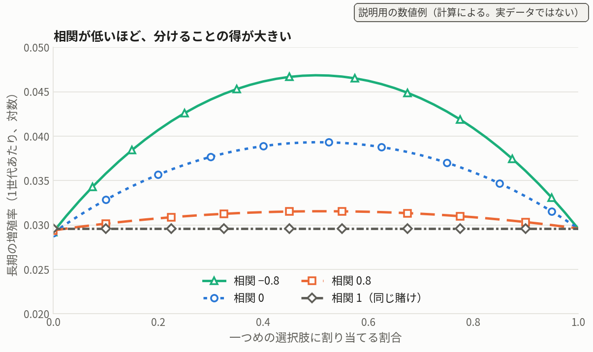
図発展6-1は、平均の上がり幅がどちらも 0.05、揺らぎの標準偏差がどちらも 0.2 の二つの選択肢に、資源を分けた場合の増殖率である（近似ではなく、乱数で直接計算した）。片方に全部を賭けると、増殖率は 0.030 である。半分ずつに分けると、相関 0.8 では 0.032、相関 0 では 0.039、相関 −0.8 では 0.047 に上がる。相関 1（実質的に同じ賭け）では、分けても変わらない。分けることの得は、二つの選択肢の揺らぎの相関が低いほど大きい。 第6章の一年草の例では、眠る種は、年の良し悪しによらず倍率が 1 で、揺らがない選択肢である。揺らがない選択肢と混ぜても、ばらつきの罰は減る。
この近似は、二つの分野をつなぐ。 金融工学では、平均と分散だけで資産の配分を決める方法（Markowitz 1952）と、長期の増殖率を最大にする方法（ケリーの賭け）が、別々に発展した。上の近似は、揺らぎが小さいとき、二つがほぼ同じ答えを出すことを示している。情報理論の教科書は、ケリーの賭けを、多くの資産への配分（対数の最適なポートフォリオ）に広げて扱っている（Cover & Thomas 2006）。
この節の対応の強さ
- 両賭けと対数の最適なポートフォリオは、どちらも E[log(倍率)] を最大にする問題で■式である
- 平均・分散の配分との対応は、揺らぎが小さいときの近似の中で▲構造である
- 機械学習のアンサンブルとの対応は、目的が違う（平均の精度か、全滅の回避か）ので○類比である（第6章）
発展7 損失の会計を、向きごとに
軸がそろえば、会計は向きごとの和になる。 第10章と付録C.6の三つの層は、多次元でも同じように定義できる。さらに、Σᵤ、Q、R の向きがそろい、実装が許す学習率の行列もその向きにそろえられるなら、損失は向きごとの損失の和になり、三つの層もそれぞれ向きごとの和になる。第10章の例（部分の半分が生まれつき正しい）は、二つの向き（学ぶべき向きと、固定の向き）について、層を足したものである。
軸がずれると、会計の割り振りが決まらない。 発展2の図で、変わる向きを部分の軸から 45 度回すと、部分ごとの学習率の制約の値段は 0.025 になった。この 0.025 を、どの向きの損失と呼ぶべきだろうか。部分の軸で見れば、二つの部分がどちらも「少し学ぶべきで、少し固定」である。変わる向きの軸で見れば、学ぶべき向きの遅れと、固定の向きの損傷が混ざっている。合計の 0.025 は決まるが、それを向きごとに割り振る方法は一つに決まらない。
これは、付録C.6の「会計の約束」が、多次元ではもう一つ増えることを意味する。何を神託と理想の学習者に知らせるかに加えて、どの座標で会計をつけるかである。遅れと損傷の現れ方も、座標によって入れ替わる。
発展編から生まれる問い。 三つの層と二つの現れ方の会計を、座標の選び方によらない形で定義できるだろうか。それとも、会計には、いつも座標の約束が要るのだろうか。終章の問い1（損失の会計を作る）の、多次元版の問いである。
この節の対応の強さ
- 軸がそろう場合に、層が向きごとの和になることは、線形で正規分布の模型の中で■式である
- 軸がずれる場合の割り振りの仕方は、この本の議論で、まだ決まっていない
付録A ロゼッタ・ストーン ―― 用語と手法の対応表
本文に出てきた語句と手法を、第2章の式のどの量に当たるかとともに、分野ごとに一覧にした。各行には A-1 から A-32 までの番号をつけた。本文で主な用語が初めて出るところには「（→付録A-8）」のような案内を置いたので、そこから引いてほしい。A.1 は語句と手法の辞書、A.2 はどの定式がどの変数を持つかの一覧である。
A.1 用語と手法の対応
各行が一つの概念、各列が分野である。「第2章の記号」の列は、この本の共通の記号である。右端の「対応」は、分野の間の対応の強さを、本文と同じ印で示す。■式は同じ式で書けるもの、▲構造は同じ構造を持つ別の定式、○類比は発想が近いが同じ定式ではないものである。
| 番号・概念 | 第2章の記号 | 機械学習 | 推定・最適化・制御 | 進化・行動生態学 | 理論生物学 | 発達・神経科学・神経進化 | 対応 |
|---|---|---|---|---|---|---|---|
| A-1 内側のロス ↩ | ℓ_t、g_t = −∇ℓ_t | 損失関数、訓練ロス | 二乗誤差、負の対数尤度 | — | — | 誤差の信号、報酬予測誤差（TD 誤差は半勾配） | ■式（機械学習・統計）、○類比（神経科学） |
| A-2 外側のロス ↩ | −Φ | メタ損失（適応後のロス、累積ロス） | 期待費用、リグレット | 適応度（の符号反転） | 長期の増殖率 Λ（の符号反転） | 成体の適応度 | ▲構造 |
| A-3 成績の集め方 ↩ | Φ_算術、Λ | 期待損失、リスクを考慮した損失（CVaR など） | 期待費用、ケリー基準 | 算術平均・幾何平均の適応度 | 長期の増殖率 | — | ■式（幾何平均の適応度・ケリー基準・Λ）、○類比（CVaR） |
| A-4 内側の最適化 | w ← w + H g | 勾配降下（SGD）、内側ループ | 確率的近似、LMS、カルマンフィルタ | 個体の学習 | — | シナプス可塑性、ヘッブ則 | ■式（機械学習・統計）、○類比（生物） |
| A-5 外側の最適化 ↩ | arg max over θ | 外側ループ、勾配によるメタ学習、進化戦略 | 数理計画法、動的計画法 | 自然選択、選抜実験 | 最適な戦略の解析 | 神経進化（進化計算） | ▲構造（目的は同じ式で書けるが、探し方が違う。第2章2.5節） |
| A-6 初期値 | w₀(θ) | 初期値（MAML）、事前学習した重み | 事前分布の平均、第1段階の決定 | 生まれつきの行動、反射 | 常に構える戦略、親からの継承 | 生得的な結合 | ▲構造 |
| A-7 初期値への確信 ↩ | P₀ の逆 | フィッシャー情報量（EWC）、正則化の強さ | 事前の精度、縮小推定の強さ | — | — | — | ■式（機械学習・統計） |
| A-8 部分ごとの可塑性 ↩ | H の対角 | パラメータごとの学習率（Meta-SGD）、適応的オプティマイザ（AdaGrad、Adam） | 入力ごとの学習率（IDBD）、カルマンの利得 | 準備された学習、環境のカナリゼーション（H が小さい部分） | 病原体ごとの戦略 | 部位ごとの可塑性 | ▲構造 |
| A-9 可塑性の時間変化 ↩ | H_t の t への依存 | 学習率スケジュール（ウォームアップ、減衰）、深層ネットの臨界期 | 学習率の列 aₙ、カルマンの利得の減衰 | 学習期間の長さ、2期の模型 | — | 感受期、臨界期 | ▲構造 |
| A-10 可塑性の経験への依存 ↩ | H_t の 𝒟 への依存 | La-MAML、ANML、ゲーティング | IDBD、適応制御、双対制御 | 学び直し | 感知して切り替える | メタ可塑性、変わりやすさに応じた学習率 | ▲構造 |
| A-11 経験から結果への写像 | 𝒟 → w_T | 適応の写像（初期値と経験 → 適応後のパラメータ） | 推定量（データ → 推定値） | 反応規範 | 手がかりから表現型への方針 | 発達の経路 | ○類比 |
| A-12 戻せない決定 ↩ | ある部分の H を 0 にする | 凍結、微調整で失われる特徴 | 不可逆な投資、オプションの行使、最適停止 | 確かめてから固定する（2期の模型） | — | 臨界期の閉鎖（能動的なブレーキで、実験的には再開できる） | ▲構造 |
| A-13 学んだものを書き込む | u を c として w₀ に移す | 初期値のメタ学習 | — | 遺伝的同化、ボールドウィン効果 | 獲得したものの継承（CRISPR 型） | — | ○類比 |
| A-14 一生の中の目標の動き ↩ | v、q（第3章） | 概念ドリフト、課題の列 | 状態雑音、非定常性 | 一生の中の持続性（の低さ） | 環境の切り替わる速さ | 変わりやすさ（volatility） | ▲構造 |
| A-15 世代の間の変化 ↩ | u | 課題の分布 | 事前分布の幅、第2段階で明らかになる不確かさ | 世代の間の持続性、最良の行動の固定性 p_fix | 環境の統計 | — | ▲構造 |
| A-16 経験の信頼性 ↩ | r | ラベルの雑音 | 観測雑音 | 経験の信頼性 p_cue（第5章） | 手がかりの信頼性、知覚の雑音 | 手がかりの信頼性 | ▲構造 |
| A-17 観察の費用（遅れ。損失の現れ方の一つで、原因は第1〜3層のどれにもなりうる） ↩ | 第3章の前提を外すと生じる | 探索と活用 | 探りの費用、待つ間の損 | 確かめることの機会費用 | 感知の費用 | — | ▲構造 |
| A-18 後から調整する費用 ↩ | 𝓡（第4章） | — | リコースの費用 | 学習の費用 | — | — | ○類比 |
| A-19 学習による損傷（学習則の干渉で、すでに正しかった答えを不必要に壊すこと。最適な忘却は含まない。→A-28） ↩ | — | 破滅的忘却、特徴の歪み | — | — | — | 安定性と可塑性のジレンマ | ▲構造 |
| A-20 損傷を防ぐ方法 ↩ | 重要な部分の H を下げる | EWC、リプレイ、La-MAML、LP-FT | — | — | — | 相補的学習システム（海馬と新皮質）、睡眠中などの再生、長く保たれる棘（スパイン）、干渉を防ぐ回路のモジュール性・位置に限った神経修飾（神経進化） | ○類比 |
| A-21 可塑性を保つ費用 ↩ | — | —（計算量は通常数えない） | オプションを保つ費用 | 学習の費用 | 防御を保つ費用 | — | ▲構造 |
| A-22 個体の間でばらつかせる ↩ | 方針 π | アンサンブル | — | 両賭け | 両賭け、確率的な切り替え | — | ○類比 |
| A-23 書き方の制約 ↩ | θ の次元が小さい | ハイパーネットワーク、パラメータの共有 | — | — | — | 間接符号化、ゲノムのボトルネック | ○類比 |
| A-24 経験の前の準備 ↩ | — | 教師なしの事前学習、自己組織化地図（どちらも世界のデータで学ぶ点が、自発活動と違う） | — | — | — | 自発活動、網膜波、活動依存の地図形成 | ○類比 |
| A-25 知らないことの損失（第1層） | 神託と理想の学習者の損失の差（第10章、付録C.6） | 情報の欠如による誤差（ベイズ誤差に近い） | 完全情報の期待値（EVPI） | 手がかりのない系統が失う増殖率（最も単純な場合は 𝓗(E)） | 情報の価値 | — | ■式（二段階の決定と最も単純な両賭けの場合） |
| A-26 届かないことの損失（第2層） | 理想の学習者と、Π の中の最良の差 | 近似誤差（モデルの表現力の不足） | 制約つき最適化の最適値と無制約の差 | 生活史・生理・発生の制約による最適からのずれ | — | ゲノムのボトルネック、配線の制約 | ▲構造 |
| A-27 取り逃がし（第3層） | Π の中の最良と、実際の学習者の差 | 推定誤差、最適化誤差 | 推定誤差、収束の遅れ | 探索の不足、有限集団による浮動 | — | 局所最適、探索の失敗 | ▲構造 |
| A-28 最適な忘却 | 世界が変わったときに、古い答えを手放すこと | 忘却の制御、減衰（これは損傷ではない） | 忘却係数、過去の重みの減衰 | 学習した行動の消去 | — | — | ▲構造 |
| A-29 重みを変えない適応 ↩ | π を活動の状態で作る（第2章2.7、第8章8.7） | 文脈内学習、記憶に基づくメタ学習、メサ最適化 | 状態の推定（フィルタ） | — | — | 前頭前野のメタ強化学習（仮説）、作業記憶 | ▲構造 |
| A-30 方向ごとの可塑性 ↩ | 行列の H、P の固有方向（付録B.3、発展1・2・4） | 直交部分空間での継続学習、LoRA、固有次元 | 行列のカルマンの利得 | — | — | — | ■式（カルマンフィルタの中）、▲構造（機械学習の手法との間） |
| A-31 外側の学習率の行列 ↩ | θ の動きやすさ（発展3） | 学習率の行列のメタ学習（Meta-Curvature） | 前処理つきの勾配法 | 遺伝的な共分散行列 G（Δz̄ = Gβ）、進化可能性 | — | — | ▲構造 |
| A-32 他者から学ぶ ↩ | w₀ を他者の答えから作る（第1章1.5、第5章5.6） | 模倣学習、知識の蒸留 | — | 社会学習、文化の伝達、二重継承理論 | 親からの継承（CRISPR 型） | 観察による学習 | ○類比 |
この本の記号の一覧は、第2章2.8にある。原論文の記号がこの本の共通の記号と違うときは、共通の記号に書き換えた。主な書き換えは、Dunlap & Stephens の固定性 p と信頼性 q を p_fix と p_cue に（第3章の目標の動きの分散 q と区別するため）、Meta-SGD と EWC の重み θ を w に（第2章の θ は外側が決めるもの）、である。二つのベクトルのなす角は ψ と書く。各章の式の中の α・β・η・λ などの文字は、その章の中だけの意味で使っている。
A.2 どの定式がどの変数を持つか
○は持つ、△は一部、—は持たない。原論文の本文と要旨による判定である。第4章の最適化・制御・意思決定理論の定式と、第9章の一部の神経進化の研究は、この表では扱わない。
| 変数 | Stephens・Dunlap | Rivoire & Leibler | Mayer ら | Frankenhuis ら | Kozielska & Weissing | Meta-SGD・可塑性の学習 | La-MAML・ANML | Risi & Stanley・Palm ら |
|---|---|---|---|---|---|---|---|---|
| 一生の中の変化 | ○ | — | ○ | ○ | — | — | ○（課題の列） | △ |
| 世代の間の変化 | ○ | ○ | ○ | ○ | ○ | ○（課題の分布） | ○ | △ |
| 経験の信頼性 | ○ | ○ | — | ○ | — | — | — | — |
| 部分ごとの可塑性の配分 | △（感覚ごと、2014） | — | △（病原体ごとに独立） | — | — | ○ | ○ | ○ |
| 部分どうしの干渉 | — | — | — | — | — | — | ○ | — |
| 時間とともに変わる可塑性 | △（2期） | — | — | ○ | ○（学習期間） | — | — | — |
| どの部分が変わるかを前もって知れるか | — | — | — | — | — | △（課題の分布に暗に含まれる） | △ | — |
| 観察の費用・遅れ | ○ | ○ | ○ | ○ | ○ | — | — | — |
| 可塑性を保つ費用 | ○（学習の費用） | — | ○ | — | — | — | — | — |
| 外側の書き方の自由度の制約 | — | — | — | — | — | — | — | ○ |
| 経験の前の自己組織化 | — | — | — | — | — | — | — | ○（2014） |
| 準備期間の時間の費用 | — | — | — | — | △（学習期間を進化させる） | — | — | — |
| 個体の間でばらつかせる戦略 | — | ○ | ○ | — | — | — | — | — |
| リスク（幾何平均・増殖率） | ○（Dunlap） | ○ | ○ | — | — | — | — | — |
| 複数の目的 | — | — | △（費用と防御） | — | — | — | ○（古い課題と新しい課題） | — |
どの列も、表の変数の一部しか持たない。とくに、「部分ごとの可塑性の配分」「部分どうしの干渉」「時間とともに変わる可塑性」「リスク」の四つを同時に持つ定式は、この表の中にはない。
付録B 数式の補足
B.1 確率的近似の条件（Robbins & Monro 1951）
観測 Yₙ が、未知の関数 M(x) に雑音を加えたもので、M(x) = α となる点 x* を求めたいとする。次の更新を考える。
観測が有界で、M(x) が x* の両側で α からはっきり離れており、aₙ が Σaₙ = ∞ と Σaₙ² < ∞ を満たせば、xₙ は x* に二乗平均で収束する（原論文の定理1）。第3章の平均の更新は、aₙ = 1/n の場合に当たる。
B.2 学習率を一定に保ったときの、雑音と遅れの取り合い
スカラーで、答え w* が一歩ごとに分散 q で動き、観測 y が分散 r の雑音を含むとする。学習率 η を一定に保つ更新 w_{t+1} = w_t + η(y_t − w_t) の誤差 e_t = w_t − w*_t は、次のように進む。
v_t は誤差の分散である。定常の分散と、η が小さいときの近似は次のとおりである。
近似の式を η で微分して 0 とおくと η* = √(q/r) が得られる。q = 0 なら、v_∞ は η に比例し、最適な η は 0 に向かう。第10章の損傷の式は、q = 0 で、初めの誤りが 0 の場合に当たる。
B.3 カルマンフィルタ（行列の場合）
答え w* が多くの部分からなり、観測が y_t = x_tᵀ w* + ε_t（入力 x_t はベクトル）の場合、カルマンフィルタは次のようになる。P_t は不確かさを表す行列（共分散行列）、Q は答えの一歩あたりの動きの共分散行列である。
利得 K_t は、部分ごとの学習率をまとめたベクトルである。P_t が対角行列で、入力の成分どうしに相関がなければ、部分 i の学習率は、その部分の不確かさ Pᵢᵢ で決まる。P_t に非対角の成分（部分どうしの不確かさの相関）があると、ある部分の誤差が、別の部分の推定にも影響する。
一般の場合は、P_t の固有ベクトルを軸に取り直すとよい。その座標では P_t は対角になり、固有値が小さい方向（確信の強い方向）ほど、利得が小さくなる■式。つまり、窓は「部分ごと」ではなく「方向ごと」に閉じる。本文の「部分ごとの可塑性」は、この方向がたまたま一つひとつの部分（座標軸）と一致している場合である。Q = 0 なら、一度確信の強くなった方向の利得は、その後も小さいまま戻らない。
第2章の内側の式 w_{t+1} = w_t + H_t g_t と比べると、二乗のロス ℓ = ½(y − xᵀw)² の勾配の向き g_t = (y_t − x_tᵀw_t)x_t に、行列の学習率 H_t = P_t /(x_tᵀP_t x_t + r) をかけた更新になっている。
B.4 定常のカルマンの利得（スカラー）
スカラーで、x = 1 とする。予測の分散 P は、P_{t+1} = (1 − K_t)P_t + q、K_t = P_t /(P_t + r) で進む。定常では P̄ = P̄r/(P̄ + r) + q なので、
q ≪ r なら P̄ ≈ √(qr) で、K_∞ = P̄/(P̄ + r) ≈ √(q/r) になる。B.2 の η* と一致する。
B.5 ケリーの賭けと、相互情報量
環境 e が確率 P(e) で現れ、表現型 φ = e の個体だけが f_e 倍に増えるとき、子の割合 π で表現型を分ける系統の増殖率は Λ(π) = Σ P(e) log(π(e) f_e) である。Σπ(e) = 1 の制約の下で最大にする。ラグランジュの未定乗数 λ を使うと、
したがって Λ* = Σ P(e) log f_e + Σ P(e) log P(e) = Σ P(e) log f_e − 𝓗(E) である。手がかり c を見てから分け方を決められるなら、各 c について同じ計算をして π*(e | c) = P(e | c) を得る。
二つの差は 𝓗(E) − 𝓗(E | C) = I(E; C)、つまり手がかりと環境の相互情報量である。
B.6 準備の時間の限界価値
準備に時間 T_prep を使うと、成績の上がり幅が D(1 − e^{−T_prep/τ}) で飽和し、一生 T のうち、時間 T_prep の分だけ成績を上げる機会を失う（1 単位あたりの重さを k とする）とする。得は 得(T_prep) = D(1 − e^{−T_prep/τ}) − kT_prep/T である。
二階の微分は −(D/τ²)e^{−T_prep/τ} < 0 なので、これは最大である。T*_prep の T、D、k への依存は、どれも対数を通じてだけ現れる。
τ が T によらないなら、T*_prep は ln T の一次式（傾き τ）である。τ が T に比例して伸びる（τ = aT、a は比例の定数）なら、T*_prep = aT ln(D/ka) となり、T*_prep は T に比例して延びる。
付録C この本で使う数学の道具と、損失の会計
本文と「数式で見る」で使う道具を、短くまとめる。C.1〜C.5 は、どれも、理系の大学1年生が最初の一年で出会う内容である。C.6 は、第10・11章で使う「損失の三つの層」の厳密な定義で、この本の中では最も抽象的な部分である。C.7 は、発展編で使うベクトルと行列の初歩で、大学1年の後期に線形代数で習う内容である。
C.1 期待値と分散
確率的に値が決まる量（確率変数）X の期待値 𝔼[X] は、値を確率の重みで平均したものである。分散 Var(X) は、値が期待値のまわりにどれだけ散らばるかを、差の二乗の期待値で測ったものである。
この本では、「誤りの大きさ」を、答えと正しい答えの差の二乗の期待値（平均二乗誤差）で測ることが多い。独立な雑音の分散は足し算になる。第3章の「一歩ごとに分散 q で動く」答えは、t 歩の後には、出発点から分散 qt だけ散らばる。
C.2 対数と、掛け算の平均
系統の数は、年ごとの倍率の掛け算で決まる。倍率 W₁, W₂, …, W_G を掛けたものの長期の伸びは、対数の平均で測るのが自然である。
Λ は、倍率の幾何平均の対数である。一つでも W_g = 0 があれば、log 0 = −∞ なので、Λ は −∞ になる。算術平均（足して割る）では、一つの 0 は、ほかの大きな値で埋め合わせられる。第6章の、平均で測るか増殖率で測るかの違いは、ここから来る。
C.3 勾配降下
関数 ℓ(w) を小さくする w を探すとき、今の w で関数が最も速く減る向き（負の勾配 −dℓ/dw）に、少しだけ動かすことを繰り返す。
η が学習率である。η が大きいと速く動くが、行き過ぎたり、雑音に振り回されたりする。小さいと着実だが遅い。w が多くの成分を持つときは、成分ごとの偏微分を並べた勾配ベクトルの逆向きに動かす。成分ごとに違う η を使うのが、この本でいう「部分ごとの可塑性」である。
C.4 ベイズの規則と、正規分布
ある量 w について、データ y を見る前の見込みを事前分布 p(w)、データを見た後の見込みを事後分布 p(w | y) と呼ぶ。二つは、ベイズの規則で結ばれる。
p(y | w) は、w が正しいとしたときに、データ y が得られる確率（尤度）である。
正規分布 𝒩(m, P) は、平均 m のまわりに、分散 P の広がりで釣り鐘の形に分布する。事前分布も尤度も正規分布なら、事後分布も正規分布になり、平均と分散の二つの数だけで表せる。このとき、事後分布の平均は「事前の平均」と「データ」の重みつき平均になり、データの重みが、第3章のカルマンの利得である（第11章の「数式で見る」）。分散の逆数（精度）は、データを一つ見るたびに、データの精度の分だけ足し算で増える。
C.5 エントロピーと相互情報量
環境 E が確率 P(e) でいくつかの状態をとるとき、そのエントロピーは、どの状態になるかの不確かさの大きさである。
手がかり C を見た後に残る不確かさを 𝓗(E | C) と書く。手がかりを見ることで減った不確かさが、相互情報量である。
手がかりが環境とまったく無関係なら I = 0、手がかりを見れば環境が完全に分かるなら I = 𝓗(E) である。第6章では、最も単純な場合に、手がかりの価値が、増殖率の単位でちょうどこの量になることを見た。
C.6 損失の3層分解
第10章の「理想と現実のギャップ」と、第11章の三つ目の理由を、式で定義する。この節は、本書の中で最も抽象的な部分である。第10章の数値例（図10-2）と並べて読むと分かりやすい。
三つの方策の集合。 学習者の方策（学び方）を π と書く。方策は、各時点で、そのとき使ってよい情報から答え（行動）を決める規則である。π を使ったときの一生の期待損失を L(π) とする（成績の集め方 Φ を使うなら、L = −Φ）。使ってよい情報の違いによって、三つの方策の集合を考える。
- Π_oracle（神託の方策）：各時点で、答えを決める前に、それまでの経験の履歴に加えて、その時点の環境の状態を使ってよい。環境の状態とは、その世代・その時点で実現した値のことで、第1章の u・v の今の値、第4章なら雨が降るかどうか、といったものである。どの部分が変わるかが世代ごとに違う世界では、それも状態に含む。一方、世代を越えて決まっていること（c の位置と値、u のばらつき方など）は、環境の分布 P_E の一部であり、理想の学習者も知ってよい。この区別は、第10章の数値例で重要になる。ただし、将来の環境の揺らぎ（v の次の一歩、来年の天気）と、結果に乗る雑音（観測の雑音）は使えない
- Π_ideal（理想の方策）：それまでの経験の履歴だけを使ってよい、あらゆる規則。何を観察するかを選ぶことも含む
- Π（実装の方策）：実際に許される規則。ゲノムの容量、局所的な学習則、記憶の容量などの制約の下で書けるもの
使ってよい情報が多いほど、選べる方策は多い。だから、三つの集合は入れ子になる。
それぞれの集合の中で最良の損失を、次のように書く。inf は「下限」（最小値に当たるもの）である。
L*_ideal を与える学習者が、本文でいう「ベイズ最適な学習者」である。会計全体の原点は神託の L*_oracle で、ベイズ最適な学習者は第1層の終点、つまり第2層と第3層を測り始める基準点に当たる。逐次に観察し、何を観察するかも選べる問題なので、これは一回きりの決定の「ベイズリスク」ではなく、ベイズ適応的な意思決定問題の最適値に当たる。
分解。 実際の学習者の方策 π が Π に入っているとき、その損失と神託の損失の差は、三つの層に分かれる。
| 層 | 本文での呼び名 | やさしい言い方 |
|---|---|---|
| 第1層 情報のギャップ | 知らない | 世界について知らないから失うもの |
| 第2層 実現可能性のギャップ | 届かない | 体・回路・アルゴリズムの制約のため、届かないもの |
| 第3層 獲得のギャップ | 取り逃がし | 届くはずの最良を、実際には手にできなかったもの |
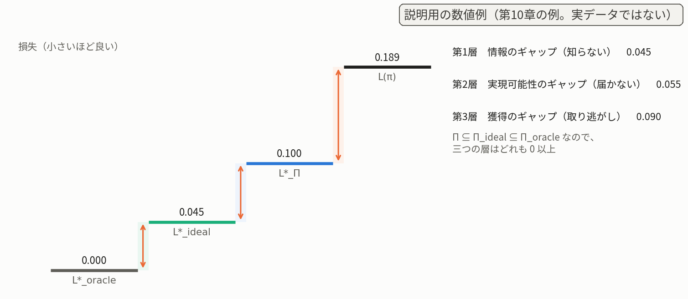
三つの性質。 集合の入れ子から、すぐに次のことが分かる。
- 三つの層は、どれも 0 以上である。 広い集合の最良は、狭い集合の最良より悪くならないからである
- 第1層は、Π に依存しない。 Π_ideal と Π_oracle だけで決まる
- 第2層は、Π を広げると、必ず減るか変わらない。 一方、第3層には、そのような決まった向きがない。 Π を広げると、選べる候補が増えて最良を見つけにくくなることも、逆に見つけやすくなることもある
既存の概念との対応。
| 層 | 対応する既存の概念 | 対応の強さ |
|---|---|---|
| 第1層 | 二段階の決定（第4章）で、神託が知る状態を第2段階の不確かさ ξ とすると、完全情報の期待値 EVPI に一致する。傘の例では 100 − 30 = 70 | ■式 |
| 第1層 | 逐次の問題では、ベイズ適応的な問題の最適値と、状態を知る方策の最適値の差 | ▲構造 |
| 第2層 | 学習理論の近似誤差（関数の族の中の最良と、全体の最良の差） | ▲構造 |
| 第3層 | 学習理論の推定誤差と最適化誤差を合わせたもの | ▲構造 |
| 三つの層の全体 | バイアス・バリアンス分解。雑音の項は神託の損失（原点）の側に入り、偏りとばらつきは三つの層にまたがる | ○類比（切り方が違う） |
学習理論には、余分な誤差を「近似誤差＋推定誤差＋最適化誤差」の三つに分ける見方がある（Bottou & Bousquet 2008）。ただし、この分解は、全体で最良の関数（ベイズ最適な関数）を出発点にしていて、第1層に当たる項を持たない。本書の3層は、それに第1層を加えたものである。また、生物学の機会費用と機械学習の破滅的忘却を、この3層の会計と、遅れ・損傷という「現れ方」の軸の上に並べて読むことは、本書の議論である。
第3層が生じる典型的な機序。 第3層には、有限の経験からの推定による取り逃がし（世代や課題の数が有限なので、環境の分布を正確に知れない）、探索や最適化による取り逃がし（外側の探索の不足、最適化の失敗、学習率などの設定のずれ）、環境の変化への追従による取り逃がしなどがある。ただし、これは排他的な数学的分解ではなく、第3層が生じる典型的な機序の整理である。とくに、環境の変化への追従の不足は、世界 P_E の性質（環境が定常でないこと）でもあり、それがどの層に計上されるかは、Π_oracle と Π の定義によって変わりうる。
層と座標は一対一ではない。 各層は、第2章の座標のどれかに主に由来する。第1層は主に世界（P_E・T）から、第2層は主に実装（Π）の制約から生じる。しかし、各層の大きさは、世界・価値・実装の組み合わせで決まる。 とくに、実装の制約の値段は、世界と組み合わせて初めて決まる。第10章と同じ条件（一生 50 回、観測雑音 r = 1）で、「全部の部分に共通の学習率。ただし時間とともに変えてよい」という制約の値段（第2層）を計算した結果は、第11章 11.4 の表にある（生まれつき正しい部分の割合が 0、0.5、0.9 のとき、第2層は 0.000、0.025、0.028）。この例では神託の損失が 0 なので、第1層は理想の学習者の損失に等しい（0.090、0.045、0.009）。同じ制約が、全部の部分が同じ性質の世界ではまったく損にならず、部分の性質が分かれている世界では損になる。
二重降下について。 現代の機械学習では、モデルの容量（パラメータの数）を増やしていくと、テストでの誤差がいったん大きくなった後に、再び小さくなる「二重降下」が知られている（Belkin ら 2019）。3層の言葉では、Π を広げると第2層は必ず減るか変わらないが、第3層には決まった向きがない。したがって、テストでの性能の観察だけからは、第2層と第3層のどちらがどれだけ変わったのかは分からない。生物の側では、ゲノムの容量や回路の自由度を広げたときに、各層がどう動くかは、ほとんど分かっていない。
系統（両賭け）の場合と、単位。 成績の集め方 Φ が対数の増殖率で、学習者が系統の戦略になる場合（第6章）を考える。最も単純な場合、つまり環境に合った表現型だけが f_e 倍に増える場合には、各世代の環境を知っている神託の系統の増殖率は Σ P(e) log f_e である。理想の系統（環境の確率どおりに子をばらつかせる）の増殖率は、それから環境のエントロピー 𝓗(E) を引いたものである（付録B.5）。したがって、第1層はちょうど 𝓗(E) になる。 手がかり C を見てから分け方を決められるなら、第1層は 𝓗(E | C) に減り、減った分が相互情報量 I(E; C) である■式。
ここで単位に注意する。増殖率を自然対数で測れば、第1層は nats（ナット）で、底2の対数で測れば bits（ビット）で表される。増殖率は「1世代あたり、数が何倍になるか」の対数であり、エントロピーも確率の対数の平均なので、どちらも同じ対数の単位を持つ。だから、情報の量と、増殖率の損失を、同じ物差しで比べられる。第6章は自然対数を使っているので nats である（ケリーの原論文は底2を使い、bits で書いている）。
会計の約束。 分解の数値は、二つの約束に依存する。
- Π_oracle に何を知らせるか。 知らせる情報を変えれば L*_oracle が変わり、第1層の大きさが変わる。本書では、上で定義したとおり「その時点の環境の状態は知らせるが、将来の揺らぎと結果の雑音は知らせない」と約束する
- Π_ideal をどこまで広く取るか。 物理的な条件を Π_ideal に含めるかどうかで、第1層と第2層の境目が動く
また、何を「状態」とし、何を「環境の分布」とするかでも、第1層の大きさは変わる。第10章の例では、固定成分の位置と値は世代を越えて決まっているので、環境の分布の一部として理想の学習者も知っている。固定成分の位置が世代ごとに変わる世界なら、それは状態になり、理想の学習者はそれを経験から見分けなければならないので、第1層は大きくなる
例えば、遺伝的浮動（集団が有限なために、有利でない変異が偶然に広まること）による損失は、会計の約束によって入る層が変わる。有限の集団で実際に起きた進化の過程を π とし、Π の中にある最良の進化の戦略と比べるなら、遺伝的浮動による損失は第3層に入る。有限の集団の大きさそのものを制約として Π に含め、理想と比べるなら、第2層に入る。どちらが正しいということはない。層の境目は、何を基準に選ぶかで決まる。
また、遅れと損傷という「現れ方」の分け方は、本書の数値例では一意に決まる（初めの誤りが減っていく部分と、雑音による揺らぎの部分）が、一般には一意に決まらない場合がある。3層の会計と、遅れ・損傷の現れ方は、別の軸として使う。
C.7 ベクトルと行列の初歩：お椀の軸
発展編では、答えが多くの部分からなる場合を扱う。そのための道具を、図で直感がつかめる範囲でまとめる。
内積と射影。 二つのベクトル x と y の内積は x·y = Σ xᵢyᵢ = |x||y| cos ψ で、ψ は二つのなす角である。内積が 0 なら、二つは直交している。長さ 1 のベクトル a の向きに x が落とす影は (a·x)a で、これを a への射影と呼ぶ。行列で書くと aaᵀx で、残りの I − aaᵀ は「a に直交する向きへの射影」である。
二次形式は、お椀である。 対称な行列 A について、f(x) = ½ xᵀAx を二次形式と呼ぶ。2変数なら ½(A₁₁x₁² + 2A₁₂x₁x₂ + A₂₂x₂²) である。A が正定値（どの向きにも上に開く）なら、f はお椀の形をしていて、その等高線は楕円になる。二乗誤差の和、正規分布の指数の中身、EWC の罰則は、どれもこの形をしている。
固有ベクトルは、お椀の軸である。 Av = λv を満たす v を固有ベクトル、λ を固有値と呼ぶ。お椀の言葉では、固有ベクトルは楕円の軸の向き、固有値はその向きの急さである。対称な行列の固有ベクトルは、互いに直交する。例えば A = [[2, 1], [1, 2]] の固有ベクトルは (1, 1)/√2 と (1, −1)/√2 で、固有値は 3 と 1 である。斜め 45度の向きが急で、それに直交する向きがゆるやかなお椀である。
対角化：軸を回せば、お椀は軸ごとに独立になる。 対称な行列は、固有ベクトルを並べた直交行列 Q で A = QΛQᵀ と書ける（Λ は固有値を並べた対角行列）。座標を z = Qᵀx に取り直すと、f = ½ Σ λᵢzᵢ² となり、お椀は軸ごとの1変数の式の和になる。本文の1変数の式を、この z の一つひとつに当てはめられるかどうかが、発展編の出発点である。
二つのお椀の軸がそろうとき。 二つの対称な行列 A と B が、同じ直交行列 Q で同時に対角化できるのは、AB = BA（可換）のとき、またそのときに限る。お椀の言葉では、二つのお椀の軸の向きがそろっている、ということである（図C-2の左）。軸がずれていると（図C-2の右）、どちらか一方の軸で座標を取っても、もう一方のお椀は軸ごとに分かれない。
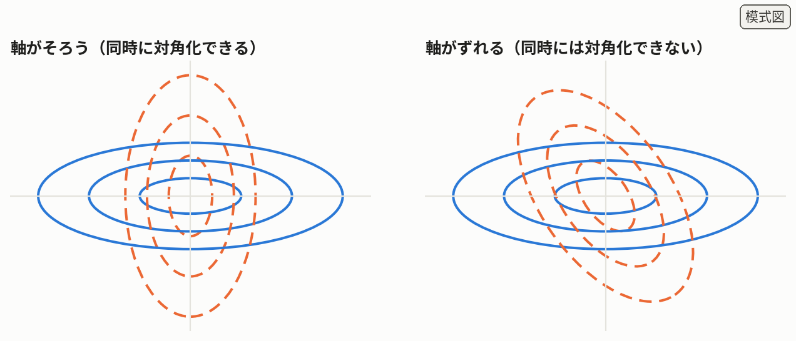
共分散行列。 ベクトルの値をとる量 x のばらつきは、共分散行列 Σ = E[(x − μ)(x − μ)ᵀ] で表す。その固有ベクトルは、ばらつきの主な向き（主成分）で、固有値は、その向きのばらつきの大きさである。
ランクと零空間。 行列 A のランクは、A が実際に「効いている」向きの数である（対称な行列なら、0 でない固有値の数）。Ax = 0 となる x の集まりを零空間と呼ぶ。お椀の言葉では、底が平らで、動かしても f が変わらない向きである。
付録D 確かめ問題と答え
本文と発展編の内容を、自分の手で確かめるための問題である。D.1 は段1（本文と「数式で見る」）、D.2 は段2（付録C.7と発展編）に当たる。答えはどれも、電卓か、付録Eの短いコードで確かめられる。答えは D.3 にまとめた。先に答えを見ずに、まず自分で計算してほしい。
D.1 本文の問題
第1章
- u のばらつき（分散）が σᵤ² = 0.36、v が一歩ごとに分散 q = 0.0036 で動くとする。一生の中で積み上がる v の不確かさ q t が、生まれたときの u の不確かさ σᵤ² に並ぶのは、何歩目か。
- 次の三つは、c・u・v のどれに近いか。天敵の形、生まれた土地で話される言葉、その日の餌場。
第2章
- 内側の式 w_{t+1} = w_t + H(y − w_t)（入力 x = 1 の LMS）で、w₀ = 0、H = 0.5、正しい答えを y = 2（雑音なし）とする。w₁ と w₂ を求めよ。
- ある個体の一生の各時刻の誤りが 1、0.5、0.25、0.25 だった。適応後のロスと、累積ロス（時刻あたりの平均）を求めよ。
第3章
- P₀ = 1、r = 1、q = 0 のとき、カルマンの利得 K₀〜K₃ を求めよ。
- q = 0.01、r = 1 のとき、学習率はどの値に落ち着くか。近似の √(q/r) と、正確な値の両方を求めよ。
第4章
- 図4-1の傘の例で、雨の確率を 0.5 に変える（傘を持つ手間 100、降ってから買う費用 500 はそのまま）。持って出るべきか。EVPI はいくらか。
第5章
- 最良の行動の固定性 p_fix = 0.7、経験の信頼性 p_cue = 0.8 のとき、Dunlap & Stephens (2009) の模型では、学習と学ばない好みのどちらが有利か。
- スティーブンスの模型で、学習が有利になるかを決めるのは、二つの持続性のどちらか。
第6章
- 図6-1の例で、良い年の確率を 0.6 に変える（良い年の倍率 3、悪い年は全滅、眠る種は倍率 1）。増殖率を最大にする芽生えの割合 g を求めよ。
- 二つの環境が確率 1/2 ずつで現れ、手がかりが環境を完全に教えるとき、手がかりによる増殖率の上がり幅は、何 nats か。
第7章
- P₀ = 4、r = 1、q = 0 のとき、手がかり 0 個目と 8 個目の可塑性（カルマンの利得）を求めよ。
- q = 0.02、r = 1 のとき、可塑性はどの値に落ち着くか（図7-1の緑の線）。
第8章
- EWC で、ある重みの精度（λFᵢ）が 4 だったとする。雑音 r = 1 の経験を一つ受けたとき、カルマンフィルタの言葉で、この重みの学習率はいくらか。
第9章
- ゲノムの約 3 × 10⁹ 文字（1文字 2 ビット）と、10¹⁴ 個の結合を一つずつ指定する情報量（1結合あたり log₂ 10¹¹ ビット）を比べ、何倍違うかを求めよ。
第10章
- すでに正しい部分を、学習率 η = 0.3、雑音 r = 1 で動かし続けると、損傷の大きさ v∞ はいくらに落ち着くか。
- 準備の時間の式 T*_prep = τ ln(DT/kτ) で、τ = 1、D = 1、k = 1 とする。一生 T = 100 と T = 1000 のときの T*_prep を求めよ。
第11章
- 第11章の表で、生まれつき正しい部分の割合が 0.9 のとき、共通の学習率を使う最良の学習者の余分な誤りはいくらか。
- 実装の範囲 Π を広げると、第2層と第3層はそれぞれどうなるか。
D.2 発展編の問題
付録C.7・発展1
- 行列 A = [[2, 1], [1, 2]] の固有値と固有ベクトルを求めよ。どの向きが急なお椀か。
- 発展1の二つの課題の例で、なす角が 60 度のとき、課題 B をふつうに学んだ後の課題 A のロスと、課題 A を守って課題 B を学ぶのに要る重みの動きを求めよ。
発展2
- Σᵤ の固有値が (1, 0)、Q の固有値が (0, 0.01) で、向きがそろっているとする。二つの向きは、それぞれ c・u・v のどれに当たるか。
- 発展2の例で、変わる向きを部分の軸から 45 度回したとき、部分ごとの学習率と、全部に共通の学習率の制約の値段が同じになるのはなぜか（付録E-6のコードで値も確かめよ）。
発展3
- 1変数で、G = 0.4、表現型の分散 P = 1、選択差 S = 0.5 のとき、選択勾配 β と応答 Δz̄ を求めよ。
- G = [[1, 0.8], [0.8, 1]]、β = (1, 0) のとき、応答 Δz̄ を求め、選択の押す向きから何度曲げられるかを求めよ。
発展4
- 課題 A の経験が向き a について 10 回あった（初めの不確かさは単位行列、r = 1）。次に課題 B の経験を一つ受けるとき、それが a の向きの経験なら学習率はいくらか。a に直交する向きの経験ならどうか。
発展5
- 細胞を 1000 種類に分け、種類の組ごとに結合の強さを一つずつ書くと、いくつの数が要るか。クロネッカー積を 4 重に重ねる書き方（N = 10¹¹）では、およそいくつか。
発展6
- 平均の上がり幅がどちらも 0.05、揺らぎの標準偏差がどちらも 0.2、相関 0 の二つの選択肢がある。近似式で、片方に全部賭けたときと、半分ずつに分けたときの増殖率を求めよ。
- 相関が −1 なら、半分ずつに分けたときの増殖率は、近似式でいくらか。
発展7
- 発展2の45度の例で、制約の値段 0.025 を「学ぶべき向き」と「固定の向き」に割り振る方法が一つに決まらないのはなぜか。
D.3 答え
第1章 1. t = 0.36 / 0.0036 = 100 歩目。 2. 天敵の形は c、生まれた土地の言葉は u、その日の餌場は v。
第2章 1. w₁ = 1、w₂ = 1.5。 2. 適応後のロスは 0.25、累積ロスは (1 + 0.5 + 0.25 + 0.25)/4 = 0.5。
第3章 1. Kₜ = 1/(t + 2) なので、0.5、0.333、0.25、0.2。 2. 近似は √0.01 = 0.1。正確には、定常の不確かさ P̄ = (q + √(q² + 4qr))/2 ≈ 0.1051 から K∞ = P̄/(P̄ + r) ≈ 0.095（付録B.4）。
第4章 1. 持たずに出る期待費用は 0.5 × 500 = 250 で、持って出る 100 の方がよい。完全な情報があれば期待費用は 0.5 × 100 = 50 なので、EVPI = 100 − 50 = 50。
第5章 1. p_cue > p_fix なので学習が有利。 2. 一生の中の持続性。
第6章 1. Λ(g) = 0.6 log(1 + 2g) + 0.4 log(1 − g)。微分して 0 とおくと 1.2/(1 + 2g) = 0.4/(1 − g) から g = 0.4。 2. 𝓗(E) = log 2 ≈ 0.693 nats。
第7章 1. Kₜ = 1/(t + 1 + 0.25) なので、0 個目は 0.8、8 個目は約 0.108。 2. 近似は √0.02 ≈ 0.141、正確には約 0.132。
第8章 1. 不確かさは精度の逆数 1/4 なので、学習率は (1/4)/(1/4 + 1) = 0.2。
第9章 1. ゲノムは 6 × 10⁹ ビット、結合は 10¹⁴ × log₂ 10¹¹ ≈ 3.7 × 10¹⁵ ビットで、約 60 万倍（図9-1）。
第10章 1. v∞ = ηr/(2 − η) = 0.3/1.7 ≈ 0.176。 2. T = 100 で T*_prep = ln 100 ≈ 4.6、T = 1000 で ln 1000 ≈ 6.9。一生を10倍にしても、準備は τ ln 10 ≈ 2.3 しか延びない。
第11章 1. 第1層 0.009 と第2層 0.028 の和で、約 0.037。 2. 第2層は減るか変わらない。第3層には決まった向きがなく、増えることも減ることもある。
発展1 1. 固有値は 3 と 1、固有ベクトルは (1, 1)/√2 と (1, −1)/√2。斜め45度の (1, 1) の向きが急。 2. 課題 A のロスは (cos 60°(1 + cos 60°))² = 0.5625。重みの動きは (1 + cos 60°)/sin 60° ≈ 1.73。
発展2 1. 一つめの向き（Σᵤ の固有値 1、Q の固有値 0）は u、二つめの向き（Σᵤ の固有値 0、Q の固有値 0.01）は v。 2. 45度では、二つの部分が対称な役割を持つので、部分ごとの最良の学習率は二つの部分で等しくなり、共通の学習率と同じになる。値はどちらも約 0.025。
発展3 1. β = S/P = 0.5、Δz̄ = Gβ = 0.2（遺伝率 0.4 × 選択差 0.5 と同じ）。 2. Δz̄ = (1, 0.8)。選択の押す向き (1, 0) から、arctan 0.8 ≈ 38.7 度曲げられる。
発展4 1. 課題 A の後の a の向きの不確かさは 1/(1 + 10) ≈ 0.091 なので、a の向きの経験の学習率は 0.091/(0.091 + 1) = 1/12 ≈ 0.083。a に直交する向きは不確かさ 1 のままなので、学習率は 1/(1 + 1) = 0.5。
発展5 1. 1000² = 10⁶ 個。クロネッカー積は 4 × (10¹¹)^{1/2} ≈ 1.3 × 10⁶ 個。どちらもゲノムの文字の数（3 × 10⁹）に収まる。
発展6 1. 全部賭けると 0.05 − ½ × 0.04 = 0.03。半分ずつなら 0.05 − ½ × 0.04 × (0.25 + 0.25) = 0.04（乱数で直接計算すると 0.030 と 0.039）。 2. 揺らぎが打ち消し合い、分散が 0 になるので、0.05。
発展7 1. 部分の軸で見るか、変わる向きの軸で見るかで、同じ損失が「両方の部分の少しずつの損」にも、「学ぶべき向きの遅れと、固定の向きの損傷の混ざったもの」にも見えるからである。合計は決まるが、割り振りは座標の選び方に依存する。
付録E 手を動かす：図と数値を自分で再現する
この本の図と数値は、どれも短い Python のコードで計算したものである。この付録では、主なものを八つのコードにまとめた。コードの全文は、GitHub リポジトリ（code フォルダ）にある。どれも、Python 3 と numpy（E-6 は scipy も）があれば動き、数秒から数十秒で終わる。
使い方は二段である。
- 再現する：そのまま実行し、出力が本文の数値と一致することを確かめる
- 一つ変えてみる：コードの末尾のコメントにある変更を一つ加え、何が変わるかを予想してから実行する
二つめの段が、研究の最初の一歩である。予想と結果がずれたら、なぜずれたのかを、本文の式に戻って考えてほしい。
| 番号 | ファイル | 再現するもの | 出力の主な値 | 一つ変えてみる |
|---|---|---|---|---|
| E-1 | E1_kalman_gain.py | 図3-1（カルマンの利得の下がり方） | 動く目標で K が 0.095 付近に落ち着く（近似 √(q/r) = 0.1） | q を 0.001 や 0.1 に変え、落ち着く値を √(q/r) と比べる |
| E-2 | E2_bet_hedging.py | 図6-1（両賭け） | g* = 0.55、Λ = 0.280、1年あたり 1.32 倍 | 悪い年の倍率を 0 から 0.2 に上げ、g* の動きを見る |
| E-3 | E3_forgetting.py | 図8-1（破滅的忘却） | ふつうの学習で課題 A のロス 6.12、守る学習で 0.38（課題 B は 3.68） | 共有する重みで答えが食い違わないようにすると、忘却も守る代償も消えることを確かめる |
| E-4 | E4_three_layers.py | 図10-1・10-2（三つの層） | 0.045 / 0.055 / 0.090。モンテカルロ法でも 0.045・0.100・0.189 | 固定成分の割合を 0、0.5、0.9 に変え、第11章の表の第1層を確かめる |
| E-5 | E5_alignment.py | 発展1（軸がそろうとき、ずれるとき） | そろうと 1変数の式と一致、ずれると非対角の成分 −0.028。二つの課題の角度ごとのロスと動き | 回転の角度を変え、非対角の成分の大きさを見る |
| E-6 | E6_constraint_cost.py | 発展2、第11章の表（制約の値段） | 部分ごとの学習率の値段が 0 度で 0、45 度で 0.025。共通の学習率は 0.025 | 変わらない向きにも少しばらつき（0.3）を持たせ、回転したときの値段を見る |
| E-7 | E7_diversify.py | 発展6（二つの選択肢に分ける） | 相関 0 で、全部賭け 0.030、半分ずつ 0.039 | 揺らぎを大きくし、近似式が合わなくなることを確かめる |
| E-8 | E8_kelly_cue.py | 第6章、付録B.5（手がかりの価値） | 増殖率の上がり幅が、相互情報量と一致する（手がかりが完全なとき約 0.61） | 環境の確率や倍率を変えても、上がり幅が相互情報量に一致するかを確かめる |
コードの読み方の例（E-4 の中心部分）。 一定の学習率 η で、初めの誤りの分散が v₀ の部分を学ぶとき、誤りの分散は v ← (1 − η)²v + η²r で動く（第10章の「数式で見る」）。コードは、この式をそのまま書いている。
python
def excess(v0, eta): # 一生の平均の余分な誤り
v, s = v0, 0.0
for _ in range(T):
s += v # 更新の前に採点する（累積ロス）
v = (1 - eta)**2 * v + eta**2 * r
return s / T
固定成分の割合が f なら、全体の誤りは f·excess(0, η) + (1 − f)·excess(1, η) である。一つめの項が損傷（すでに正しい部分を雑音で動かす）、二つめの項が主に遅れである。この関数を η について最小にしたものが「共通の学習率で最良」、学ぶべき部分だけをカルマンの利得 1/(t + 2) で学ぶものが「理想の学習者」になる。
本書の数値を、自分の模型に置き換える。 付録Eのコードは、どれも本書の模型の最小の形である。研究に進むには、次のどれか一つを、自分の関心に合わせて変えるとよい。環境の分布（P_E：成分の割合、ばらつきの形、向き）、成績の集め方（Φ：平均か、増殖率か）、学び方の範囲（Π：共通の学習率、部分ごと、低ランク）、一生の長さ（T）である。どれを変えたのかを、第2章の座標の言葉で書き留めておけば、結果を他の分野の結果と比べられる。
付録F 研究へ進むために
F.1 段ごとの到達点
「はじめに」の四つの段のそれぞれについて、できるようになったかを確かめる項目を挙げる。すべてに「はい」と言えたら、次の段に進む準備ができている。
段0 通読
- 正しい答えを c・u・v の三つの成分に分け、それぞれを「書く」「初めに学んで固める」「学び続ける」に対応させて説明できる
- 第2章の式の四つのつまみを、世界・価値・実装の三種類に分けて言える
- 成績を平均で測る場合と増殖率で測る場合で、最適な戦略がどう違うかを、一年草の例で説明できる
- 遅れと損傷の違いを、自分の身近な例で説明できる
- ■式▲構造○類比の違いを、本書の例を一つずつ挙げて説明できる
段1 式で確かめる
- カルマンの利得 Kₜ = 1/(t + 1 + r/P₀) を、ベイズの規則から導ける
- 一定の学習率で、雑音を拾う誤りと遅れる誤りの和を最小にする学習率 √(q/r) を導ける（付録B.2）
- 図6-1の g* = 0.55 を、増殖率の微分から求められる
- 第10章の 0.045 / 0.055 / 0.090 を、付録C.6の定義に従って、どれがどの層かを言える
- 付録D.1の問題の8割以上を、答えを見ずに解ける
段2 多次元へ
- 二つの対称な行列が同時に対角化できる条件を言い、それがお椀の軸の向きがそろうことだと説明できる
- 発展1の二つの課題の例で、なす角が 0 度、90 度、その間のときに、何が起きるかを説明できる
- 三つの時計を、平均のベクトルと二つの共分散行列で書き、向きごとに c・u・v を判定できる
- 「曲率の大きい向きを固める」という言い方の、どこが不正確かを説明できる
- 付録D.2の問題を解き、付録Eの E-5・E-6 の出力を自分で説明できる
段3 研究の入口
- 付録Eの八つのコードをすべて動かし、本文の数値と一致することを確かめた
- そのうち一つについて、条件を一つ変え、結果を予想してから確かめた
- 自分の問いを、「どの座標（P_E・T・Φ・Π）を動かし、どの層の損失を、どちらの現れ方で測るか」の一文で書ける
- 終章の問いのどれか一つについて、道しるべの最初の文献を読み、本書の印（■・▲・○）で、その論文と本書の対応を書き留めた
- 自分の結果を、本書の調べた範囲の外にある主張と、内にある主張に分けて書ける
F.2 読書の梯子
分野ごとに、一冊目の教科書、次に読む総説、そして原典の順に並べた。各段の数学に合わせて、上から読むとよい。原典の多くは、すでに本文で引いた（巻末の文献を参照）。
| 分野 | 一冊目の教科書 | 次に読む総説・教科書 | 原典（本文で引いたもの） |
|---|---|---|---|
| 線形代数 | Strang, Introduction to Linear Algebra（第6版、2023） | — | — |
| 確率、ベイズ推定、カルマンフィルタ | Bishop, Pattern Recognition and Machine Learning（2006） | Särkkä & Svensson, Bayesian Filtering and Smoothing（第2版、2023） | Kalman 1960 |
| 最適化、確率計画、意思決定 | Boyd & Vandenberghe, Convex Optimization（2004） | Birge & Louveaux, Introduction to Stochastic Programming、Dixit & Pindyck, Investment under Uncertainty | Dantzig 1955、Feldbaum 1960–61 |
| 機械学習、強化学習 | Sutton & Barto, Reinforcement Learning: An Introduction（第2版、2018） | Hospedales ら「Meta-learning in neural networks: a survey」（2022）、Parisi ら「Continual lifelong learning with neural networks: a review」（2019） | Finn ら 2017、Kirkpatrick ら 2017、Kumar ら 2022 |
| 進化生物学、行動生態学、量的遺伝学 | Davies, Krebs & West, An Introduction to Behavioural Ecology（第4版、2012） | Walsh & Lynch, Evolution and Selection of Quantitative Traits（2018） | Stephens 1991、Dunlap & Stephens 2009、Lande 1979 |
| 理論神経科学、発達 | Dayan & Abbott, Theoretical Neuroscience（2001） | Hensch 2005a、Frankenhuis & Walasek 2020 | Hubel & Wiesel 1970、Panchanathan & Frankenhuis 2016 |
| 情報理論、両賭け | Cover & Thomas, Elements of Information Theory（第2版、2006。ギャンブルとポートフォリオの章） | Donaldson-Matasci ら 2010 | Kelly 1956、Cohen 1966、Rivoire & Leibler 2011 |
F.3 研究の作法
この本が守ろうとしてきたことを、研究を始める読者のために、五つにまとめておく。
- 主張の前に、まず再現する。 読んだ論文の図を一枚、自分のコードで再現してから、その上に何かを足す
- 対応の強さを書き留める。 他の分野の結果を自分の問いに使うときは、それが■（同じ式）か、▲（同じ構造）か、○（発想が近い）かを、ノートに書く。○の対応は、ヒントにはなるが、証拠にはならない
- どの座標を動かしたかを書く。 結果が変わったら、それが世界（P_E・T）、価値（Φ）、実装（Π）のどれを変えたからかを、まず書く
- 損失を、層と現れ方で言い表す。 「性能が上がった」ではなく、どの層（知らない、届かない、取り逃がし）の、どちらの現れ方（遅れ、損傷）が減ったのかを言う。会計の約束（何を神託に知らせたか、どの座標で会計をつけたか）も書く
- 調べた範囲を書く。 「見つからなかった」は「存在しない」ではない。どこまで調べたかを、確かめた程度とともに書く
文献
文献の確かめ方について
一般向けの本では、文献を挙げても、著者がそれをどこまで読んだかは書かないことが多い。この本では、読者が「この主張は、どれだけ確かな根拠の上にあるか」を自分で判断できるように、各文献の後に、確かめた程度を括弧で書いた。
- （本文）：原典の本文を読み、本書で使った内容を確かめた。（本文の一部）（本文の主要部）は、本書で使った箇所を含む部分を読んだもの
- （要旨）：原典の要旨（アブストラクト）と要点だけを読んだ
- （解説）：原典ではなく、教科書・総説・解説記事で、本書で使った内容を確かめた
- （書誌）：題と著者と掲載誌だけを確かめた。内容の根拠には数えていない
- （追加）：分野の標準的な文献として挙げた。今回は原典を読み直していない
中心の主張と、その根拠
本書の中心の主張と、それを支える文献を、確かめた程度とともに挙げる。最後の行は、本書の議論で、文献に確立したものではない。
| 中心の主張 | 主な根拠 | 確かめた程度 |
|---|---|---|
| 世代を越えて一定なものは書き、一生の中に規則性があるものは学ぶ（第1・5章） | Stephens 1991、Pontes ら 2020、Mayer ら 2016 | 本文 |
| 経験の信頼性が答えの固定性を上回るとき学習が有利（第5章） | Dunlap & Stephens 2009・2014 | 本文 |
| 動かない目標には学習率を 1/n で下げ、動く目標には下げきらない（第3章） | Robbins & Monro 1951、Kalman 1960、付録B.2 の導出 | 本文（Kalman は該当箇所） |
| 部分ごとの学習率は、事前の確信の配分で決まる（第3章） | Kalman 1960、付録B.3 の導出、Sutton 1992 | 本文 |
| 増殖率で測ると最適な戦略が変わり、手がかりの価値は相互情報量になる（第6章） | Kelly 1956、Cohen 1966、Rivoire & Leibler 2011 | 本文（Cohen は要旨と Brown & Venable 1986 の解説） |
| 感受期は確信の増加から生じ、変動する環境では閉じきらない（第7章） | Panchanathan & Frankenhuis 2016、Walasek ら 2022 | 解説と本文の一部（Walasek らは要旨） |
| 臨界期は回路で開き、ブレーキで閉じ、ブレーキを外すと戻る（第7章） | Hensch 2005a・2005b | 要旨と本文 |
| 学習は守るべき答えを壊し、守るなら最初の更新の前が有効（第8章） | McCloskey & Cohen 1989、Kirkpatrick ら 2017、Kumar ら 2022 | 本文（McCloskey & Cohen は解説） |
| 深層ネットにも臨界期がある（第8章） | Achille ら 2019 | 本文の主要部 |
| メタ学習した逐次の戦略はベイズ最適に近づきうる（第8・11章） | Ortega ら 2019 | 本文の一部 |
| 重みを固定しても、活動だけで新しい課題に適応できる。文脈内学習と勾配降下の対応は小さな模型に限られる（第8章） | Wang ら 2018、von Oswald ら 2023、Shen ら 2024 | 解説と要旨 |
| 脳は、速く学ぶ海馬と遅く学ぶ新皮質を分け、再生でつなぐことで、学習による損傷を避けている（第8章） | McClelland ら 1995、Kumaran ら 2016 | 要旨 |
| まねるだけでは集団の成績は上がらず、まねて確かめ直す学び方が有利になる（第5章） | Rogers 1988、Enquist ら 2007 | 解説と要旨 |
| ゲノムは結合を一つずつは書けない（第9章） | Zador 2019 | 本文の一部 |
| 損失は、神託・理想・実装の範囲の三つの基準で、知らない・届かない・取り逃がしの三つの層に分けられる（付録C.6） | 分解の式は集合の入れ子から直ちに従う。学習理論の分解（Bottou & Bousquet 2008）が第2・3層に当たる | 本文（Bottou & Bousquet は該当箇所） |
| 三つの層（会計）と、遅れ・損傷（現れ方）を直交する二つの軸として読み、生物学の機会費用と機械学習の破滅的忘却をその上に並べること（第10・11章） | 本書の議論（第10章の数値例と付録C.6） | ― |
| 関係する行列が同時に対角化できるなら、1変数の式は向きごとに正確に成り立ち、そうでないとき向きどうしがつながる（発展編） | 線形代数の定理と、行列のカルマンフィルタの計算（付録E-5・E-6）。深い線形ネットワークでは Saxe ら 2019 | 本文（Saxe らは該当箇所） |
| 重みを変えない適応は損傷を遅れに置き換え、学び方を低次元に絞る微調整は損傷を減らす代わりに届く答えを狭める、と読むこと（第8章8.7） | 本書の議論（Biderman ら 2024 の結果を含む） | ― |
確かめ方が（要旨）以下にとどまる文献のうち、本書の議論に効くものは、Walasek ら 2022（感受期は進化するが臨界期は進化しないこと）、La-MAML と ANML（継続学習の方法）、Risi & Stanley と Palm ら（間接符号化）である。これらに依る記述は、本文でも、断定を避けて書いた。
文献の一覧
冒頭の例
- Lorenz, K. (1935). Der Kumpan in der Umwelt des Vogels. Journal für Ornithologie 83:137–213（追加。刷り込みの記述は 教科書の解説で確かめた）
- McCloskey, M. & Cohen, N. J. (1989). Catastrophic interference in connectionist networks: The sequential learning problem. Psychology of Learning and Motivation 24:109–165（解説）
- Wiesel, T. N. & Hubel, D. H. (1963). Single-cell responses in striate cortex of kittens deprived of vision in one eye. Journal of Neurophysiology 26:1003–1017（追加）
- Hubel, D. H. & Wiesel, T. N. (1970). The period of susceptibility to the physiological effects of unilateral eye closure in kittens. Journal of Physiology 206:419–436（書誌。最も敏感な時期が生後4週目ごろであることと、その後の下がり方に意見の違いがあることは、Mitchell による解説の章で確かめた）
- Cohen, D. (1966). Optimizing reproduction in a randomly varying environment. Journal of Theoretical Biology 12(1):119–129（要旨）
- Gremer, J. R. & Venable, D. L. (2014). Bet hedging in desert winter annual plants: optimal germination strategies in a variable environment. Ecology Letters 17(3):380–387（要旨）
- Brown, J. S. & Venable, D. L. (1986). Evolutionary ecology of seed-bank annuals in temporally varying environments. American Naturalist 127(1):31–47（本文の一部。Cohen の模型の解説の箇所）
- Agrawal, A. A., Laforsch, C. & Tollrian, R. (1999). Transgenerational induction of defences in animals and plants. Nature 401:60–63（要旨と図の説明）
- Garcia, J. & Koelling, R. A. (1966). Relation of cue to consequence in avoidance learning. Psychonomic Science 4:123–124（追加）
推定・最適化・制御・意思決定理論
- Robbins, H. & Monro, S. (1951). A stochastic approximation method. Annals of Mathematical Statistics 22(3):400–407（本文、定理1）
- Kalman, R. E. (1960). A new approach to linear filtering and prediction problems. Journal of Basic Engineering 82(1):35–45（本文、該当箇所：問題の設定、最適性の基準、再帰の形）
- Widrow, B., McCool, J. M., Larimore, M. G. & Johnson, C. R. (1976). Stationary and nonstationary learning characteristics of the LMS adaptive filter. Proceedings of the IEEE 64(8):1151–1162（追加）
- Sutton, R. S. (1992). Adapting bias by gradient descent: An incremental version of delta-bar-delta. AAAI-92, pp. 171–176（本文）
- Dantzig, G. B. (1955). Linear programming under uncertainty. Management Science 1(3–4):197–206（追加）
- Birge, J. R. & Louveaux, F. (1997). Introduction to Stochastic Programming. Springer（追加）
- Goel, V. & Grossmann, I. E. (2006). A class of stochastic programs with decision dependent uncertainty. Mathematical Programming 108:355–394（追加）
- Feldbaum, A. A. (1960–61). Dual control theory, I–IV. Automation and Remote Control 21–22（追加）
- Bar-Shalom, Y. & Tse, E. (1974). Dual effect, certainty equivalence, and separation in stochastic control. IEEE Transactions on Automatic Control 19(5):494–500（追加）
- Gittins, J. C. (1979). Bandit processes and dynamic allocation indices. Journal of the Royal Statistical Society B 41(2):148–177（追加）
- Dixit, A. K. & Pindyck, R. S. (1994). Investment under Uncertainty. Princeton University Press（追加）
- Charnov, E. L. (1993). Life History Invariants. Oxford University Press（追加）
進化生物学・行動生態学
- Stephens, D. W. (1991). Change, regularity, and value in the evolution of animal learning. Behavioral Ecology 2(1):77–89（本文）
- Dunlap, A. S. & Stephens, D. W. (2009). Components of change in the evolution of learning and unlearned preference. Proc. R. Soc. B 276:3201–3208（本文）
- Dunlap, A. S. & Stephens, D. W. (2014). Experimental evolution of prepared learning. PNAS 111(32):11750–11755（本文）
- Pontes, A. C., Mobley, R. B., Ofria, C., Adami, C. & Dyer, F. C. (2020). The evolutionary origin of associative learning. American Naturalist 195(1):E1–E19（本文）
- Katsnelson, E., Motro, U., Feldman, M. W. & Lotem, A. (2012). Evolution of learned strategy choice in a frequency-dependent game. Proc. R. Soc. B 279:1176–1184（本文）
- Kozielska, M. & Weissing, F. J. (2024). A neural network model for the evolution of learning in changing environments. PLoS Computational Biology 20(1): e1011840（本文の大部分）
- Gould, S. J. & Lewontin, R. C. (1979). The spandrels of San Marco and the Panglossian paradigm: a critique of the adaptationist programme. Proc. R. Soc. B 205:581–598（追加）
- Mery, F. & Kawecki, T. J. (2005). A cost of long-term memory in Drosophila. Science 308:1148（要旨。費用は乾燥への耐性の低下で、麻酔耐性記憶では生じない）
- Burger, J. M. S., Kolss, M., Pont, J. & Kawecki, T. J. (2008). Learning ability and longevity: a symmetrical evolutionary trade-off in Drosophila. Evolution 62(6):1294–1304（要旨）
- Dunsworth, H. M., Warrener, A. G., Deacon, T., Ellison, P. T. & Pontzer, H. (2012). Metabolic hypothesis for human altriciality. PNAS 109(38):15212–15216（要旨）
- Hinton, G. E. & Nowlan, S. J. (1987). How learning can guide evolution. Complex Systems 1:495–502（本文）
- Rogers, A. R. (1988). Does biology constrain culture? American Anthropologist 90(4):819–831（解説。模型の設定と結論は、教科書と解説で確かめた）
- Enquist, M., Eriksson, K. & Ghirlanda, S. (2007). Critical social learning: a solution to Rogers's paradox of nonadaptive culture. American Anthropologist 109:727–734（要旨）
- Boyd, R. & Richerson, P. J. (1985). Culture and the Evolutionary Process. University of Chicago Press（追加）
- Henrich, J. (2015). The Secret of Our Success. Princeton University Press（追加）
- Odling-Smee, F. J., Laland, K. N. & Feldman, M. W. (2003). Niche Construction: The Neglected Process in Evolution. Princeton University Press（追加）
理論生物学
- Kelly, J. L. (1956). A new interpretation of information rate. Bell System Technical Journal 35(4):917–926（本文）
- Kussell, E. & Leibler, S. (2005). Phenotypic diversity, population growth, and information in fluctuating environments. Science 309:2075–2078（解説）
- Balaban, N. Q., Merrin, J., Chait, R., Kowalik, L. & Leibler, S. (2004). Bacterial persistence as a phenotypic switch. Science 305:1622–1625（追加）
- Rivoire, O. & Leibler, S. (2011). The value of information for populations in varying environments. Journal of Statistical Physics 142:1124–1166（本文）
- Donaldson-Matasci, M. C., Bergstrom, C. T. & Lachmann, M. (2010). The fitness value of information. Oikos 119:219–230（要旨）
- Mayer, A., Mora, T., Rivoire, O. & Walczak, A. M. (2016). Diversity of immune strategies explained by adaptation to pathogen statistics. PNAS 113(31):8630–8635（本文）
発達・神経科学
- Panchanathan, K. & Frankenhuis, W. E. (2016). The evolution of sensitive periods in a model of incremental development. Proc. R. Soc. B 283:20152439（本文の一部）
- Walasek, N., Frankenhuis, W. E. & Panchanathan, K. (2022). Sensitive periods, but not critical periods, evolve in a fluctuating environment. Proc. R. Soc. B 289:20212623（要旨）
- Hensch, T. K. (2005a). Critical period plasticity in local cortical circuits. Nature Reviews Neuroscience 6:877–888（要旨と要点）
- Hensch, T. K. (2005b). Critical period mechanisms in developing visual cortex. Current Topics in Developmental Biology 69（本文の一部。暗所飼育で臨界期が遅れることは第III節と図2の説明で確かめた）
- Frankenhuis, W. E. & Walasek, N. (2020). Modeling the evolution of sensitive periods. Developmental Cognitive Neuroscience 41:100715（本文の一部。Walasek の学位論文に収められた版で読んだ）
- Behrens, T. E. J., Woolrich, M. W., Walton, M. E. & Rushworth, M. F. S. (2007). Learning the value of information in an uncertain world. Nature Neuroscience 10(9):1214–1221（本文）
- Dayan, P., Kakade, S. & Montague, P. R. (2000). Learning and selective attention. Nature Neuroscience 3:1218–1223（追加）
- Gershman, S. J. (2015). A unifying probabilistic view of associative learning. PLoS Computational Biology 11(11): e1004567（追加）
- Raichle, M. E. & Gusnard, D. A. (2002). Appraising the brain's energy budget. PNAS 99(16):10237–10239（本文の一部。体重の約2%、酸素と熱量の約20%の箇所）
- Wang, J. X., Kurth-Nelson, Z., Kumaran, D., Tirumala, D., Soyer, H., Leibo, J. Z., Hassabis, D. & Botvinick, M. (2018). Prefrontal cortex as a meta-reinforcement learning system. Nature Neuroscience 21:860–868（著者らの解説）
- Willshaw, D. J. & von der Malsburg, C. (1976). How patterned neural connections can be set up by self-organization. Proc. R. Soc. B 194:431–445（追加）
- Grossberg, S. (1980). How does a brain build a cognitive code? Psychological Review 87(1):1–51（追加）
- McClelland, J. L., McNaughton, B. L. & O'Reilly, R. C. (1995). Why there are complementary learning systems in the hippocampus and neocortex: insights from the successes and failures of connectionist models of learning and memory. Psychological Review 102(3):419–457（要旨）
- Kumaran, D., Hassabis, D. & McClelland, J. L. (2016). What learning systems do intelligent agents need? Complementary learning systems theory updated. Trends in Cognitive Sciences 20(7):512–534（要旨）
- Yang, G., Pan, F. & Gan, W.-B. (2009). Stably maintained dendritic spines are associated with lifelong memories. Nature 462:920–924（要旨）
- Fusi, S., Drew, P. J. & Abbott, L. F. (2005). Cascade models of synaptically stored memories. Neuron 45(4):599–611（要旨）
機械学習
- Finn, C., Abbeel, P. & Levine, S. (2017). Model-agnostic meta-learning for fast adaptation of deep networks. ICML 2017（追加）
- Li, Z., Zhou, F., Chen, F. & Li, H. (2017). Meta-SGD: Learning to learn quickly for few-shot learning（本文）
- Miconi, T., Clune, J. & Stanley, K. O. (2018). Differentiable plasticity: training plastic neural networks with backpropagation. ICML 2018（本文の要約）
- Kirkpatrick, J. ら (2017). Overcoming catastrophic forgetting in neural networks. PNAS 114(13):3521–3526（本文）
- Gupta, G., Yadav, K. & Paull, L. (2020). La-MAML: Look-ahead meta learning for continual learning. NeurIPS 2020（要旨）
- Beaulieu, S. ら (2020). Learning to continually learn（要旨）
- Kumar, A., Raghunathan, A., Jones, R., Ma, T. & Liang, P. (2022). Fine-tuning can distort pretrained features and underperform out-of-distribution. ICLR 2022（本文の主要部）
- Achille, A., Rovere, M. & Soatto, S. (2019). Critical learning periods in deep networks. ICLR 2019（本文の主要部）
- Ortega, P. A., Wang, J. X., Rowland, M., Genewein, T., Kurth-Nelson, Z., Pascanu, R., Heess, N., Veness, J. ら (2019). Meta-learning of sequential strategies（本文の一部：要旨、第I・II節）
- Bottou, L. & Bousquet, O. (2008). The tradeoffs of large scale learning. Advances in Neural Information Processing Systems 20（本文の一部：近似誤差・推定誤差・最適化誤差の分解の箇所）
- Farajtabar, M., Azizan, N., Mott, A. & Li, A. (2020). Orthogonal gradient descent for continual learning. AISTATS 2020（要旨）
- Saha, G., Garg, I. & Roy, K. (2021). Gradient projection memory for continual learning. ICLR 2021（要旨）
- von Oswald, J. ら (2023). Transformers learn in-context by gradient descent. ICML 2023（要旨）
- Shen, L., Mishra, A. & Khashabi, D. (2024). Position: Do pretrained Transformers learn in-context by gradient descent? ICML 2024（要旨）
- Hu, E. J. ら (2022). LoRA: Low-rank adaptation of large language models. ICLR 2022（要旨）
- Biderman, D. ら (2024). LoRA learns less and forgets less. Transactions on Machine Learning Research（要旨）
- Li, C., Farkhoor, H., Liu, R. & Yosinski, J. (2018). Measuring the intrinsic dimension of objective landscapes. ICLR 2018（書誌）
- Aghajanyan, A., Gupta, S. & Zettlemoyer, L. (2021). Intrinsic dimensionality explains the effectiveness of language model fine-tuning. ACL 2021（書誌）
- Belkin, M., Hsu, D., Ma, S. & Mandal, S. (2019). Reconciling modern machine-learning practice and the classical bias–variance trade-off. PNAS 116(32):15849–15854（要旨と結論の節）
- Hubinger, E., van Merwijk, C., Mikulik, V., Skalse, J. & Garrabrant, S. (2019). Risks from learned optimization in advanced machine learning systems. arXiv:1906.01820（要旨）
- Ovadia, O., Brief, M., Mishaeli, M. & Elisha, O. (2024). Fine-tuning or retrieval? Comparing knowledge injection in LLMs. arXiv:2312.05934（要旨）
神経進化・ゲノムのボトルネック
- Zador, A. M. (2019). A critique of pure learning and what artificial neural networks can learn from animal brains. Nature Communications 10:3770（本文の一部。ゲノムと結合の数の見積もり、生まれつきの行動の例を確かめた）
- Shuvaev, S., Lachi, D., Koulakov, A. & Zador, A. (2024). Encoding innate ability through a genomic bottleneck. PNAS（書誌）
- Kohonen, T. (1982). Self-organized formation of topologically correct feature maps. Biological Cybernetics 43:59–69（追加）
- Risi, S. & Stanley, K. O. (2010). Indirectly encoding neural plasticity as a pattern of local rules. LNAI 6226:533–543（要旨）
- Risi, S. & Stanley, K. O. (2014). Guided self-organization in indirectly encoded and evolving topographic maps. GECCO 2014, pp. 713–720（要旨）
- Palm, R. B., Najarro, E. & Risi, S. (2021). Testing the genomic bottleneck hypothesis in Hebbian meta-learning（要旨）
- Ellefsen, K. O., Mouret, J.-B. & Clune, J. (2015). Neural modularity helps organisms evolve to learn new skills without forgetting old skills. PLoS Computational Biology 11(4): e1004128（追加）
- Velez, R. & Clune, J. (2017). Diffusion-based neuromodulation can eliminate catastrophic forgetting in simple neural networks. PLoS ONE 12(11): e0187736（追加）
- Confavreux, B. ら (2020). A meta-learning approach to (re)discover plasticity rules that carve a desired function into a neural network. NeurIPS 2020（書誌）
- Jordan, J., Schmidt, M., Senn, W. & Petrovici, M. A. (2021). Evolving interpretable plasticity for spiking networks. eLife（書誌）
- Soltoggio, A., Stanley, K. O. & Risi, S. (2018). Born to learn: the inspiration, progress, and future of evolved plastic artificial neural networks. Neural Networks 108:48–67（追加）
発展編
- Saxe, A. M., McClelland, J. L. & Ganguli, S. (2019). A mathematical theory of semantic development in deep neural networks. PNAS 116(23)（本文の該当箇所。モードごとに学習が進むのは、初めの重みが小さく、入力が白色化されている条件の下であることを確かめた）
- Lande, R. (1979). Quantitative genetic analysis of multivariate evolution, applied to brain:body size allometry. Evolution 33:402–416（書誌。式 Δz̄ = Gβ と、応答が選択の向きから曲げられうることは 講義資料で確かめた）
- Lande, R. & Arnold, S. J. (1983). The measurement of selection on correlated characters. Evolution 37:1210–1226（書誌）
- Schluter, D. (1996). Adaptive radiation along genetic lines of least resistance. Evolution 50(5):1766–1774（書誌）
- Watson, R. A. & Szathmáry, E. (2016). How can evolution learn? Trends in Ecology & Evolution 31(2):147–157（要旨）
- Park, E. & Oliva, J. B. (2019). Meta-curvature. NeurIPS 2019（要旨）
- Markowitz, H. (1952). Portfolio selection. Journal of Finance 7(1):77–91（追加）
- Cover, T. M. & Thomas, J. A. (2006). Elements of Information Theory（第2版）. Wiley（追加。ギャンブルと、ポートフォリオの章）
付録F の教科書と総説（どれも書誌）
- Strang, G. (2023). Introduction to Linear Algebra（第6版）. Wellesley-Cambridge Press
- Bishop, C. M. (2006). Pattern Recognition and Machine Learning. Springer
- Särkkä, S. & Svensson, L. (2023). Bayesian Filtering and Smoothing（第2版）. Cambridge University Press
- Boyd, S. & Vandenberghe, L. (2004). Convex Optimization. Cambridge University Press
- Sutton, R. S. & Barto, A. G. (2018). Reinforcement Learning: An Introduction（第2版）. MIT Press
- Hospedales, T., Antoniou, A., Micaelli, P. & Storkey, A. (2022). Meta-learning in neural networks: a survey. IEEE Transactions on Pattern Analysis and Machine Intelligence
- Parisi, G. I., Kemker, R., Part, J. L., Kanan, C. & Wermter, S. (2019). Continual lifelong learning with neural networks: a review. Neural Networks 113:54–71
- Davies, N. B., Krebs, J. R. & West, S. A. (2012). An Introduction to Behavioural Ecology（第4版）. Wiley-Blackwell
- Walsh, B. & Lynch, M. (2018). Evolution and Selection of Quantitative Traits. Oxford University Press
- Dayan, P. & Abbott, L. F. (2001). Theoretical Neuroscience. MIT Press
図について
図はどれも、説明のための数値例か模式図で、実験や観察のデータではない。図の中の右上にも、その種類を札で示した。
- 図0-1：本書の構成（世界・価値・実装の三つの座標と、損失の二つの軸）を示す模式図
- 図1-2：三つの時計と、二つの最適化の一歩の速さを並べた模式図
- 図2-1：入れ子の最適化の模式図
-
図2-2：二つの部分からなる答え。正しい答えは、横軸に標準偏差 1.2、縦軸に標準偏差 0.08 で世代ごとにばらつく（中心は (0, 0.8)）。経験の雑音の標準偏差は 0.35、一生は 40 回。左は初期値 (−1.6, −0.6)・両方の学習率 0.08、右は初期値 (0, 0.8)・横軸の学習率 0.25・縦軸の学習率 0.01
-
図1-1：三つの成分を乱数で作った
- 図2-3：誤りの分散の漸化式 v(t+1) = (1 − η)²v(t) + η²r を、r = 0.3、A は初めの誤り 0.1・η = 0.02、B は初めの誤り 1.0・η = 0.15 で計算した
- 図3-1：観測雑音 r = 1 のスカラーのカルマンフィルタを、P₀ = 10 と 0.05、q = 0 と 0.01 で計算した
- 図4-1：本文の傘の数値例
- 図5-1：Dunlap & Stephens (2009) の結論（p_cue と p_fix の大小）を模式的に描いた。二つの点は、同論文の選抜実験の処理の位置である
- 図6-1：本文の数値例（良い年の確率 0.7、芽生えの倍率 3、悪い年は全滅、休眠中の死亡なし）
- 図7-1：初めの不確かさ P₀ = 4、手がかりの雑音 r = 1 のスカラーのカルマンフィルタ。緑の線は q = 0.02
- 図8-1：20個の重みを持つ線形回帰。課題 A は 13〜20 番の入力をほとんど使わず、課題 B は重み 1〜6 番と 13〜20 番で課題 A と違う答えを求める。学習率 0.01、16例ずつのミニバッチで、各課題400回更新した。守る学習は、課題 A の後の重みのまわりに、入力の二乗の平均で重みをつけた罰則（強さ 3）をかけた
- 図9-1：Zador (2019) の見積もりによる
- 図10-1：一生 50 回、観測雑音 r = 1、学ぶべき部分の初めの誤りの分散 1、部分の半分が固定成分の場合。緑の一点鎖線は、固定成分の学習率を 0 にし、学ぶべき部分をカルマンの利得で学ぶ学習者
- 図10-2：図10-1 と同じ条件。固定成分の位置と値は世代を越えて決まっており（環境の分布の一部）、学ぶべき部分の値だけが世代ごとに違う。神託（学ぶべき部分のその世代の値を知る）の余分な誤りは 0、理想の学習者（固定成分を動かさず、学ぶべき部分をカルマンの利得で学ぶ。ベイズ最適）は 0.045、共通の学習率の範囲で最良（η ≈ 0.096）は 0.100、実際の学習者（η = 0.3）は 0.189。モンテカルロ法（4000世代、部分200個）でも 0.045、0.100、0.189 を再現した
- 図C-1：図10-2 の四つの値を、階段として描いたもの
- 図C-2：二つの二次形式の等高線を描いた模式図
- 図発展1-1：2次元の答えで、課題 A は a·w = 1、課題 B は b·w = −1 を求める。課題 A の後の答えを w = a とし、課題 B をふつうの勾配法で学んだ場合と、a に直交する向きだけで学んだ場合を、式で計算した（付録E-5）
- 図発展2-1：図10-1と同じ条件（一生 50 回、雑音 r = 1）で、答えは二つの部分からなり、変わる向き（ばらつき 1）と変わらない向きを持つ。左は変わる向きを部分の軸から回した場合、右は二つめの向きのばらつきを変えた場合。学習率は時間とともに変えてよいとして、L-BFGS-B 法で最良の値を求めた（付録E-6）
- 図発展6-1：平均の上がり幅 0.05、揺らぎの標準偏差 0.2 の二つの選択肢（正規分布）に分けたときの増殖率を、40万個の乱数で計算した（付録E-7）